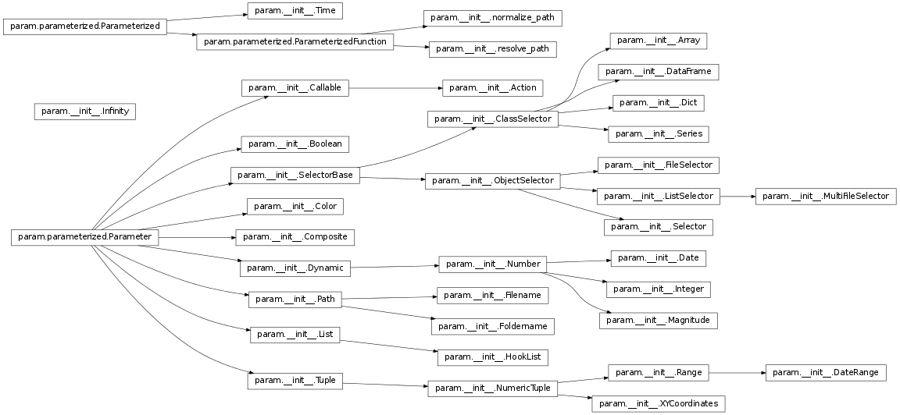
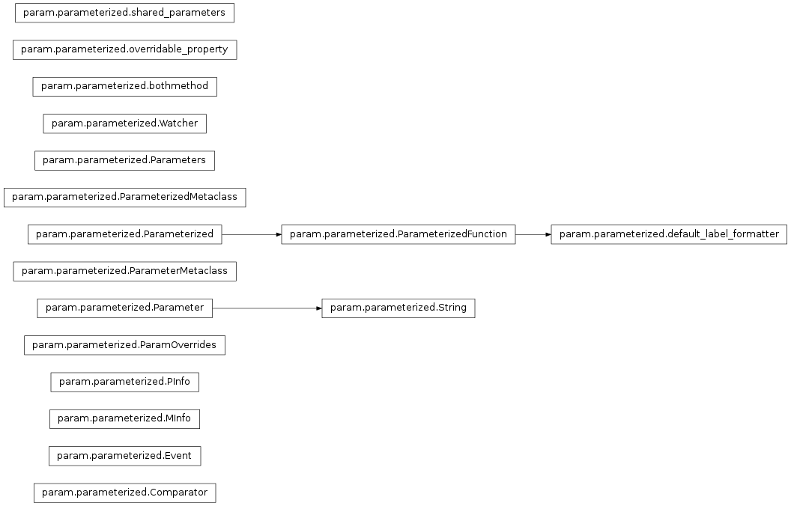
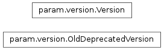

<!DOCTYPE html>

<html lang="en">
<head>
<!-- Basic Page Needs
  –––––––––––––––––––––––––––––––––––––––––––––––––– -->
<meta charset="utf-8"/>
<title>param.param Package — Param 1.9.0 documentation</title>
<meta content="Declarative Python programming using Parameters." name="description"/>
<meta content="PyViz authors" name="author"/>
<!-- Mobile Specific Metas
  –––––––––––––––––––––––––––––––––––––––––––––––––– -->
<meta content="width=device-width, initial-scale=1" name="viewport"/>
<!-- FONT
  –––––––––––––––––––––––––––––––––––––––––––––––––– -->
<script src="https://ajax.googleapis.com/ajax/libs/webfont/1.6.16/webfont.js"></script>
<script>
    WebFont.load({
      google: {
        families: ['Source Sans Pro']
      }
    });
  </script>
<!-- CSS
  –––––––––––––––––––––––––––––––––––––––––––––––––– -->
<link href="../_static/css/main.css" rel="stylesheet"/>
<link href="../_static/nbsite.css" rel="stylesheet"/>
<!-- Scripts
  –––––––––––––––––––––––––––––––––––––––––––––––––– -->
<script src="//ajax.googleapis.com/ajax/libs/jquery/2.1.1/jquery.min.js"></script>
<script async="" src="https://cdnjs.cloudflare.com/ajax/libs/mathjax/2.7.1/MathJax.js?config=TeX-MML-AM_CHTML" type="text/javascript">
</script>
<script src="../_static/js/main.js"></script>
<script src="../_static/nbsite.js"></script>
<script src="../_static/require.js"></script>
<!-- Favicon
  –––––––––––––––––––––––––––––––––––––––––––––––––– -->
<link href="../_static/favicon.ico" rel="icon" type="image/png"/>
<!-- Canonical
  –––––––––––––––––––––––––––––––––––––––––––––––––– -->
<link href="/Reference_Manual/param.html" rel="canonical">
</link></head>
<body class="">
<header class="navigation">
<div class="wrapper">
<a class="logo" href="../index.html">

</a>
<a class="navigation-menu logo-text" href="../index.html">Param</a>
<a class="navigation-menu-button" href="javascript:void(0)" id="js-mobile-menu">Menu</a>
<nav>
<ul class="navigation-menu show" id="js-navigation-menu">
<li class="nav-link"><a href="#">API</a></li>
<li class="nav-link"><a href="../About.html">About</a></li>
<li class="nav-link"><div style="display:inline-block;vertical-align: middle;"><div class="search-bar"><form action="../search.html" method="get" role="search">
<input name="q" placeholder="Search" type="search"/>
<button type="submit">

</button>
</form>
</div></div></li>
</ul>
</nav>
</div>
</header>
<!-- MAIN BODY OF DOCS –––––––––––––––––– -->
<div class="docs section">
<div id="hacketyhackhack"> <!-- style="width:20%;margin-right: 100px;"> --> <!--style="display: none;"> style="display:none;"> -->
<div class="toc" style="width:15%; margin-right:20px;">
<ul class="current">
<li class="toctree-l1"><a class="reference internal" href="../index.html">Introduction</a></li>
<li class="toctree-l1 current"><a class="current reference internal" href="#">API</a></li>
<li class="toctree-l1"><a class="reference internal" href="../About.html">About</a></li>
</ul>
</div>
</div>
<div class="content"> <!-- style="max-width:80%;margin-left:auto;margin-right: auto;">-->
<div class="section" id="param-param-package">
<h1>param.param Package<a class="headerlink" href="#param-param-package" title="Permalink to this headline">¶</a></h1>
<hr class="docutils"/>
<div class="section" id="param-package">
<h2><code class="xref py py-mod docutils literal notranslate"><span class="pre">param</span></code> Package<a class="headerlink" href="#param-package" title="Permalink to this headline">¶</a></h2>
<div class="graphviz"></div>
<map id="inheritance6ce4706456" name="inheritance6ce4706456">
<area alt="" coords="567,103,695,123" href="#param.__init__.Action" id="node1" shape="rect" target="_top" title="A user-provided function that can be invoked like a class or object method using ()."/>
<area alt="" coords="310,103,446,123" href="#param.__init__.Callable" id="node2" shape="rect" target="_top" title="Parameter holding a value that is a callable object, such as a function."/>
<area alt="" coords="781,43,905,63" href="#param.__init__.Array" id="node3" shape="rect" target="_top" title="Parameter whose value is a numpy array."/>
<area alt="" coords="547,143,714,163" href="#param.__init__.ClassSelector" id="node4" shape="rect" target="_top" title="Parameter whose value is a specified class or an instance of that class."/>
<area alt="" coords="766,82,920,103" href="#param.__init__.DataFrame" id="node10" shape="rect" target="_top" title="Parameter whose value is a pandas DataFrame."/>
<area alt="" coords="785,122,901,143" href="#param.__init__.Dict" id="node15" shape="rect" target="_top" title="Parameter whose value is a dictionary."/>
<area alt="" coords="779,162,907,182" href="#param.__init__.Series" id="node32" shape="rect" target="_top" title="Parameter whose value is a pandas Series."/>
<area alt="" coords="309,175,447,195" href="#param.__init__.Boolean" id="node5" shape="rect" target="_top" title="Binary or tristate Boolean Parameter."/>
<area alt="" coords="15,294,203,315" href="#param.parameterized.Parameter" id="node6" shape="rect" target="_top" title="An attribute descriptor for declaring parameters."/>
<area alt="" coords="296,215,460,235" href="#param.__init__.SelectorBase" id="node7" shape="rect" target="_top" title="Parameter whose value must be chosen from a list of possibilities."/>
<area alt="" coords="317,255,439,275" href="#param.__init__.Color" id="node8" shape="rect" target="_top" title="Color parameter defined as a hex RGB string with an optional #"/>
<area alt="" coords="302,294,454,315" href="#param.__init__.Composite" id="node9" shape="rect" target="_top" title="A Parameter that is a composite of a set of other attributes of the class."/>
<area alt="" coords="307,334,448,355" href="#param.__init__.Dynamic" id="node16" shape="rect" target="_top" title="Parameter whose value can be generated dynamically by a callable"/>
<area alt="" coords="319,374,437,395" href="#param.__init__.Path" id="node20" shape="rect" target="_top" title="Parameter that can be set to a string specifying the path of a file or folder."/>
<area alt="" coords="321,419,435,440" href="#param.__init__.List" id="node23" shape="rect" target="_top" title="Parameter whose value is a list of objects, usually of a specified type."/>
<area alt="" coords="317,479,439,499" href="#param.__init__.Tuple" id="node30" shape="rect" target="_top" title="A tuple Parameter (e.g. ('a',7.6,[3,5])) with a fixed tuple length."/>
<area alt="" coords="545,222,717,243" href="#param.__init__.ObjectSelector" id="node18" shape="rect" target="_top" title="Parameter whose value must be one object from a list of possible objects."/>
<area alt="" coords="782,321,904,342" href="#param.__init__.Date" id="node11" shape="rect" target="_top" title="Date parameter of datetime type."/>
<area alt="" coords="562,329,700,349" href="#param.__init__.Number" id="node12" shape="rect" target="_top" title="A numeric Dynamic Parameter, with a default value and optional bounds."/>
<area alt="" coords="777,361,909,382" href="#param.__init__.Integer" id="node25" shape="rect" target="_top" title="Numeric Parameter required to be an Integer"/>
<area alt="" coords="768,401,918,422" href="#param.__init__.Magnitude" id="node27" shape="rect" target="_top" title="Numeric Parameter required to be in the range [0.0-1.0]."/>
<area alt="" coords="980,468,1134,488" href="#param.__init__.DateRange" id="node13" shape="rect" target="_top" title="A date range specified as (start_date, end_date)."/>
<area alt="" coords="779,468,907,488" href="#param.__init__.Range" id="node14" shape="rect" target="_top" title="A numeric range with optional bounds and softbounds"/>
<area alt="" coords="765,202,921,222" href="#param.__init__.FileSelector" id="node17" shape="rect" target="_top" title="Given a path glob, allows one file to be selected from those matching."/>
<area alt="" coords="764,242,922,262" href="#param.__init__.ListSelector" id="node26" shape="rect" target="_top" title="Variant of ObjectSelector where the value can be multiple objects from"/>
<area alt="" coords="774,282,912,302" href="#param.__init__.Selector" id="node31" shape="rect" target="_top" title="A more user friendly ObjectSelector that picks the first object for"/>
<area alt="" coords="560,369,702,389" href="#param.__init__.Filename" id="node19" shape="rect" target="_top" title="Parameter that can be set to a string specifying the path of a file."/>
<area alt="" coords="552,409,710,429" href="#param.__init__.Foldername" id="node21" shape="rect" target="_top" title="Parameter that can be set to a string specifying the path of a folder."/>
<area alt="" coords="560,448,701,469" href="#param.__init__.HookList" id="node22" shape="rect" target="_top" title="Parameter whose value is a list of callable objects."/>
<area alt="" coords="44,133,173,153" href="#param.__init__.Infinity" id="node24" shape="rect" target="_top" title="An instance of this class represents an infinite value. Unlike"/>
<area alt="" coords="967,242,1147,262" href="#param.__init__.MultiFileSelector" id="node28" shape="rect" target="_top" title="Given a path glob, allows multiple files to be selected from the list of matches."/>
<area alt="" coords="548,488,714,509" href="#param.__init__.NumericTuple" id="node29" shape="rect" target="_top" title="A numeric tuple Parameter (e.g. (4.5,7.6,3)) with a fixed tuple length."/>
<area alt="" coords="758,508,928,528" href="#param.__init__.XYCoordinates" id="node35" shape="rect" target="_top" title="A NumericTuple for an X,Y coordinate."/>
<area alt="" coords="317,4,439,24" href="#param.__init__.Time" id="node33" shape="rect" target="_top" title="A callable object returning a number for the current time."/>
<area alt="" coords="4,24,213,45" href="#param.parameterized.Parameterized" id="node34" shape="rect" target="_top" title="params(name=String)"/>
<area alt="" coords="252,44,504,64" href="#param.parameterized.ParameterizedFunction" id="node37" shape="rect" target="_top" title="params(name=String)"/>
<area alt="" coords="543,13,719,34" href="#param.__init__.normalize_path" id="node36" shape="rect" target="_top" title="Convert a UNIX-style path to the current OS's format,"/>
<area alt="" coords="550,53,712,74" href="#param.__init__.resolve_path" id="node38" shape="rect" target="_top" title="Find the path to an existing file, searching the paths specified"/>
</map><span class="target" id="module-param.__init__"></span><p>Parameters are a kind of class attribute allowing special behavior,
including dynamically generated parameter values, documentation
strings, constant and read-only parameters, and type or range checking
at assignment time.</p>
<p>Potentially useful for any large Python program that needs
user-modifiable object attributes; see the Parameter and Parameterized
classes for more information.  If you do not want to add a dependency
on external code by importing from a separately installed param
package, you can simply save this file as param.py and copy it and
parameterized.py directly into your own package.</p>
<p>This file contains subclasses of Parameter, implementing specific
parameter types (e.g. Number), and also imports the definition of
Parameters and Parameterized classes.</p>
<dl class="class">
<dt id="param.__init__.Action">
<em class="property">class </em><code class="descclassname">param.__init__.</code><code class="descname">Action</code><span class="sig-paren">(</span><em>default=None</em>, <em>doc=None</em>, <em>label=None</em>, <em>precedence=None</em>, <em>instantiate=False</em>, <em>constant=False</em>, <em>readonly=False</em>, <em>pickle_default_value=True</em>, <em>allow_None=False</em>, <em>per_instance=True</em><span class="sig-paren">)</span><a class="reference internal" href="../_modules/param/__init__.html#Action"><span class="viewcode-link">[source]</span></a><a class="headerlink" href="#param.__init__.Action" title="Permalink to this definition">¶</a></dt>
<dd><p>Bases: <a class="reference internal" href="#param.__init__.Callable" title="param.__init__.Callable"><code class="xref py py-class docutils literal notranslate"><span class="pre">param.__init__.Callable</span></code></a></p>
<p>A user-provided function that can be invoked like a class or object method using ().
In a GUI, this might be mapped to a button, but it can be invoked directly as well.</p>
</dd></dl>
<dl class="class">
<dt id="param.__init__.Array">
<em class="property">class </em><code class="descclassname">param.__init__.</code><code class="descname">Array</code><span class="sig-paren">(</span><em>default=None</em>, <em>**params</em><span class="sig-paren">)</span><a class="reference internal" href="../_modules/param/__init__.html#Array"><span class="viewcode-link">[source]</span></a><a class="headerlink" href="#param.__init__.Array" title="Permalink to this definition">¶</a></dt>
<dd><p>Bases: <a class="reference internal" href="#param.__init__.ClassSelector" title="param.__init__.ClassSelector"><code class="xref py py-class docutils literal notranslate"><span class="pre">param.__init__.ClassSelector</span></code></a></p>
<p>Parameter whose value is a numpy array.</p>
<dl class="method">
<dt id="param.__init__.Array.get_range">
<code class="descname">get_range</code><span class="sig-paren">(</span><span class="sig-paren">)</span><a class="headerlink" href="#param.__init__.Array.get_range" title="Permalink to this definition">¶</a></dt>
<dd><p>Return the possible types for this parameter’s value.</p>
<p>(I.e. return {name: &lt;class&gt;} for all classes that are
concrete_descendents() of <a href="#id1"><span class="problematic" id="id2">self.class_</span></a>.)</p>
<p>Only classes from modules that have been imported are added
(see concrete_descendents()).</p>
</dd></dl>
</dd></dl>
<dl class="class">
<dt id="param.__init__.Boolean">
<em class="property">class </em><code class="descclassname">param.__init__.</code><code class="descname">Boolean</code><span class="sig-paren">(</span><em>default=False</em>, <em>bounds=(0</em>, <em>1)</em>, <em>**params</em><span class="sig-paren">)</span><a class="reference internal" href="../_modules/param/__init__.html#Boolean"><span class="viewcode-link">[source]</span></a><a class="headerlink" href="#param.__init__.Boolean" title="Permalink to this definition">¶</a></dt>
<dd><p>Bases: <a class="reference internal" href="#param.parameterized.Parameter" title="param.parameterized.Parameter"><code class="xref py py-class docutils literal notranslate"><span class="pre">param.parameterized.Parameter</span></code></a></p>
<p>Binary or tristate Boolean Parameter.</p>
</dd></dl>
<dl class="class">
<dt id="param.__init__.Callable">
<em class="property">class </em><code class="descclassname">param.__init__.</code><code class="descname">Callable</code><span class="sig-paren">(</span><em>default=None</em>, <em>doc=None</em>, <em>label=None</em>, <em>precedence=None</em>, <em>instantiate=False</em>, <em>constant=False</em>, <em>readonly=False</em>, <em>pickle_default_value=True</em>, <em>allow_None=False</em>, <em>per_instance=True</em><span class="sig-paren">)</span><a class="reference internal" href="../_modules/param/__init__.html#Callable"><span class="viewcode-link">[source]</span></a><a class="headerlink" href="#param.__init__.Callable" title="Permalink to this definition">¶</a></dt>
<dd><p>Bases: <a class="reference internal" href="#param.parameterized.Parameter" title="param.parameterized.Parameter"><code class="xref py py-class docutils literal notranslate"><span class="pre">param.parameterized.Parameter</span></code></a></p>
<p>Parameter holding a value that is a callable object, such as a function.</p>
<p>A keyword argument instantiate=True should be provided when a
function object is used that might have state.  On the other hand,
regular standalone functions cannot be deepcopied as of Python
2.4, so instantiate must be False for those values.</p>
</dd></dl>
<dl class="class">
<dt id="param.__init__.ClassSelector">
<em class="property">class </em><code class="descclassname">param.__init__.</code><code class="descname">ClassSelector</code><span class="sig-paren">(</span><em>class_</em>, <em>default=None</em>, <em>instantiate=True</em>, <em>is_instance=True</em>, <em>**params</em><span class="sig-paren">)</span><a class="reference internal" href="../_modules/param/__init__.html#ClassSelector"><span class="viewcode-link">[source]</span></a><a class="headerlink" href="#param.__init__.ClassSelector" title="Permalink to this definition">¶</a></dt>
<dd><p>Bases: <a class="reference internal" href="#param.__init__.SelectorBase" title="param.__init__.SelectorBase"><code class="xref py py-class docutils literal notranslate"><span class="pre">param.__init__.SelectorBase</span></code></a></p>
<p>Parameter whose value is a specified class or an instance of that class.
By default, requires an instance, but if is_instance=False, accepts a class instead.
Both class and instance values respect the instantiate slot, though it matters only
for is_instance=True.</p>
<dl class="method">
<dt id="param.__init__.ClassSelector.get_range">
<code class="descname">get_range</code><span class="sig-paren">(</span><span class="sig-paren">)</span><a class="reference internal" href="../_modules/param/__init__.html#ClassSelector.get_range"><span class="viewcode-link">[source]</span></a><a class="headerlink" href="#param.__init__.ClassSelector.get_range" title="Permalink to this definition">¶</a></dt>
<dd><p>Return the possible types for this parameter’s value.</p>
<p>(I.e. return {name: &lt;class&gt;} for all classes that are
concrete_descendents() of <a href="#id3"><span class="problematic" id="id4">self.class_</span></a>.)</p>
<p>Only classes from modules that have been imported are added
(see concrete_descendents()).</p>
</dd></dl>
</dd></dl>
<dl class="class">
<dt id="param.__init__.Color">
<em class="property">class </em><code class="descclassname">param.__init__.</code><code class="descname">Color</code><span class="sig-paren">(</span><em>default=None</em>, <em>allow_None=False</em>, <em>**kwargs</em><span class="sig-paren">)</span><a class="reference internal" href="../_modules/param/__init__.html#Color"><span class="viewcode-link">[source]</span></a><a class="headerlink" href="#param.__init__.Color" title="Permalink to this definition">¶</a></dt>
<dd><p>Bases: <a class="reference internal" href="#param.parameterized.Parameter" title="param.parameterized.Parameter"><code class="xref py py-class docutils literal notranslate"><span class="pre">param.parameterized.Parameter</span></code></a></p>
<p>Color parameter defined as a hex RGB string with an optional #
prefix.</p>
</dd></dl>
<dl class="class">
<dt id="param.__init__.Composite">
<em class="property">class </em><code class="descclassname">param.__init__.</code><code class="descname">Composite</code><span class="sig-paren">(</span><em>attribs=None</em>, <em>**kw</em><span class="sig-paren">)</span><a class="reference internal" href="../_modules/param/__init__.html#Composite"><span class="viewcode-link">[source]</span></a><a class="headerlink" href="#param.__init__.Composite" title="Permalink to this definition">¶</a></dt>
<dd><p>Bases: <a class="reference internal" href="#param.parameterized.Parameter" title="param.parameterized.Parameter"><code class="xref py py-class docutils literal notranslate"><span class="pre">param.parameterized.Parameter</span></code></a></p>
<p>A Parameter that is a composite of a set of other attributes of the class.</p>
<p>The constructor argument ‘attribs’ takes a list of attribute
names, which may or may not be Parameters.  Getting the parameter
returns a list of the values of the constituents of the composite,
in the order specified.  Likewise, setting the parameter takes a
sequence of values and sets the value of the constituent
attributes.</p>
</dd></dl>
<dl class="class">
<dt id="param.__init__.DataFrame">
<em class="property">class </em><code class="descclassname">param.__init__.</code><code class="descname">DataFrame</code><span class="sig-paren">(</span><em>default=None</em>, <em>rows=None</em>, <em>columns=None</em>, <em>ordered=None</em>, <em>**params</em><span class="sig-paren">)</span><a class="reference internal" href="../_modules/param/__init__.html#DataFrame"><span class="viewcode-link">[source]</span></a><a class="headerlink" href="#param.__init__.DataFrame" title="Permalink to this definition">¶</a></dt>
<dd><p>Bases: <a class="reference internal" href="#param.__init__.ClassSelector" title="param.__init__.ClassSelector"><code class="xref py py-class docutils literal notranslate"><span class="pre">param.__init__.ClassSelector</span></code></a></p>
<p>Parameter whose value is a pandas DataFrame.</p>
<p>The structure of the DataFrame can be constrained by the rows and
columns arguments:</p>
<p>rows: If specified, may be a number or an integer bounds tuple to
constrain the allowable number of rows.</p>
<p>columns: If specified, may be a number, an integer bounds tuple, a
list or a set. If the argument is numeric, constrains the number of
columns using the same semantics as used for rows. If either a list
or set of strings, the column names will be validated. If a set is
used, the supplied DataFrame must contain the specified columns and
if a list is given, the supplied DataFrame must contain exactly the
same columns and in the same order and no other columns.</p>
<dl class="method">
<dt id="param.__init__.DataFrame.get_range">
<code class="descname">get_range</code><span class="sig-paren">(</span><span class="sig-paren">)</span><a class="headerlink" href="#param.__init__.DataFrame.get_range" title="Permalink to this definition">¶</a></dt>
<dd><p>Return the possible types for this parameter’s value.</p>
<p>(I.e. return {name: &lt;class&gt;} for all classes that are
concrete_descendents() of <a href="#id5"><span class="problematic" id="id6">self.class_</span></a>.)</p>
<p>Only classes from modules that have been imported are added
(see concrete_descendents()).</p>
</dd></dl>
</dd></dl>
<dl class="class">
<dt id="param.__init__.Date">
<em class="property">class </em><code class="descclassname">param.__init__.</code><code class="descname">Date</code><span class="sig-paren">(</span><em>default=None</em>, <em>**kwargs</em><span class="sig-paren">)</span><a class="reference internal" href="../_modules/param/__init__.html#Date"><span class="viewcode-link">[source]</span></a><a class="headerlink" href="#param.__init__.Date" title="Permalink to this definition">¶</a></dt>
<dd><p>Bases: <a class="reference internal" href="#param.__init__.Number" title="param.__init__.Number"><code class="xref py py-class docutils literal notranslate"><span class="pre">param.__init__.Number</span></code></a></p>
<p>Date parameter of datetime type.</p>
<dl class="method">
<dt id="param.__init__.Date.crop_to_bounds">
<code class="descname">crop_to_bounds</code><span class="sig-paren">(</span><em>val</em><span class="sig-paren">)</span><a class="headerlink" href="#param.__init__.Date.crop_to_bounds" title="Permalink to this definition">¶</a></dt>
<dd><p>Return the given value cropped to be within the hard bounds
for this parameter.</p>
<p>If a numeric value is passed in, check it is within the hard
bounds. If it is larger than the high bound, return the high
bound. If it’s smaller, return the low bound. In either case, the
returned value could be None.  If a non-numeric value is passed
in, set to be the default value (which could be None).  In no
case is an exception raised; all values are accepted.</p>
</dd></dl>
<dl class="method">
<dt id="param.__init__.Date.get_soft_bounds">
<code class="descname">get_soft_bounds</code><span class="sig-paren">(</span><span class="sig-paren">)</span><a class="headerlink" href="#param.__init__.Date.get_soft_bounds" title="Permalink to this definition">¶</a></dt>
<dd><p>For each soft bound (upper and lower), if there is a defined bound (not equal to None)
then it is returned, otherwise it defaults to the hard bound. The hard bound could still be None.</p>
</dd></dl>
<dl class="method">
<dt id="param.__init__.Date.set_in_bounds">
<code class="descname">set_in_bounds</code><span class="sig-paren">(</span><em>obj</em>, <em>val</em><span class="sig-paren">)</span><a class="headerlink" href="#param.__init__.Date.set_in_bounds" title="Permalink to this definition">¶</a></dt>
<dd><p>Set to the given value, but cropped to be within the legal bounds.
All objects are accepted, and no exceptions will be raised.  See
crop_to_bounds for details on how cropping is done.</p>
</dd></dl>
</dd></dl>
<dl class="class">
<dt id="param.__init__.DateRange">
<em class="property">class </em><code class="descclassname">param.__init__.</code><code class="descname">DateRange</code><span class="sig-paren">(</span><em>default=None</em>, <em>bounds=None</em>, <em>softbounds=None</em>, <em>inclusive_bounds=(True</em>, <em>True)</em>, <em>**params</em><span class="sig-paren">)</span><a class="reference internal" href="../_modules/param/__init__.html#DateRange"><span class="viewcode-link">[source]</span></a><a class="headerlink" href="#param.__init__.DateRange" title="Permalink to this definition">¶</a></dt>
<dd><p>Bases: <a class="reference internal" href="#param.__init__.Range" title="param.__init__.Range"><code class="xref py py-class docutils literal notranslate"><span class="pre">param.__init__.Range</span></code></a></p>
<p>A date range specified as (start_date, end_date).</p>
<p>Dates must be specified as datetime-like types (see
param.dt_types).</p>
<dl class="method">
<dt id="param.__init__.DateRange.get_soft_bounds">
<code class="descname">get_soft_bounds</code><span class="sig-paren">(</span><span class="sig-paren">)</span><a class="headerlink" href="#param.__init__.DateRange.get_soft_bounds" title="Permalink to this definition">¶</a></dt>
<dd><p>For each soft bound (upper and lower), if there is a defined bound (not equal to None)
then it is returned, otherwise it defaults to the hard bound. The hard bound could still be None.</p>
</dd></dl>
</dd></dl>
<dl class="class">
<dt id="param.__init__.Dict">
<em class="property">class </em><code class="descclassname">param.__init__.</code><code class="descname">Dict</code><span class="sig-paren">(</span><em>default=None</em>, <em>**params</em><span class="sig-paren">)</span><a class="reference internal" href="../_modules/param/__init__.html#Dict"><span class="viewcode-link">[source]</span></a><a class="headerlink" href="#param.__init__.Dict" title="Permalink to this definition">¶</a></dt>
<dd><p>Bases: <a class="reference internal" href="#param.__init__.ClassSelector" title="param.__init__.ClassSelector"><code class="xref py py-class docutils literal notranslate"><span class="pre">param.__init__.ClassSelector</span></code></a></p>
<p>Parameter whose value is a dictionary.</p>
<dl class="method">
<dt id="param.__init__.Dict.get_range">
<code class="descname">get_range</code><span class="sig-paren">(</span><span class="sig-paren">)</span><a class="headerlink" href="#param.__init__.Dict.get_range" title="Permalink to this definition">¶</a></dt>
<dd><p>Return the possible types for this parameter’s value.</p>
<p>(I.e. return {name: &lt;class&gt;} for all classes that are
concrete_descendents() of <a href="#id7"><span class="problematic" id="id8">self.class_</span></a>.)</p>
<p>Only classes from modules that have been imported are added
(see concrete_descendents()).</p>
</dd></dl>
</dd></dl>
<dl class="class">
<dt id="param.__init__.Dynamic">
<em class="property">class </em><code class="descclassname">param.__init__.</code><code class="descname">Dynamic</code><span class="sig-paren">(</span><em>**params</em><span class="sig-paren">)</span><a class="reference internal" href="../_modules/param/__init__.html#Dynamic"><span class="viewcode-link">[source]</span></a><a class="headerlink" href="#param.__init__.Dynamic" title="Permalink to this definition">¶</a></dt>
<dd><p>Bases: <a class="reference internal" href="#param.parameterized.Parameter" title="param.parameterized.Parameter"><code class="xref py py-class docutils literal notranslate"><span class="pre">param.parameterized.Parameter</span></code></a></p>
<p>Parameter whose value can be generated dynamically by a callable
object.</p>
<p>If a Parameter is declared as Dynamic, it can be set a callable
object (such as a function or callable class), and getting the
parameter’s value will call that callable.</p>
<p>Note that at present, the callable object must allow attributes
to be set on itself.</p>
<p>[Python 2.4 limitation: the callable object must be an instance of a
callable class, rather than a named function or a lambda function,
otherwise the object will not be picklable or deepcopyable.]</p>
<p>If set as time_dependent, setting the Dynamic.time_fn allows the
production of dynamic values to be controlled: a new value will be
produced only if the current value of time_fn is different from
what it was the last time the parameter value was requested.</p>
<p>By default, the Dynamic parameters are not time_dependent so that
new values are generated on every call regardless of the time. The
default time_fn used when time_dependent is a single Time instance
that allows general manipulations of time. It may be set to some
other callable as required so long as a number is returned on each
call.</p>
</dd></dl>
<dl class="class">
<dt id="param.__init__.FileSelector">
<em class="property">class </em><code class="descclassname">param.__init__.</code><code class="descname">FileSelector</code><span class="sig-paren">(</span><em>default=None</em>, <em>path=''</em>, <em>**kwargs</em><span class="sig-paren">)</span><a class="reference internal" href="../_modules/param/__init__.html#FileSelector"><span class="viewcode-link">[source]</span></a><a class="headerlink" href="#param.__init__.FileSelector" title="Permalink to this definition">¶</a></dt>
<dd><p>Bases: <a class="reference internal" href="#param.__init__.ObjectSelector" title="param.__init__.ObjectSelector"><code class="xref py py-class docutils literal notranslate"><span class="pre">param.__init__.ObjectSelector</span></code></a></p>
<p>Given a path glob, allows one file to be selected from those matching.</p>
<dl class="method">
<dt id="param.__init__.FileSelector.compute_default">
<code class="descname">compute_default</code><span class="sig-paren">(</span><span class="sig-paren">)</span><a class="headerlink" href="#param.__init__.FileSelector.compute_default" title="Permalink to this definition">¶</a></dt>
<dd><p>If this parameter’s compute_default_fn is callable, call it
and store the result in self.default.</p>
<p>Also removes None from the list of objects (if the default is
no longer None).</p>
</dd></dl>
<dl class="method">
<dt id="param.__init__.FileSelector.get_range">
<code class="descname">get_range</code><span class="sig-paren">(</span><span class="sig-paren">)</span><a class="reference internal" href="../_modules/param/__init__.html#FileSelector.get_range"><span class="viewcode-link">[source]</span></a><a class="headerlink" href="#param.__init__.FileSelector.get_range" title="Permalink to this definition">¶</a></dt>
<dd><p>Return the possible objects to which this parameter could be set.</p>
<p>(Returns the dictionary {object.name:object}.)</p>
</dd></dl>
</dd></dl>
<dl class="class">
<dt id="param.__init__.Filename">
<em class="property">class </em><code class="descclassname">param.__init__.</code><code class="descname">Filename</code><span class="sig-paren">(</span><em>default=None</em>, <em>search_paths=None</em>, <em>**params</em><span class="sig-paren">)</span><a class="reference internal" href="../_modules/param/__init__.html#Filename"><span class="viewcode-link">[source]</span></a><a class="headerlink" href="#param.__init__.Filename" title="Permalink to this definition">¶</a></dt>
<dd><p>Bases: <a class="reference internal" href="#param.__init__.Path" title="param.__init__.Path"><code class="xref py py-class docutils literal notranslate"><span class="pre">param.__init__.Path</span></code></a></p>
<p>Parameter that can be set to a string specifying the path of a file.</p>
<p>The string should be specified in UNIX style, but it will be
returned in the format of the user’s operating system.</p>
<p>The specified path can be absolute, or relative to either:</p>
<ul class="simple">
<li><p>any of the paths specified in the search_paths attribute (if
search_paths is not None);</p></li>
</ul>
<p>or</p>
<ul class="simple">
<li><p>any of the paths searched by resolve_path() (if search_paths
is None).</p></li>
</ul>
</dd></dl>
<dl class="class">
<dt id="param.__init__.Foldername">
<em class="property">class </em><code class="descclassname">param.__init__.</code><code class="descname">Foldername</code><span class="sig-paren">(</span><em>default=None</em>, <em>search_paths=None</em>, <em>**params</em><span class="sig-paren">)</span><a class="reference internal" href="../_modules/param/__init__.html#Foldername"><span class="viewcode-link">[source]</span></a><a class="headerlink" href="#param.__init__.Foldername" title="Permalink to this definition">¶</a></dt>
<dd><p>Bases: <a class="reference internal" href="#param.__init__.Path" title="param.__init__.Path"><code class="xref py py-class docutils literal notranslate"><span class="pre">param.__init__.Path</span></code></a></p>
<p>Parameter that can be set to a string specifying the path of a folder.</p>
<p>The string should be specified in UNIX style, but it will be
returned in the format of the user’s operating system.</p>
<p>The specified path can be absolute, or relative to either:</p>
<ul class="simple">
<li><p>any of the paths specified in the search_paths attribute (if
search_paths is not None);</p></li>
</ul>
<p>or</p>
<ul class="simple">
<li><p>any of the paths searched by resolve_dir_path() (if search_paths
is None).</p></li>
</ul>
</dd></dl>
<dl class="class">
<dt id="param.__init__.HookList">
<em class="property">class </em><code class="descclassname">param.__init__.</code><code class="descname">HookList</code><span class="sig-paren">(</span><em>default=[]</em>, <em>class_=None</em>, <em>instantiate=True</em>, <em>bounds=(0</em>, <em>None)</em>, <em>**params</em><span class="sig-paren">)</span><a class="reference internal" href="../_modules/param/__init__.html#HookList"><span class="viewcode-link">[source]</span></a><a class="headerlink" href="#param.__init__.HookList" title="Permalink to this definition">¶</a></dt>
<dd><p>Bases: <a class="reference internal" href="#param.__init__.List" title="param.__init__.List"><code class="xref py py-class docutils literal notranslate"><span class="pre">param.__init__.List</span></code></a></p>
<p>Parameter whose value is a list of callable objects.</p>
<p>This type of List Parameter is typically used to provide a place
for users to register a set of commands to be called at a
specified place in some sequence of processing steps.</p>
</dd></dl>
<dl class="class">
<dt id="param.__init__.Infinity">
<em class="property">class </em><code class="descclassname">param.__init__.</code><code class="descname">Infinity</code><a class="reference internal" href="../_modules/param/__init__.html#Infinity"><span class="viewcode-link">[source]</span></a><a class="headerlink" href="#param.__init__.Infinity" title="Permalink to this definition">¶</a></dt>
<dd><p>Bases: <code class="xref py py-class docutils literal notranslate"><span class="pre">object</span></code></p>
<p>An instance of this class represents an infinite value. Unlike
Python’s float(‘inf’) value, this object can be safely compared
with gmpy numeric types across different gmpy versions.</p>
<p>All operators on Infinity() return Infinity(), apart from the
comparison and equality operators. Equality works by checking
whether the two objects are both instances of this class.</p>
</dd></dl>
<dl class="class">
<dt id="param.__init__.Integer">
<em class="property">class </em><code class="descclassname">param.__init__.</code><code class="descname">Integer</code><span class="sig-paren">(</span><em>default=0</em>, <em>**params</em><span class="sig-paren">)</span><a class="reference internal" href="../_modules/param/__init__.html#Integer"><span class="viewcode-link">[source]</span></a><a class="headerlink" href="#param.__init__.Integer" title="Permalink to this definition">¶</a></dt>
<dd><p>Bases: <a class="reference internal" href="#param.__init__.Number" title="param.__init__.Number"><code class="xref py py-class docutils literal notranslate"><span class="pre">param.__init__.Number</span></code></a></p>
<p>Numeric Parameter required to be an Integer</p>
<dl class="method">
<dt id="param.__init__.Integer.crop_to_bounds">
<code class="descname">crop_to_bounds</code><span class="sig-paren">(</span><em>val</em><span class="sig-paren">)</span><a class="headerlink" href="#param.__init__.Integer.crop_to_bounds" title="Permalink to this definition">¶</a></dt>
<dd><p>Return the given value cropped to be within the hard bounds
for this parameter.</p>
<p>If a numeric value is passed in, check it is within the hard
bounds. If it is larger than the high bound, return the high
bound. If it’s smaller, return the low bound. In either case, the
returned value could be None.  If a non-numeric value is passed
in, set to be the default value (which could be None).  In no
case is an exception raised; all values are accepted.</p>
</dd></dl>
<dl class="method">
<dt id="param.__init__.Integer.get_soft_bounds">
<code class="descname">get_soft_bounds</code><span class="sig-paren">(</span><span class="sig-paren">)</span><a class="headerlink" href="#param.__init__.Integer.get_soft_bounds" title="Permalink to this definition">¶</a></dt>
<dd><p>For each soft bound (upper and lower), if there is a defined bound (not equal to None)
then it is returned, otherwise it defaults to the hard bound. The hard bound could still be None.</p>
</dd></dl>
<dl class="method">
<dt id="param.__init__.Integer.set_in_bounds">
<code class="descname">set_in_bounds</code><span class="sig-paren">(</span><em>obj</em>, <em>val</em><span class="sig-paren">)</span><a class="headerlink" href="#param.__init__.Integer.set_in_bounds" title="Permalink to this definition">¶</a></dt>
<dd><p>Set to the given value, but cropped to be within the legal bounds.
All objects are accepted, and no exceptions will be raised.  See
crop_to_bounds for details on how cropping is done.</p>
</dd></dl>
</dd></dl>
<dl class="class">
<dt id="param.__init__.List">
<em class="property">class </em><code class="descclassname">param.__init__.</code><code class="descname">List</code><span class="sig-paren">(</span><em>default=[]</em>, <em>class_=None</em>, <em>instantiate=True</em>, <em>bounds=(0</em>, <em>None)</em>, <em>**params</em><span class="sig-paren">)</span><a class="reference internal" href="../_modules/param/__init__.html#List"><span class="viewcode-link">[source]</span></a><a class="headerlink" href="#param.__init__.List" title="Permalink to this definition">¶</a></dt>
<dd><p>Bases: <a class="reference internal" href="#param.parameterized.Parameter" title="param.parameterized.Parameter"><code class="xref py py-class docutils literal notranslate"><span class="pre">param.parameterized.Parameter</span></code></a></p>
<p>Parameter whose value is a list of objects, usually of a specified type.</p>
<p>The bounds allow a minimum and/or maximum length of
list to be enforced.  If the class is non-None, all
items in the list are checked to be of that type.</p>
</dd></dl>
<dl class="class">
<dt id="param.__init__.ListSelector">
<em class="property">class </em><code class="descclassname">param.__init__.</code><code class="descname">ListSelector</code><span class="sig-paren">(</span><em>default=None</em>, <em>objects=None</em>, <em>instantiate=False</em>, <em>compute_default_fn=None</em>, <em>check_on_set=None</em>, <em>allow_None=None</em>, <em>**params</em><span class="sig-paren">)</span><a class="reference internal" href="../_modules/param/__init__.html#ListSelector"><span class="viewcode-link">[source]</span></a><a class="headerlink" href="#param.__init__.ListSelector" title="Permalink to this definition">¶</a></dt>
<dd><p>Bases: <a class="reference internal" href="#param.__init__.ObjectSelector" title="param.__init__.ObjectSelector"><code class="xref py py-class docutils literal notranslate"><span class="pre">param.__init__.ObjectSelector</span></code></a></p>
<p>Variant of ObjectSelector where the value can be multiple objects from
a list of possible objects.</p>
<dl class="method">
<dt id="param.__init__.ListSelector.compute_default">
<code class="descname">compute_default</code><span class="sig-paren">(</span><span class="sig-paren">)</span><a class="reference internal" href="../_modules/param/__init__.html#ListSelector.compute_default"><span class="viewcode-link">[source]</span></a><a class="headerlink" href="#param.__init__.ListSelector.compute_default" title="Permalink to this definition">¶</a></dt>
<dd><p>If this parameter’s compute_default_fn is callable, call it
and store the result in self.default.</p>
<p>Also removes None from the list of objects (if the default is
no longer None).</p>
</dd></dl>
<dl class="method">
<dt id="param.__init__.ListSelector.get_range">
<code class="descname">get_range</code><span class="sig-paren">(</span><span class="sig-paren">)</span><a class="headerlink" href="#param.__init__.ListSelector.get_range" title="Permalink to this definition">¶</a></dt>
<dd><p>Return the possible objects to which this parameter could be set.</p>
<p>(Returns the dictionary {object.name:object}.)</p>
</dd></dl>
</dd></dl>
<dl class="class">
<dt id="param.__init__.Magnitude">
<em class="property">class </em><code class="descclassname">param.__init__.</code><code class="descname">Magnitude</code><span class="sig-paren">(</span><em>default=1.0</em>, <em>softbounds=None</em>, <em>**params</em><span class="sig-paren">)</span><a class="reference internal" href="../_modules/param/__init__.html#Magnitude"><span class="viewcode-link">[source]</span></a><a class="headerlink" href="#param.__init__.Magnitude" title="Permalink to this definition">¶</a></dt>
<dd><p>Bases: <a class="reference internal" href="#param.__init__.Number" title="param.__init__.Number"><code class="xref py py-class docutils literal notranslate"><span class="pre">param.__init__.Number</span></code></a></p>
<p>Numeric Parameter required to be in the range [0.0-1.0].</p>
<dl class="method">
<dt id="param.__init__.Magnitude.crop_to_bounds">
<code class="descname">crop_to_bounds</code><span class="sig-paren">(</span><em>val</em><span class="sig-paren">)</span><a class="headerlink" href="#param.__init__.Magnitude.crop_to_bounds" title="Permalink to this definition">¶</a></dt>
<dd><p>Return the given value cropped to be within the hard bounds
for this parameter.</p>
<p>If a numeric value is passed in, check it is within the hard
bounds. If it is larger than the high bound, return the high
bound. If it’s smaller, return the low bound. In either case, the
returned value could be None.  If a non-numeric value is passed
in, set to be the default value (which could be None).  In no
case is an exception raised; all values are accepted.</p>
</dd></dl>
<dl class="method">
<dt id="param.__init__.Magnitude.get_soft_bounds">
<code class="descname">get_soft_bounds</code><span class="sig-paren">(</span><span class="sig-paren">)</span><a class="headerlink" href="#param.__init__.Magnitude.get_soft_bounds" title="Permalink to this definition">¶</a></dt>
<dd><p>For each soft bound (upper and lower), if there is a defined bound (not equal to None)
then it is returned, otherwise it defaults to the hard bound. The hard bound could still be None.</p>
</dd></dl>
<dl class="method">
<dt id="param.__init__.Magnitude.set_in_bounds">
<code class="descname">set_in_bounds</code><span class="sig-paren">(</span><em>obj</em>, <em>val</em><span class="sig-paren">)</span><a class="headerlink" href="#param.__init__.Magnitude.set_in_bounds" title="Permalink to this definition">¶</a></dt>
<dd><p>Set to the given value, but cropped to be within the legal bounds.
All objects are accepted, and no exceptions will be raised.  See
crop_to_bounds for details on how cropping is done.</p>
</dd></dl>
</dd></dl>
<dl class="class">
<dt id="param.__init__.MultiFileSelector">
<em class="property">class </em><code class="descclassname">param.__init__.</code><code class="descname">MultiFileSelector</code><span class="sig-paren">(</span><em>default=None</em>, <em>path=''</em>, <em>**kwargs</em><span class="sig-paren">)</span><a class="reference internal" href="../_modules/param/__init__.html#MultiFileSelector"><span class="viewcode-link">[source]</span></a><a class="headerlink" href="#param.__init__.MultiFileSelector" title="Permalink to this definition">¶</a></dt>
<dd><p>Bases: <a class="reference internal" href="#param.__init__.ListSelector" title="param.__init__.ListSelector"><code class="xref py py-class docutils literal notranslate"><span class="pre">param.__init__.ListSelector</span></code></a></p>
<p>Given a path glob, allows multiple files to be selected from the list of matches.</p>
<dl class="method">
<dt id="param.__init__.MultiFileSelector.compute_default">
<code class="descname">compute_default</code><span class="sig-paren">(</span><span class="sig-paren">)</span><a class="headerlink" href="#param.__init__.MultiFileSelector.compute_default" title="Permalink to this definition">¶</a></dt>
<dd><p>If this parameter’s compute_default_fn is callable, call it
and store the result in self.default.</p>
<p>Also removes None from the list of objects (if the default is
no longer None).</p>
</dd></dl>
<dl class="method">
<dt id="param.__init__.MultiFileSelector.get_range">
<code class="descname">get_range</code><span class="sig-paren">(</span><span class="sig-paren">)</span><a class="reference internal" href="../_modules/param/__init__.html#MultiFileSelector.get_range"><span class="viewcode-link">[source]</span></a><a class="headerlink" href="#param.__init__.MultiFileSelector.get_range" title="Permalink to this definition">¶</a></dt>
<dd><p>Return the possible objects to which this parameter could be set.</p>
<p>(Returns the dictionary {object.name:object}.)</p>
</dd></dl>
</dd></dl>
<dl class="class">
<dt id="param.__init__.Number">
<em class="property">class </em><code class="descclassname">param.__init__.</code><code class="descname">Number</code><span class="sig-paren">(</span><em>default=0.0</em>, <em>bounds=None</em>, <em>softbounds=None</em>, <em>inclusive_bounds=(True</em>, <em>True)</em>, <em>step=None</em>, <em>**params</em><span class="sig-paren">)</span><a class="reference internal" href="../_modules/param/__init__.html#Number"><span class="viewcode-link">[source]</span></a><a class="headerlink" href="#param.__init__.Number" title="Permalink to this definition">¶</a></dt>
<dd><p>Bases: <a class="reference internal" href="#param.__init__.Dynamic" title="param.__init__.Dynamic"><code class="xref py py-class docutils literal notranslate"><span class="pre">param.__init__.Dynamic</span></code></a></p>
<p>A numeric Dynamic Parameter, with a default value and optional bounds.</p>
<p>There are two types of bounds: <code class="docutils literal notranslate"><span class="pre">bounds</span></code> and
<code class="docutils literal notranslate"><span class="pre">softbounds</span></code>.  <code class="docutils literal notranslate"><span class="pre">bounds</span></code> are hard bounds: the parameter must
have a value within the specified range.  The default bounds are
(None,None), meaning there are actually no hard bounds.  One or
both bounds can be set by specifying a value
(e.g. bounds=(None,10) means there is no lower bound, and an upper
bound of 10). Bounds are inclusive by default, but exclusivity
can be specified for each bound by setting inclusive_bounds
(e.g. inclusive_bounds=(True,False) specifies an exclusive upper
bound).</p>
<p>Number is also a type of Dynamic parameter, so its value
can be set to a callable to get a dynamically generated
number (see Dynamic).</p>
<p>When not being dynamically generated, bounds are checked when a
Number is created or set. Using a default value outside the hard
bounds, or one that is not numeric, results in an exception. When
being dynamically generated, bounds are checked when the value
of a Number is requested. A generated value that is not numeric,
or is outside the hard bounds, results in an exception.</p>
<p>As a special case, if allow_None=True (which is true by default if
the parameter has a default of None when declared) then a value
of None is also allowed.</p>
<p>A separate function set_in_bounds() is provided that will
silently crop the given value into the legal range, for use
in, for instance, a GUI.</p>
<p><code class="docutils literal notranslate"><span class="pre">softbounds</span></code> are present to indicate the typical range of
the parameter, but are not enforced. Setting the soft bounds
allows, for instance, a GUI to know what values to display on
sliders for the Number.</p>
<p>Example of creating a Number:</p>
<div class="highlight-default notranslate"><div class="highlight"><pre><span></span><span class="n">AB</span> <span class="o">=</span> <span class="n">Number</span><span class="p">(</span><span class="n">default</span><span class="o">=</span><span class="mf">0.5</span><span class="p">,</span> <span class="n">bounds</span><span class="o">=</span><span class="p">(</span><span class="kc">None</span><span class="p">,</span><span class="mi">10</span><span class="p">),</span> <span class="n">softbounds</span><span class="o">=</span><span class="p">(</span><span class="mi">0</span><span class="p">,</span><span class="mi">1</span><span class="p">),</span> <span class="n">doc</span><span class="o">=</span><span class="s1">'Distance from A to B.'</span><span class="p">)</span>
</pre></div>
</div>
<dl class="method">
<dt id="param.__init__.Number.crop_to_bounds">
<code class="descname">crop_to_bounds</code><span class="sig-paren">(</span><em>val</em><span class="sig-paren">)</span><a class="reference internal" href="../_modules/param/__init__.html#Number.crop_to_bounds"><span class="viewcode-link">[source]</span></a><a class="headerlink" href="#param.__init__.Number.crop_to_bounds" title="Permalink to this definition">¶</a></dt>
<dd><p>Return the given value cropped to be within the hard bounds
for this parameter.</p>
<p>If a numeric value is passed in, check it is within the hard
bounds. If it is larger than the high bound, return the high
bound. If it’s smaller, return the low bound. In either case, the
returned value could be None.  If a non-numeric value is passed
in, set to be the default value (which could be None).  In no
case is an exception raised; all values are accepted.</p>
</dd></dl>
<dl class="method">
<dt id="param.__init__.Number.get_soft_bounds">
<code class="descname">get_soft_bounds</code><span class="sig-paren">(</span><span class="sig-paren">)</span><a class="reference internal" href="../_modules/param/__init__.html#Number.get_soft_bounds"><span class="viewcode-link">[source]</span></a><a class="headerlink" href="#param.__init__.Number.get_soft_bounds" title="Permalink to this definition">¶</a></dt>
<dd><p>For each soft bound (upper and lower), if there is a defined bound (not equal to None)
then it is returned, otherwise it defaults to the hard bound. The hard bound could still be None.</p>
</dd></dl>
<dl class="method">
<dt id="param.__init__.Number.set_in_bounds">
<code class="descname">set_in_bounds</code><span class="sig-paren">(</span><em>obj</em>, <em>val</em><span class="sig-paren">)</span><a class="reference internal" href="../_modules/param/__init__.html#Number.set_in_bounds"><span class="viewcode-link">[source]</span></a><a class="headerlink" href="#param.__init__.Number.set_in_bounds" title="Permalink to this definition">¶</a></dt>
<dd><p>Set to the given value, but cropped to be within the legal bounds.
All objects are accepted, and no exceptions will be raised.  See
crop_to_bounds for details on how cropping is done.</p>
</dd></dl>
</dd></dl>
<dl class="class">
<dt id="param.__init__.NumericTuple">
<em class="property">class </em><code class="descclassname">param.__init__.</code><code class="descname">NumericTuple</code><span class="sig-paren">(</span><em>default=(0</em>, <em>0)</em>, <em>length=None</em>, <em>**params</em><span class="sig-paren">)</span><a class="reference internal" href="../_modules/param/__init__.html#NumericTuple"><span class="viewcode-link">[source]</span></a><a class="headerlink" href="#param.__init__.NumericTuple" title="Permalink to this definition">¶</a></dt>
<dd><p>Bases: <a class="reference internal" href="#param.__init__.Tuple" title="param.__init__.Tuple"><code class="xref py py-class docutils literal notranslate"><span class="pre">param.__init__.Tuple</span></code></a></p>
<p>A numeric tuple Parameter (e.g. (4.5,7.6,3)) with a fixed tuple length.</p>
</dd></dl>
<dl class="class">
<dt id="param.__init__.ObjectSelector">
<em class="property">class </em><code class="descclassname">param.__init__.</code><code class="descname">ObjectSelector</code><span class="sig-paren">(</span><em>default=None</em>, <em>objects=None</em>, <em>instantiate=False</em>, <em>compute_default_fn=None</em>, <em>check_on_set=None</em>, <em>allow_None=None</em>, <em>**params</em><span class="sig-paren">)</span><a class="reference internal" href="../_modules/param/__init__.html#ObjectSelector"><span class="viewcode-link">[source]</span></a><a class="headerlink" href="#param.__init__.ObjectSelector" title="Permalink to this definition">¶</a></dt>
<dd><p>Bases: <a class="reference internal" href="#param.__init__.SelectorBase" title="param.__init__.SelectorBase"><code class="xref py py-class docutils literal notranslate"><span class="pre">param.__init__.SelectorBase</span></code></a></p>
<p>Parameter whose value must be one object from a list of possible objects.</p>
<p>check_on_set restricts the value to be among the current list of
objects. By default, if objects are initially supplied,
check_on_set is True, whereas if no objects are initially
supplied, check_on_set is False. This can be overridden by
explicitly specifying check_on_set initially.</p>
<p>If check_on_set is True (either because objects are supplied
initially, or because it is explicitly specified), the default
(initial) value must be among the list of objects (unless the
default value is None).</p>
<p>The list of objects can be supplied as a list (appropriate for
selecting among a set of strings, or among a set of objects with a
“name” parameter), or as a (preferably ordered) dictionary from
names to objects.  If a dictionary is supplied, the objects
will need to be hashable so that their names can be looked
up from the object value.</p>
<dl class="method">
<dt id="param.__init__.ObjectSelector.compute_default">
<code class="descname">compute_default</code><span class="sig-paren">(</span><span class="sig-paren">)</span><a class="reference internal" href="../_modules/param/__init__.html#ObjectSelector.compute_default"><span class="viewcode-link">[source]</span></a><a class="headerlink" href="#param.__init__.ObjectSelector.compute_default" title="Permalink to this definition">¶</a></dt>
<dd><p>If this parameter’s compute_default_fn is callable, call it
and store the result in self.default.</p>
<p>Also removes None from the list of objects (if the default is
no longer None).</p>
</dd></dl>
<dl class="method">
<dt id="param.__init__.ObjectSelector.get_range">
<code class="descname">get_range</code><span class="sig-paren">(</span><span class="sig-paren">)</span><a class="reference internal" href="../_modules/param/__init__.html#ObjectSelector.get_range"><span class="viewcode-link">[source]</span></a><a class="headerlink" href="#param.__init__.ObjectSelector.get_range" title="Permalink to this definition">¶</a></dt>
<dd><p>Return the possible objects to which this parameter could be set.</p>
<p>(Returns the dictionary {object.name:object}.)</p>
</dd></dl>
</dd></dl>
<dl class="class">
<dt id="param.__init__.Path">
<em class="property">class </em><code class="descclassname">param.__init__.</code><code class="descname">Path</code><span class="sig-paren">(</span><em>default=None</em>, <em>search_paths=None</em>, <em>**params</em><span class="sig-paren">)</span><a class="reference internal" href="../_modules/param/__init__.html#Path"><span class="viewcode-link">[source]</span></a><a class="headerlink" href="#param.__init__.Path" title="Permalink to this definition">¶</a></dt>
<dd><p>Bases: <a class="reference internal" href="#param.parameterized.Parameter" title="param.parameterized.Parameter"><code class="xref py py-class docutils literal notranslate"><span class="pre">param.parameterized.Parameter</span></code></a></p>
<p>Parameter that can be set to a string specifying the path of a file or folder.</p>
<p>The string should be specified in UNIX style, but it will be
returned in the format of the user’s operating system. Please use
the Filename or Foldername classes if you require discrimination
between the two possibilities.</p>
<p>The specified path can be absolute, or relative to either:</p>
<ul class="simple">
<li><p>any of the paths specified in the search_paths attribute (if
search_paths is not None);</p></li>
</ul>
<p>or</p>
<ul class="simple">
<li><p>any of the paths searched by resolve_path() (if search_paths
is None).</p></li>
</ul>
</dd></dl>
<dl class="class">
<dt id="param.__init__.Range">
<em class="property">class </em><code class="descclassname">param.__init__.</code><code class="descname">Range</code><span class="sig-paren">(</span><em>default=None</em>, <em>bounds=None</em>, <em>softbounds=None</em>, <em>inclusive_bounds=(True</em>, <em>True)</em>, <em>**params</em><span class="sig-paren">)</span><a class="reference internal" href="../_modules/param/__init__.html#Range"><span class="viewcode-link">[source]</span></a><a class="headerlink" href="#param.__init__.Range" title="Permalink to this definition">¶</a></dt>
<dd><p>Bases: <a class="reference internal" href="#param.__init__.NumericTuple" title="param.__init__.NumericTuple"><code class="xref py py-class docutils literal notranslate"><span class="pre">param.__init__.NumericTuple</span></code></a></p>
<p>A numeric range with optional bounds and softbounds</p>
<dl class="method">
<dt id="param.__init__.Range.get_soft_bounds">
<code class="descname">get_soft_bounds</code><span class="sig-paren">(</span><span class="sig-paren">)</span><a class="reference internal" href="../_modules/param/__init__.html#Range.get_soft_bounds"><span class="viewcode-link">[source]</span></a><a class="headerlink" href="#param.__init__.Range.get_soft_bounds" title="Permalink to this definition">¶</a></dt>
<dd><p>For each soft bound (upper and lower), if there is a defined bound (not equal to None)
then it is returned, otherwise it defaults to the hard bound. The hard bound could still be None.</p>
</dd></dl>
</dd></dl>
<dl class="class">
<dt id="param.__init__.Selector">
<em class="property">class </em><code class="descclassname">param.__init__.</code><code class="descname">Selector</code><span class="sig-paren">(</span><em>objects=None</em>, <em>default=None</em>, <em>instantiate=False</em>, <em>compute_default_fn=None</em>, <em>check_on_set=None</em>, <em>allow_None=None</em>, <em>**params</em><span class="sig-paren">)</span><a class="reference internal" href="../_modules/param/__init__.html#Selector"><span class="viewcode-link">[source]</span></a><a class="headerlink" href="#param.__init__.Selector" title="Permalink to this definition">¶</a></dt>
<dd><p>Bases: <a class="reference internal" href="#param.__init__.ObjectSelector" title="param.__init__.ObjectSelector"><code class="xref py py-class docutils literal notranslate"><span class="pre">param.__init__.ObjectSelector</span></code></a></p>
<p>A more user friendly ObjectSelector that picks the first object for
the default (by default) given an ordered data collection. As the
first argument is now objects, this can be passed in as a positional
argument which sufficient in many common use cases.</p>
<dl class="method">
<dt id="param.__init__.Selector.compute_default">
<code class="descname">compute_default</code><span class="sig-paren">(</span><span class="sig-paren">)</span><a class="headerlink" href="#param.__init__.Selector.compute_default" title="Permalink to this definition">¶</a></dt>
<dd><p>If this parameter’s compute_default_fn is callable, call it
and store the result in self.default.</p>
<p>Also removes None from the list of objects (if the default is
no longer None).</p>
</dd></dl>
<dl class="method">
<dt id="param.__init__.Selector.get_range">
<code class="descname">get_range</code><span class="sig-paren">(</span><span class="sig-paren">)</span><a class="headerlink" href="#param.__init__.Selector.get_range" title="Permalink to this definition">¶</a></dt>
<dd><p>Return the possible objects to which this parameter could be set.</p>
<p>(Returns the dictionary {object.name:object}.)</p>
</dd></dl>
</dd></dl>
<dl class="class">
<dt id="param.__init__.SelectorBase">
<em class="property">class </em><code class="descclassname">param.__init__.</code><code class="descname">SelectorBase</code><span class="sig-paren">(</span><em>default=None</em>, <em>doc=None</em>, <em>label=None</em>, <em>precedence=None</em>, <em>instantiate=False</em>, <em>constant=False</em>, <em>readonly=False</em>, <em>pickle_default_value=True</em>, <em>allow_None=False</em>, <em>per_instance=True</em><span class="sig-paren">)</span><a class="reference internal" href="../_modules/param/__init__.html#SelectorBase"><span class="viewcode-link">[source]</span></a><a class="headerlink" href="#param.__init__.SelectorBase" title="Permalink to this definition">¶</a></dt>
<dd><p>Bases: <a class="reference internal" href="#param.parameterized.Parameter" title="param.parameterized.Parameter"><code class="xref py py-class docutils literal notranslate"><span class="pre">param.parameterized.Parameter</span></code></a></p>
<p>Parameter whose value must be chosen from a list of possibilities.</p>
<p>Subclasses must implement get_range().</p>
</dd></dl>
<dl class="class">
<dt id="param.__init__.Series">
<em class="property">class </em><code class="descclassname">param.__init__.</code><code class="descname">Series</code><span class="sig-paren">(</span><em>default=None</em>, <em>rows=None</em>, <em>**params</em><span class="sig-paren">)</span><a class="reference internal" href="../_modules/param/__init__.html#Series"><span class="viewcode-link">[source]</span></a><a class="headerlink" href="#param.__init__.Series" title="Permalink to this definition">¶</a></dt>
<dd><p>Bases: <a class="reference internal" href="#param.__init__.ClassSelector" title="param.__init__.ClassSelector"><code class="xref py py-class docutils literal notranslate"><span class="pre">param.__init__.ClassSelector</span></code></a></p>
<p>Parameter whose value is a pandas Series.</p>
<p>The structure of the Series can be constrained by the rows argument
which may be a number or an integer bounds tuple to constrain the
allowable number of rows.</p>
<dl class="method">
<dt id="param.__init__.Series.get_range">
<code class="descname">get_range</code><span class="sig-paren">(</span><span class="sig-paren">)</span><a class="headerlink" href="#param.__init__.Series.get_range" title="Permalink to this definition">¶</a></dt>
<dd><p>Return the possible types for this parameter’s value.</p>
<p>(I.e. return {name: &lt;class&gt;} for all classes that are
concrete_descendents() of <a href="#id9"><span class="problematic" id="id10">self.class_</span></a>.)</p>
<p>Only classes from modules that have been imported are added
(see concrete_descendents()).</p>
</dd></dl>
</dd></dl>
<dl class="class">
<dt id="param.__init__.Time">
<em class="property">class </em><code class="descclassname">param.__init__.</code><code class="descname">Time</code><span class="sig-paren">(</span><em>**params</em><span class="sig-paren">)</span><a class="reference internal" href="../_modules/param/__init__.html#Time"><span class="viewcode-link">[source]</span></a><a class="headerlink" href="#param.__init__.Time" title="Permalink to this definition">¶</a></dt>
<dd><p>Bases: <a class="reference internal" href="#param.parameterized.Parameterized" title="param.parameterized.Parameterized"><code class="xref py py-class docutils literal notranslate"><span class="pre">param.parameterized.Parameterized</span></code></a></p>
<p>A callable object returning a number for the current time.</p>
<p>Here ‘time’ is an abstract concept that can be interpreted in any
useful way.  For instance, in a simulation, it would be the
current simulation time, while in a turn-taking game it could be
the number of moves so far.  The key intended usage is to allow
independent Parameterized objects with Dynamic parameters to
remain consistent with a global reference.</p>
<p>The time datatype (time_type) is configurable, but should
typically be an exact numeric type like an integer or a rational,
so that small floating-point errors do not accumulate as time is
incremented repeatedly.</p>
<p>When used as a context manager using the ‘with’ statement
(implemented by the __enter__ and __exit__ special methods), entry
into a context pushes the state of the Time object, allowing the
effect of changes to the time value to be explored by setting,
incrementing or decrementing time as desired. This allows the
state of time-dependent objects to be modified temporarily as a
function of time, within the context’s block. For instance, you
could use the context manager to “see into the future” to collect
data over multiple times, without affecting the global time state
once exiting the context. Of course, you need to be careful not to
do anything while in context that would affect the lasting state
of your other objects, if you want things to return to their
starting state when exiting the context.</p>
<p>The starting time value of a new Time object is 0, converted to
the chosen time type. Here is an illustration of how time can be
manipulated using a Time object:</p>
<div class="highlight-default notranslate"><div class="highlight"><pre><span></span><span class="gp">&gt;&gt;&gt; </span><span class="n">time</span> <span class="o">=</span> <span class="n">Time</span><span class="p">(</span><span class="n">until</span><span class="o">=</span><span class="mi">20</span><span class="p">,</span> <span class="n">timestep</span><span class="o">=</span><span class="mi">1</span><span class="p">)</span>
<span class="gp">&gt;&gt;&gt; </span><span class="s1">'The initial time is </span><span class="si">%s</span><span class="s1">'</span> <span class="o">%</span> <span class="n">time</span><span class="p">()</span>
<span class="go">'The initial time is 0'</span>
<span class="gp">&gt;&gt;&gt; </span><span class="s1">'Setting the time to </span><span class="si">%s</span><span class="s1">'</span> <span class="o">%</span> <span class="n">time</span><span class="p">(</span><span class="mi">5</span><span class="p">)</span>
<span class="go">'Setting the time to 5'</span>
<span class="gp">&gt;&gt;&gt; </span><span class="n">time</span> <span class="o">+=</span> <span class="mi">5</span>
<span class="gp">&gt;&gt;&gt; </span><span class="s1">'After incrementing by 5, the time is </span><span class="si">%s</span><span class="s1">'</span> <span class="o">%</span> <span class="n">time</span><span class="p">()</span>
<span class="go">'After incrementing by 5, the time is 10'</span>
<span class="gp">&gt;&gt;&gt; </span><span class="k">with</span> <span class="n">time</span> <span class="k">as</span> <span class="n">t</span><span class="p">:</span>  <span class="c1"># Entering a context</span>
<span class="gp">... </span>    <span class="s1">'Time before iteration: </span><span class="si">%s</span><span class="s1">'</span> <span class="o">%</span> <span class="n">t</span><span class="p">()</span>
<span class="gp">... </span>    <span class="s1">'Iteration: </span><span class="si">%s</span><span class="s1">'</span> <span class="o">%</span> <span class="p">[</span><span class="n">val</span> <span class="k">for</span> <span class="n">val</span> <span class="ow">in</span> <span class="n">t</span><span class="p">]</span>
<span class="gp">... </span>    <span class="s1">'Time after iteration: </span><span class="si">%s</span><span class="s1">'</span> <span class="o">%</span> <span class="n">t</span><span class="p">()</span>
<span class="gp">... </span>    <span class="n">t</span> <span class="o">+=</span> <span class="mi">2</span>
<span class="gp">... </span>    <span class="s1">'The until parameter may be exceeded outside iteration: </span><span class="si">%s</span><span class="s1">'</span> <span class="o">%</span> <span class="n">t</span><span class="p">()</span>
<span class="go">'Time before iteration: 10'</span>
<span class="go">'Iteration: [10, 11, 12, 13, 14, 15, 16, 17, 18, 19, 20]'</span>
<span class="go">'Time after iteration: 20'</span>
<span class="go">'The until parameter may be exceeded outside iteration: 22'</span>
<span class="gp">&gt;&gt;&gt; </span><span class="s1">'After exiting the context the time is back to </span><span class="si">%s</span><span class="s1">'</span> <span class="o">%</span> <span class="n">time</span><span class="p">()</span>
<span class="go">'After exiting the context the time is back to 10'</span>
</pre></div>
</div>
<dl class="simple">
<dt><em>param String</em> <code class="docutils literal notranslate"><span class="pre">label</span></code> (<em>allow_None=False, basestring=&lt;class ‘str’&gt;, constant=False, default=Time, instantiate=False, label=Label, name=label, owner=&lt;class ‘param.__init__.Time’&gt;, per_instance=True, pickle_default_value=True, precedence=None, readonly=False, regex=None, watchers={}</em>)</dt><dd><p>The label given to the Time object. Can be used to convey
         more specific notions of time as appropriate. For instance,
         the label could be ‘Simulation Time’ or ‘Duration’.</p>
</dd>
<dt><em>param Parameter</em> <code class="docutils literal notranslate"><span class="pre">time_type</span></code> (<em>allow_None=False, constant=True, default=&lt;class ‘int’&gt;, instantiate=True, label=Time type, name=time_type, owner=&lt;class ‘param.__init__.Time’&gt;, per_instance=True, pickle_default_value=True, precedence=None, readonly=False, watchers={}</em>)</dt><dd><p>Callable that Time will use to convert user-specified time
        values into the current time; all times will be of the resulting
        numeric type.

        By default, time is of integer type, but you can supply any
        arbitrary-precision type like a fixed-point decimal or a
        rational, to allow fractional times.  Floating-point times are
        also allowed, but are not recommended because they will suffer
        from accumulated rounding errors.  For instance, incrementing
        a floating-point value 0.0 by 0.05, 20 times, will not reach
        1.0 exactly.  Instead, it will be slightly higher than 1.0,
        because 0.05 cannot be represented exactly in a standard
        floating point numeric type. Fixed-point or rational types
        should be able to handle such computations exactly, avoiding
        accumulation issues over long time intervals.

        Some potentially useful exact number classes:

         - int: Suitable if all times can be expressed as integers.

         - Python’s decimal.Decimal and fractions.Fraction classes:
           widely available but slow and also awkward to specify times
           (e.g. cannot simply type 0.05, but have to use a special
           constructor or a string).

         - fixedpoint.FixedPoint: Allows a natural representation of
           times in decimal notation, but very slow and needs to be
           installed separately.

         - gmpy.mpq: Allows a natural representation of times in
           decimal notation, and very fast because it uses the GNU
           Multi-Precision library, but needs to be installed
           separately and depends on a non-Python library.  gmpy.mpq
           is gmpy’s rational type.</p>
</dd>
<dt><em>param Parameter</em> <code class="docutils literal notranslate"><span class="pre">timestep</span></code> (<em>allow_None=False, constant=False, default=1.0, instantiate=False, label=Timestep, name=timestep, owner=&lt;class ‘param.__init__.Time’&gt;, per_instance=True, pickle_default_value=True, precedence=None, readonly=False, watchers={}</em>)</dt><dd><p>Stepsize to be used with the iterator interface.
        Time can be advanced or decremented by any value, not just
        those corresponding to the stepsize, and so this value is only
        a default.</p>
</dd>
<dt><em>param Parameter</em> <code class="docutils literal notranslate"><span class="pre">until</span></code> (<em>allow_None=False, constant=False, default=Infinity(), instantiate=False, label=Until, name=until, owner=&lt;class ‘param.__init__.Time’&gt;, per_instance=True, pickle_default_value=True, precedence=None, readonly=False, watchers={}</em>)</dt><dd><p>Declaration of an expected end to time values, if any.  When
         using the iterator interface, iteration will end before this
         value is exceeded.</p>
</dd>
<dt><em>param String</em> <code class="docutils literal notranslate"><span class="pre">unit</span></code> (<em>allow_None=True, basestring=&lt;class ‘str’&gt;, constant=False, default=None, instantiate=False, label=Unit, name=unit, owner=&lt;class ‘param.__init__.Time’&gt;, per_instance=True, pickle_default_value=True, precedence=None, readonly=False, regex=None, watchers={}</em>)</dt><dd><p>The units of the time dimensions. The default of None is set
        as the global time function may on an arbitrary time base.

        Typical values for the parameter are ‘seconds’ (the SI unit
        for time) or subdivisions thereof (e.g. ‘milliseconds’).</p>
</dd>
</dl>
<dl class="method">
<dt id="param.__init__.Time.debug">
<code class="descname">debug</code><span class="sig-paren">(</span><em>**kwargs</em><span class="sig-paren">)</span><a class="headerlink" href="#param.__init__.Time.debug" title="Permalink to this definition">¶</a></dt>
<dd><p>Inspect .param.debug method for the full docstring</p>
</dd></dl>
<dl class="method">
<dt id="param.__init__.Time.defaults">
<code class="descname">defaults</code><span class="sig-paren">(</span><em>**kwargs</em><span class="sig-paren">)</span><a class="headerlink" href="#param.__init__.Time.defaults" title="Permalink to this definition">¶</a></dt>
<dd><p>Inspect .param.defaults method for the full docstring</p>
</dd></dl>
<dl class="attribute">
<dt id="param.__init__.Time.force_new_dynamic_value">
<code class="descname">force_new_dynamic_value</code><em class="property"> = functools.partial(&lt;function Parameters.deprecate.&lt;locals&gt;.inner&gt;, &lt;class 'param.__init__.Time'&gt;)</em><a class="headerlink" href="#param.__init__.Time.force_new_dynamic_value" title="Permalink to this definition">¶</a></dt>
<dd></dd></dl>
<dl class="attribute">
<dt id="param.__init__.Time.get_param_values">
<code class="descname">get_param_values</code><em class="property"> = functools.partial(&lt;function Parameters.deprecate.&lt;locals&gt;.inner&gt;, &lt;class 'param.__init__.Time'&gt;)</em><a class="headerlink" href="#param.__init__.Time.get_param_values" title="Permalink to this definition">¶</a></dt>
<dd></dd></dl>
<dl class="attribute">
<dt id="param.__init__.Time.get_value_generator">
<code class="descname">get_value_generator</code><em class="property"> = functools.partial(&lt;function Parameters.deprecate.&lt;locals&gt;.inner&gt;, &lt;class 'param.__init__.Time'&gt;)</em><a class="headerlink" href="#param.__init__.Time.get_value_generator" title="Permalink to this definition">¶</a></dt>
<dd></dd></dl>
<dl class="attribute">
<dt id="param.__init__.Time.inspect_value">
<code class="descname">inspect_value</code><em class="property"> = functools.partial(&lt;function Parameters.deprecate.&lt;locals&gt;.inner&gt;, &lt;class 'param.__init__.Time'&gt;)</em><a class="headerlink" href="#param.__init__.Time.inspect_value" title="Permalink to this definition">¶</a></dt>
<dd></dd></dl>
<dl class="method">
<dt id="param.__init__.Time.message">
<code class="descname">message</code><span class="sig-paren">(</span><em>**kwargs</em><span class="sig-paren">)</span><a class="headerlink" href="#param.__init__.Time.message" title="Permalink to this definition">¶</a></dt>
<dd><p>Inspect .param.message method for the full docstring</p>
</dd></dl>
<dl class="attribute">
<dt id="param.__init__.Time.params">
<code class="descname">params</code><em class="property"> = functools.partial(&lt;function Parameters.deprecate.&lt;locals&gt;.inner&gt;, &lt;class 'param.__init__.Time'&gt;)</em><a class="headerlink" href="#param.__init__.Time.params" title="Permalink to this definition">¶</a></dt>
<dd></dd></dl>
<dl class="method">
<dt id="param.__init__.Time.pprint">
<code class="descname">pprint</code><span class="sig-paren">(</span><em>imports=None</em>, <em>prefix=' '</em>, <em>unknown_value='&lt;?&gt;'</em>, <em>qualify=False</em>, <em>separator=''</em><span class="sig-paren">)</span><a class="headerlink" href="#param.__init__.Time.pprint" title="Permalink to this definition">¶</a></dt>
<dd><p>(Experimental) Pretty printed representation that may be
evaluated with eval. See pprint() function for more details.</p>
</dd></dl>
<dl class="classmethod">
<dt id="param.__init__.Time.print_param_defaults">
<em class="property">classmethod </em><code class="descname">print_param_defaults</code><span class="sig-paren">(</span><em>*args</em>, <em>**kwargs</em><span class="sig-paren">)</span><a class="headerlink" href="#param.__init__.Time.print_param_defaults" title="Permalink to this definition">¶</a></dt>
<dd><p>Inspect .param.print_param_defaults method for the full docstring</p>
</dd></dl>
<dl class="method">
<dt id="param.__init__.Time.print_param_values">
<code class="descname">print_param_values</code><span class="sig-paren">(</span><em>**kwargs</em><span class="sig-paren">)</span><a class="headerlink" href="#param.__init__.Time.print_param_values" title="Permalink to this definition">¶</a></dt>
<dd><p>Inspect .param.print_param_values method for the full docstring</p>
</dd></dl>
<dl class="method">
<dt id="param.__init__.Time.script_repr">
<code class="descname">script_repr</code><span class="sig-paren">(</span><em>imports=[]</em>, <em>prefix='    '</em><span class="sig-paren">)</span><a class="headerlink" href="#param.__init__.Time.script_repr" title="Permalink to this definition">¶</a></dt>
<dd><p>Variant of __repr__ designed for generating a runnable script.</p>
</dd></dl>
<dl class="classmethod">
<dt id="param.__init__.Time.set_default">
<em class="property">classmethod </em><code class="descname">set_default</code><span class="sig-paren">(</span><em>*args</em>, <em>**kwargs</em><span class="sig-paren">)</span><a class="headerlink" href="#param.__init__.Time.set_default" title="Permalink to this definition">¶</a></dt>
<dd><p>Inspect .param.set_default method for the full docstring</p>
</dd></dl>
<dl class="attribute">
<dt id="param.__init__.Time.set_dynamic_time_fn">
<code class="descname">set_dynamic_time_fn</code><em class="property"> = functools.partial(&lt;function Parameters.deprecate.&lt;locals&gt;.inner&gt;, &lt;class 'param.__init__.Time'&gt;)</em><a class="headerlink" href="#param.__init__.Time.set_dynamic_time_fn" title="Permalink to this definition">¶</a></dt>
<dd></dd></dl>
<dl class="attribute">
<dt id="param.__init__.Time.set_param">
<code class="descname">set_param</code><em class="property"> = functools.partial(&lt;function Parameters.deprecate.&lt;locals&gt;.inner&gt;, &lt;class 'param.__init__.Time'&gt;)</em><a class="headerlink" href="#param.__init__.Time.set_param" title="Permalink to this definition">¶</a></dt>
<dd></dd></dl>
<dl class="method">
<dt id="param.__init__.Time.state_pop">
<code class="descname">state_pop</code><span class="sig-paren">(</span><span class="sig-paren">)</span><a class="headerlink" href="#param.__init__.Time.state_pop" title="Permalink to this definition">¶</a></dt>
<dd><p>Restore the most recently saved state.</p>
<p>See state_push() for more details.</p>
</dd></dl>
<dl class="method">
<dt id="param.__init__.Time.state_push">
<code class="descname">state_push</code><span class="sig-paren">(</span><span class="sig-paren">)</span><a class="headerlink" href="#param.__init__.Time.state_push" title="Permalink to this definition">¶</a></dt>
<dd><p>Save this instance’s state.</p>
<p>For Parameterized instances, this includes the state of
dynamically generated values.</p>
<p>Subclasses that maintain short-term state should additionally
save and restore that state using state_push() and
state_pop().</p>
<p>Generally, this method is used by operations that need to test
something without permanently altering the objects’ state.</p>
</dd></dl>
<dl class="attribute">
<dt id="param.__init__.Time.time_type">
<code class="descname">time_type</code><a class="headerlink" href="#param.__init__.Time.time_type" title="Permalink to this definition">¶</a></dt>
<dd><p>alias of <code class="xref py py-class docutils literal notranslate"><span class="pre">builtins.int</span></code></p>
</dd></dl>
<dl class="method">
<dt id="param.__init__.Time.verbose">
<code class="descname">verbose</code><span class="sig-paren">(</span><em>**kwargs</em><span class="sig-paren">)</span><a class="headerlink" href="#param.__init__.Time.verbose" title="Permalink to this definition">¶</a></dt>
<dd><p>Inspect .param.verbose method for the full docstring</p>
</dd></dl>
<dl class="method">
<dt id="param.__init__.Time.warning">
<code class="descname">warning</code><span class="sig-paren">(</span><em>**kwargs</em><span class="sig-paren">)</span><a class="headerlink" href="#param.__init__.Time.warning" title="Permalink to this definition">¶</a></dt>
<dd><p>Inspect .param.warning method for the full docstring</p>
</dd></dl>
</dd></dl>
<dl class="class">
<dt id="param.__init__.Tuple">
<em class="property">class </em><code class="descclassname">param.__init__.</code><code class="descname">Tuple</code><span class="sig-paren">(</span><em>default=(0</em>, <em>0)</em>, <em>length=None</em>, <em>**params</em><span class="sig-paren">)</span><a class="reference internal" href="../_modules/param/__init__.html#Tuple"><span class="viewcode-link">[source]</span></a><a class="headerlink" href="#param.__init__.Tuple" title="Permalink to this definition">¶</a></dt>
<dd><p>Bases: <a class="reference internal" href="#param.parameterized.Parameter" title="param.parameterized.Parameter"><code class="xref py py-class docutils literal notranslate"><span class="pre">param.parameterized.Parameter</span></code></a></p>
<p>A tuple Parameter (e.g. (‘a’,7.6,[3,5])) with a fixed tuple length.</p>
</dd></dl>
<dl class="class">
<dt id="param.__init__.XYCoordinates">
<em class="property">class </em><code class="descclassname">param.__init__.</code><code class="descname">XYCoordinates</code><span class="sig-paren">(</span><em>default=(0.0</em>, <em>0.0)</em>, <em>**params</em><span class="sig-paren">)</span><a class="reference internal" href="../_modules/param/__init__.html#XYCoordinates"><span class="viewcode-link">[source]</span></a><a class="headerlink" href="#param.__init__.XYCoordinates" title="Permalink to this definition">¶</a></dt>
<dd><p>Bases: <a class="reference internal" href="#param.__init__.NumericTuple" title="param.__init__.NumericTuple"><code class="xref py py-class docutils literal notranslate"><span class="pre">param.__init__.NumericTuple</span></code></a></p>
<p>A NumericTuple for an X,Y coordinate.</p>
</dd></dl>
<dl class="function">
<dt id="param.__init__.abbreviate_paths">
<code class="descclassname">param.__init__.</code><code class="descname">abbreviate_paths</code><span class="sig-paren">(</span><em>pathspec</em>, <em>named_paths</em><span class="sig-paren">)</span><a class="reference internal" href="../_modules/param/__init__.html#abbreviate_paths"><span class="viewcode-link">[source]</span></a><a class="headerlink" href="#param.__init__.abbreviate_paths" title="Permalink to this definition">¶</a></dt>
<dd><p>Given a dict of (pathname,path) pairs, removes any prefix shared by all pathnames.
Helps keep menu items short yet unambiguous.</p>
</dd></dl>
<dl class="function">
<dt id="param.__init__.as_unicode">
<code class="descclassname">param.__init__.</code><code class="descname">as_unicode</code><span class="sig-paren">(</span><em>obj</em><span class="sig-paren">)</span><a class="reference internal" href="../_modules/param/__init__.html#as_unicode"><span class="viewcode-link">[source]</span></a><a class="headerlink" href="#param.__init__.as_unicode" title="Permalink to this definition">¶</a></dt>
<dd><p>Safely casts any object to unicode including regular string
(i.e. bytes) types in python 2.</p>
</dd></dl>
<dl class="function">
<dt id="param.__init__.concrete_descendents">
<code class="descclassname">param.__init__.</code><code class="descname">concrete_descendents</code><span class="sig-paren">(</span><em>parentclass</em><span class="sig-paren">)</span><a class="reference internal" href="../_modules/param/__init__.html#concrete_descendents"><span class="viewcode-link">[source]</span></a><a class="headerlink" href="#param.__init__.concrete_descendents" title="Permalink to this definition">¶</a></dt>
<dd><p>Return a dictionary containing all subclasses of the specified
parentclass, including the parentclass.  Only classes that are
defined in scripts that have been run or modules that have been
imported are included, so the caller will usually first do <code class="docutils literal notranslate"><span class="pre">from</span>
<span class="pre">package</span> <span class="pre">import</span> <span class="pre">*</span></code>.</p>
<p>Only non-abstract classes will be included.</p>
</dd></dl>
<dl class="function">
<dt id="param.__init__.guess_bounds">
<code class="descclassname">param.__init__.</code><code class="descname">guess_bounds</code><span class="sig-paren">(</span><em>params</em>, <em>**overrides</em><span class="sig-paren">)</span><a class="reference internal" href="../_modules/param/__init__.html#guess_bounds"><span class="viewcode-link">[source]</span></a><a class="headerlink" href="#param.__init__.guess_bounds" title="Permalink to this definition">¶</a></dt>
<dd><p>Given a dictionary of Parameter instances, return a corresponding
set of copies with the bounds appropriately set.</p>
<p>If given a set of override keywords, use those numeric tuple bounds.</p>
</dd></dl>
<dl class="function">
<dt id="param.__init__.guess_param_types">
<code class="descclassname">param.__init__.</code><code class="descname">guess_param_types</code><span class="sig-paren">(</span><em>**kwargs</em><span class="sig-paren">)</span><a class="reference internal" href="../_modules/param/__init__.html#guess_param_types"><span class="viewcode-link">[source]</span></a><a class="headerlink" href="#param.__init__.guess_param_types" title="Permalink to this definition">¶</a></dt>
<dd><p>Given a set of keyword literals, promote to the appropriate
parameter type based on some simple heuristics.</p>
</dd></dl>
<dl class="function">
<dt id="param.__init__.hashable">
<code class="descclassname">param.__init__.</code><code class="descname">hashable</code><span class="sig-paren">(</span><em>x</em><span class="sig-paren">)</span><a class="reference internal" href="../_modules/param/__init__.html#hashable"><span class="viewcode-link">[source]</span></a><a class="headerlink" href="#param.__init__.hashable" title="Permalink to this definition">¶</a></dt>
<dd><p>Return a hashable version of the given object x, with lists and
dictionaries converted to tuples.  Allows mutable objects to be
used as a lookup key in cases where the object has not actually
been mutated. Lookup will fail (appropriately) in cases where some
part of the object has changed.  Does not (currently) recursively
replace mutable subobjects.</p>
</dd></dl>
<dl class="function">
<dt id="param.__init__.is_ordered_dict">
<code class="descclassname">param.__init__.</code><code class="descname">is_ordered_dict</code><span class="sig-paren">(</span><em>d</em><span class="sig-paren">)</span><a class="reference internal" href="../_modules/param/__init__.html#is_ordered_dict"><span class="viewcode-link">[source]</span></a><a class="headerlink" href="#param.__init__.is_ordered_dict" title="Permalink to this definition">¶</a></dt>
<dd><p>Predicate checking for ordered dictionaries. OrderedDict is always
ordered, and vanilla Python dictionaries are ordered for Python 3.6+</p>
</dd></dl>
<dl class="data">
<dt id="param.__init__.main">
<code class="descclassname">param.__init__.</code><code class="descname">main</code><em class="property"> = Parameterized(name='main')</em><a class="headerlink" href="#param.__init__.main" title="Permalink to this definition">¶</a></dt>
<dd><p>Top-level object to allow messaging not tied to a particular
Parameterized object, as in ‘param.main.warning(“Invalid option”)’.</p>
</dd></dl>
<dl class="function">
<dt id="param.__init__.named_objs">
<code class="descclassname">param.__init__.</code><code class="descname">named_objs</code><span class="sig-paren">(</span><em>objlist</em>, <em>namesdict=None</em><span class="sig-paren">)</span><a class="reference internal" href="../_modules/param/__init__.html#named_objs"><span class="viewcode-link">[source]</span></a><a class="headerlink" href="#param.__init__.named_objs" title="Permalink to this definition">¶</a></dt>
<dd><p>Given a list of objects, returns a dictionary mapping from
string name for the object to the object itself. Accepts
an optional name,obj dictionary, which will override any other
name if that item is present in the dictionary.</p>
</dd></dl>
<dl class="class">
<dt id="param.__init__.normalize_path">
<em class="property">class </em><code class="descclassname">param.__init__.</code><code class="descname">normalize_path</code><span class="sig-paren">(</span><em>**params</em><span class="sig-paren">)</span><a class="reference internal" href="../_modules/param/__init__.html#normalize_path"><span class="viewcode-link">[source]</span></a><a class="headerlink" href="#param.__init__.normalize_path" title="Permalink to this definition">¶</a></dt>
<dd><p>Bases: <a class="reference internal" href="#param.parameterized.ParameterizedFunction" title="param.parameterized.ParameterizedFunction"><code class="xref py py-class docutils literal notranslate"><span class="pre">param.parameterized.ParameterizedFunction</span></code></a></p>
<p>Convert a UNIX-style path to the current OS’s format,
typically for creating a new file or directory.</p>
<p>If the path is not already absolute, it will be made absolute
(using the prefix parameter).</p>
<p>Should do the same as Python’s os.path.abspath(), except using
prefix rather than os.getcwd).</p>
<dl class="simple">
<dt><em>param String</em> <code class="docutils literal notranslate"><span class="pre">prefix</span></code> (<em>allow_None=False, basestring=&lt;class ‘str’&gt;, constant=False, default=/home/travis/build/pyviz/param, instantiate=False, label=Prefix, name=prefix, owner=&lt;class ‘param.__init__.normalize_path’&gt;, per_instance=True, pickle_default_value=False, precedence=None, readonly=False, regex=None, watchers={}</em>)</dt><dd><p>Prepended to the specified path, if that path is not
        absolute.</p>
</dd>
</dl>
<dl class="method">
<dt id="param.__init__.normalize_path.debug">
<code class="descname">debug</code><span class="sig-paren">(</span><em>**kwargs</em><span class="sig-paren">)</span><a class="headerlink" href="#param.__init__.normalize_path.debug" title="Permalink to this definition">¶</a></dt>
<dd><p>Inspect .param.debug method for the full docstring</p>
</dd></dl>
<dl class="method">
<dt id="param.__init__.normalize_path.defaults">
<code class="descname">defaults</code><span class="sig-paren">(</span><em>**kwargs</em><span class="sig-paren">)</span><a class="headerlink" href="#param.__init__.normalize_path.defaults" title="Permalink to this definition">¶</a></dt>
<dd><p>Inspect .param.defaults method for the full docstring</p>
</dd></dl>
<dl class="attribute">
<dt id="param.__init__.normalize_path.force_new_dynamic_value">
<code class="descname">force_new_dynamic_value</code><em class="property"> = functools.partial(&lt;function Parameters.deprecate.&lt;locals&gt;.inner&gt;, &lt;class 'param.__init__.normalize_path'&gt;)</em><a class="headerlink" href="#param.__init__.normalize_path.force_new_dynamic_value" title="Permalink to this definition">¶</a></dt>
<dd></dd></dl>
<dl class="attribute">
<dt id="param.__init__.normalize_path.get_param_values">
<code class="descname">get_param_values</code><em class="property"> = functools.partial(&lt;function Parameters.deprecate.&lt;locals&gt;.inner&gt;, &lt;class 'param.__init__.normalize_path'&gt;)</em><a class="headerlink" href="#param.__init__.normalize_path.get_param_values" title="Permalink to this definition">¶</a></dt>
<dd></dd></dl>
<dl class="attribute">
<dt id="param.__init__.normalize_path.get_value_generator">
<code class="descname">get_value_generator</code><em class="property"> = functools.partial(&lt;function Parameters.deprecate.&lt;locals&gt;.inner&gt;, &lt;class 'param.__init__.normalize_path'&gt;)</em><a class="headerlink" href="#param.__init__.normalize_path.get_value_generator" title="Permalink to this definition">¶</a></dt>
<dd></dd></dl>
<dl class="attribute">
<dt id="param.__init__.normalize_path.inspect_value">
<code class="descname">inspect_value</code><em class="property"> = functools.partial(&lt;function Parameters.deprecate.&lt;locals&gt;.inner&gt;, &lt;class 'param.__init__.normalize_path'&gt;)</em><a class="headerlink" href="#param.__init__.normalize_path.inspect_value" title="Permalink to this definition">¶</a></dt>
<dd></dd></dl>
<dl class="attribute">
<dt id="param.__init__.normalize_path.instance">
<code class="descname">instance</code><em class="property"> = functools.partial(&lt;function ParameterizedFunction.instance&gt;, &lt;class 'param.__init__.normalize_path'&gt;)</em><a class="headerlink" href="#param.__init__.normalize_path.instance" title="Permalink to this definition">¶</a></dt>
<dd></dd></dl>
<dl class="method">
<dt id="param.__init__.normalize_path.message">
<code class="descname">message</code><span class="sig-paren">(</span><em>**kwargs</em><span class="sig-paren">)</span><a class="headerlink" href="#param.__init__.normalize_path.message" title="Permalink to this definition">¶</a></dt>
<dd><p>Inspect .param.message method for the full docstring</p>
</dd></dl>
<dl class="attribute">
<dt id="param.__init__.normalize_path.params">
<code class="descname">params</code><em class="property"> = functools.partial(&lt;function Parameters.deprecate.&lt;locals&gt;.inner&gt;, &lt;class 'param.__init__.normalize_path'&gt;)</em><a class="headerlink" href="#param.__init__.normalize_path.params" title="Permalink to this definition">¶</a></dt>
<dd></dd></dl>
<dl class="method">
<dt id="param.__init__.normalize_path.pprint">
<code class="descname">pprint</code><span class="sig-paren">(</span><em>imports=None</em>, <em>prefix='\n    '</em>, <em>unknown_value='&lt;?&gt;'</em>, <em>qualify=False</em>, <em>separator=''</em><span class="sig-paren">)</span><a class="headerlink" href="#param.__init__.normalize_path.pprint" title="Permalink to this definition">¶</a></dt>
<dd><p>Same as Parameterized.pprint, except that X.classname(Y
is replaced with X.classname.instance(Y</p>
</dd></dl>
<dl class="classmethod">
<dt id="param.__init__.normalize_path.print_param_defaults">
<em class="property">classmethod </em><code class="descname">print_param_defaults</code><span class="sig-paren">(</span><em>*args</em>, <em>**kwargs</em><span class="sig-paren">)</span><a class="headerlink" href="#param.__init__.normalize_path.print_param_defaults" title="Permalink to this definition">¶</a></dt>
<dd><p>Inspect .param.print_param_defaults method for the full docstring</p>
</dd></dl>
<dl class="method">
<dt id="param.__init__.normalize_path.print_param_values">
<code class="descname">print_param_values</code><span class="sig-paren">(</span><em>**kwargs</em><span class="sig-paren">)</span><a class="headerlink" href="#param.__init__.normalize_path.print_param_values" title="Permalink to this definition">¶</a></dt>
<dd><p>Inspect .param.print_param_values method for the full docstring</p>
</dd></dl>
<dl class="method">
<dt id="param.__init__.normalize_path.script_repr">
<code class="descname">script_repr</code><span class="sig-paren">(</span><em>imports=[]</em>, <em>prefix='    '</em><span class="sig-paren">)</span><a class="headerlink" href="#param.__init__.normalize_path.script_repr" title="Permalink to this definition">¶</a></dt>
<dd><p>Same as Parameterized.script_repr, except that X.classname(Y
is replaced with X.classname.instance(Y</p>
</dd></dl>
<dl class="classmethod">
<dt id="param.__init__.normalize_path.set_default">
<em class="property">classmethod </em><code class="descname">set_default</code><span class="sig-paren">(</span><em>*args</em>, <em>**kwargs</em><span class="sig-paren">)</span><a class="headerlink" href="#param.__init__.normalize_path.set_default" title="Permalink to this definition">¶</a></dt>
<dd><p>Inspect .param.set_default method for the full docstring</p>
</dd></dl>
<dl class="attribute">
<dt id="param.__init__.normalize_path.set_dynamic_time_fn">
<code class="descname">set_dynamic_time_fn</code><em class="property"> = functools.partial(&lt;function Parameters.deprecate.&lt;locals&gt;.inner&gt;, &lt;class 'param.__init__.normalize_path'&gt;)</em><a class="headerlink" href="#param.__init__.normalize_path.set_dynamic_time_fn" title="Permalink to this definition">¶</a></dt>
<dd></dd></dl>
<dl class="attribute">
<dt id="param.__init__.normalize_path.set_param">
<code class="descname">set_param</code><em class="property"> = functools.partial(&lt;function Parameters.deprecate.&lt;locals&gt;.inner&gt;, &lt;class 'param.__init__.normalize_path'&gt;)</em><a class="headerlink" href="#param.__init__.normalize_path.set_param" title="Permalink to this definition">¶</a></dt>
<dd></dd></dl>
<dl class="method">
<dt id="param.__init__.normalize_path.state_pop">
<code class="descname">state_pop</code><span class="sig-paren">(</span><span class="sig-paren">)</span><a class="headerlink" href="#param.__init__.normalize_path.state_pop" title="Permalink to this definition">¶</a></dt>
<dd><p>Restore the most recently saved state.</p>
<p>See state_push() for more details.</p>
</dd></dl>
<dl class="method">
<dt id="param.__init__.normalize_path.state_push">
<code class="descname">state_push</code><span class="sig-paren">(</span><span class="sig-paren">)</span><a class="headerlink" href="#param.__init__.normalize_path.state_push" title="Permalink to this definition">¶</a></dt>
<dd><p>Save this instance’s state.</p>
<p>For Parameterized instances, this includes the state of
dynamically generated values.</p>
<p>Subclasses that maintain short-term state should additionally
save and restore that state using state_push() and
state_pop().</p>
<p>Generally, this method is used by operations that need to test
something without permanently altering the objects’ state.</p>
</dd></dl>
<dl class="method">
<dt id="param.__init__.normalize_path.verbose">
<code class="descname">verbose</code><span class="sig-paren">(</span><em>**kwargs</em><span class="sig-paren">)</span><a class="headerlink" href="#param.__init__.normalize_path.verbose" title="Permalink to this definition">¶</a></dt>
<dd><p>Inspect .param.verbose method for the full docstring</p>
</dd></dl>
<dl class="method">
<dt id="param.__init__.normalize_path.warning">
<code class="descname">warning</code><span class="sig-paren">(</span><em>**kwargs</em><span class="sig-paren">)</span><a class="headerlink" href="#param.__init__.normalize_path.warning" title="Permalink to this definition">¶</a></dt>
<dd><p>Inspect .param.warning method for the full docstring</p>
</dd></dl>
</dd></dl>
<dl class="function">
<dt id="param.__init__.param_union">
<code class="descclassname">param.__init__.</code><code class="descname">param_union</code><span class="sig-paren">(</span><em>*parameterizeds</em>, <em>**kwargs</em><span class="sig-paren">)</span><a class="reference internal" href="../_modules/param/__init__.html#param_union"><span class="viewcode-link">[source]</span></a><a class="headerlink" href="#param.__init__.param_union" title="Permalink to this definition">¶</a></dt>
<dd><p>Given a set of Parameterized objects, returns a dictionary
with the union of all param name,value pairs across them.
If warn is True (default), warns if the same parameter has
been given multiple values; otherwise uses the last value</p>
</dd></dl>
<dl class="function">
<dt id="param.__init__.parameterized_class">
<code class="descclassname">param.__init__.</code><code class="descname">parameterized_class</code><span class="sig-paren">(</span><em>name</em>, <em>params</em>, <em>bases=&lt;class 'param.parameterized.Parameterized'&gt;</em><span class="sig-paren">)</span><a class="reference internal" href="../_modules/param/__init__.html#parameterized_class"><span class="viewcode-link">[source]</span></a><a class="headerlink" href="#param.__init__.parameterized_class" title="Permalink to this definition">¶</a></dt>
<dd><p>Dynamically create a parameterized class with the given name and the
supplied parameters, inheriting from the specified base(s).</p>
</dd></dl>
<dl class="function">
<dt id="param.__init__.produce_value">
<code class="descclassname">param.__init__.</code><code class="descname">produce_value</code><span class="sig-paren">(</span><em>value_obj</em><span class="sig-paren">)</span><a class="reference internal" href="../_modules/param/__init__.html#produce_value"><span class="viewcode-link">[source]</span></a><a class="headerlink" href="#param.__init__.produce_value" title="Permalink to this definition">¶</a></dt>
<dd><p>A helper function that produces an actual parameter from a stored
object: if the object is callable, call it, otherwise return the
object.</p>
</dd></dl>
<dl class="class">
<dt id="param.__init__.resolve_path">
<em class="property">class </em><code class="descclassname">param.__init__.</code><code class="descname">resolve_path</code><span class="sig-paren">(</span><em>**params</em><span class="sig-paren">)</span><a class="reference internal" href="../_modules/param/__init__.html#resolve_path"><span class="viewcode-link">[source]</span></a><a class="headerlink" href="#param.__init__.resolve_path" title="Permalink to this definition">¶</a></dt>
<dd><p>Bases: <a class="reference internal" href="#param.parameterized.ParameterizedFunction" title="param.parameterized.ParameterizedFunction"><code class="xref py py-class docutils literal notranslate"><span class="pre">param.parameterized.ParameterizedFunction</span></code></a></p>
<p>Find the path to an existing file, searching the paths specified
in the search_paths parameter if the filename is not absolute, and
converting a UNIX-style path to the current OS’s format if
necessary.</p>
<p>To turn a supplied relative path into an absolute one, the path is
appended to paths in the search_paths parameter, in order, until
the file is found.</p>
<p>An IOError is raised if the file is not found.</p>
<p>Similar to Python’s os.path.abspath(), except more search paths
than just os.getcwd() can be used, and the file must exist.</p>
<dl class="simple">
<dt><em>param List</em> <code class="docutils literal notranslate"><span class="pre">search_paths</span></code> (<em>allow_None=False, bounds=(0, None), constant=False, default=[‘/home/travis/build/pyviz/param’], instantiate=True, label=Search paths, name=search_paths, owner=&lt;class ‘param.__init__.resolve_path’&gt;, per_instance=True, pickle_default_value=False, precedence=None, readonly=False, watchers={}</em>)</dt><dd><p>Prepended to a non-relative path, in order, until a file is
        found.</p>
</dd>
<dt><em>param Boolean</em> <code class="docutils literal notranslate"><span class="pre">path_to_file</span></code> (<em>allow_None=False, bounds=(0, 1), constant=False, default=True, instantiate=False, label=Path to file, name=path_to_file, owner=&lt;class ‘param.__init__.resolve_path’&gt;, per_instance=True, pickle_default_value=False, precedence=None, readonly=False, watchers={}</em>)</dt><dd><p>String specifying whether the path refers to a ‘File’ or a ‘Folder’.</p>
</dd>
</dl>
<dl class="method">
<dt id="param.__init__.resolve_path.debug">
<code class="descname">debug</code><span class="sig-paren">(</span><em>**kwargs</em><span class="sig-paren">)</span><a class="headerlink" href="#param.__init__.resolve_path.debug" title="Permalink to this definition">¶</a></dt>
<dd><p>Inspect .param.debug method for the full docstring</p>
</dd></dl>
<dl class="method">
<dt id="param.__init__.resolve_path.defaults">
<code class="descname">defaults</code><span class="sig-paren">(</span><em>**kwargs</em><span class="sig-paren">)</span><a class="headerlink" href="#param.__init__.resolve_path.defaults" title="Permalink to this definition">¶</a></dt>
<dd><p>Inspect .param.defaults method for the full docstring</p>
</dd></dl>
<dl class="attribute">
<dt id="param.__init__.resolve_path.force_new_dynamic_value">
<code class="descname">force_new_dynamic_value</code><em class="property"> = functools.partial(&lt;function Parameters.deprecate.&lt;locals&gt;.inner&gt;, &lt;class 'param.__init__.resolve_path'&gt;)</em><a class="headerlink" href="#param.__init__.resolve_path.force_new_dynamic_value" title="Permalink to this definition">¶</a></dt>
<dd></dd></dl>
<dl class="attribute">
<dt id="param.__init__.resolve_path.get_param_values">
<code class="descname">get_param_values</code><em class="property"> = functools.partial(&lt;function Parameters.deprecate.&lt;locals&gt;.inner&gt;, &lt;class 'param.__init__.resolve_path'&gt;)</em><a class="headerlink" href="#param.__init__.resolve_path.get_param_values" title="Permalink to this definition">¶</a></dt>
<dd></dd></dl>
<dl class="attribute">
<dt id="param.__init__.resolve_path.get_value_generator">
<code class="descname">get_value_generator</code><em class="property"> = functools.partial(&lt;function Parameters.deprecate.&lt;locals&gt;.inner&gt;, &lt;class 'param.__init__.resolve_path'&gt;)</em><a class="headerlink" href="#param.__init__.resolve_path.get_value_generator" title="Permalink to this definition">¶</a></dt>
<dd></dd></dl>
<dl class="attribute">
<dt id="param.__init__.resolve_path.inspect_value">
<code class="descname">inspect_value</code><em class="property"> = functools.partial(&lt;function Parameters.deprecate.&lt;locals&gt;.inner&gt;, &lt;class 'param.__init__.resolve_path'&gt;)</em><a class="headerlink" href="#param.__init__.resolve_path.inspect_value" title="Permalink to this definition">¶</a></dt>
<dd></dd></dl>
<dl class="attribute">
<dt id="param.__init__.resolve_path.instance">
<code class="descname">instance</code><em class="property"> = functools.partial(&lt;function ParameterizedFunction.instance&gt;, &lt;class 'param.__init__.resolve_path'&gt;)</em><a class="headerlink" href="#param.__init__.resolve_path.instance" title="Permalink to this definition">¶</a></dt>
<dd></dd></dl>
<dl class="method">
<dt id="param.__init__.resolve_path.message">
<code class="descname">message</code><span class="sig-paren">(</span><em>**kwargs</em><span class="sig-paren">)</span><a class="headerlink" href="#param.__init__.resolve_path.message" title="Permalink to this definition">¶</a></dt>
<dd><p>Inspect .param.message method for the full docstring</p>
</dd></dl>
<dl class="attribute">
<dt id="param.__init__.resolve_path.params">
<code class="descname">params</code><em class="property"> = functools.partial(&lt;function Parameters.deprecate.&lt;locals&gt;.inner&gt;, &lt;class 'param.__init__.resolve_path'&gt;)</em><a class="headerlink" href="#param.__init__.resolve_path.params" title="Permalink to this definition">¶</a></dt>
<dd></dd></dl>
<dl class="method">
<dt id="param.__init__.resolve_path.pprint">
<code class="descname">pprint</code><span class="sig-paren">(</span><em>imports=None</em>, <em>prefix='\n    '</em>, <em>unknown_value='&lt;?&gt;'</em>, <em>qualify=False</em>, <em>separator=''</em><span class="sig-paren">)</span><a class="headerlink" href="#param.__init__.resolve_path.pprint" title="Permalink to this definition">¶</a></dt>
<dd><p>Same as Parameterized.pprint, except that X.classname(Y
is replaced with X.classname.instance(Y</p>
</dd></dl>
<dl class="classmethod">
<dt id="param.__init__.resolve_path.print_param_defaults">
<em class="property">classmethod </em><code class="descname">print_param_defaults</code><span class="sig-paren">(</span><em>*args</em>, <em>**kwargs</em><span class="sig-paren">)</span><a class="headerlink" href="#param.__init__.resolve_path.print_param_defaults" title="Permalink to this definition">¶</a></dt>
<dd><p>Inspect .param.print_param_defaults method for the full docstring</p>
</dd></dl>
<dl class="method">
<dt id="param.__init__.resolve_path.print_param_values">
<code class="descname">print_param_values</code><span class="sig-paren">(</span><em>**kwargs</em><span class="sig-paren">)</span><a class="headerlink" href="#param.__init__.resolve_path.print_param_values" title="Permalink to this definition">¶</a></dt>
<dd><p>Inspect .param.print_param_values method for the full docstring</p>
</dd></dl>
<dl class="method">
<dt id="param.__init__.resolve_path.script_repr">
<code class="descname">script_repr</code><span class="sig-paren">(</span><em>imports=[]</em>, <em>prefix='    '</em><span class="sig-paren">)</span><a class="headerlink" href="#param.__init__.resolve_path.script_repr" title="Permalink to this definition">¶</a></dt>
<dd><p>Same as Parameterized.script_repr, except that X.classname(Y
is replaced with X.classname.instance(Y</p>
</dd></dl>
<dl class="classmethod">
<dt id="param.__init__.resolve_path.set_default">
<em class="property">classmethod </em><code class="descname">set_default</code><span class="sig-paren">(</span><em>*args</em>, <em>**kwargs</em><span class="sig-paren">)</span><a class="headerlink" href="#param.__init__.resolve_path.set_default" title="Permalink to this definition">¶</a></dt>
<dd><p>Inspect .param.set_default method for the full docstring</p>
</dd></dl>
<dl class="attribute">
<dt id="param.__init__.resolve_path.set_dynamic_time_fn">
<code class="descname">set_dynamic_time_fn</code><em class="property"> = functools.partial(&lt;function Parameters.deprecate.&lt;locals&gt;.inner&gt;, &lt;class 'param.__init__.resolve_path'&gt;)</em><a class="headerlink" href="#param.__init__.resolve_path.set_dynamic_time_fn" title="Permalink to this definition">¶</a></dt>
<dd></dd></dl>
<dl class="attribute">
<dt id="param.__init__.resolve_path.set_param">
<code class="descname">set_param</code><em class="property"> = functools.partial(&lt;function Parameters.deprecate.&lt;locals&gt;.inner&gt;, &lt;class 'param.__init__.resolve_path'&gt;)</em><a class="headerlink" href="#param.__init__.resolve_path.set_param" title="Permalink to this definition">¶</a></dt>
<dd></dd></dl>
<dl class="method">
<dt id="param.__init__.resolve_path.state_pop">
<code class="descname">state_pop</code><span class="sig-paren">(</span><span class="sig-paren">)</span><a class="headerlink" href="#param.__init__.resolve_path.state_pop" title="Permalink to this definition">¶</a></dt>
<dd><p>Restore the most recently saved state.</p>
<p>See state_push() for more details.</p>
</dd></dl>
<dl class="method">
<dt id="param.__init__.resolve_path.state_push">
<code class="descname">state_push</code><span class="sig-paren">(</span><span class="sig-paren">)</span><a class="headerlink" href="#param.__init__.resolve_path.state_push" title="Permalink to this definition">¶</a></dt>
<dd><p>Save this instance’s state.</p>
<p>For Parameterized instances, this includes the state of
dynamically generated values.</p>
<p>Subclasses that maintain short-term state should additionally
save and restore that state using state_push() and
state_pop().</p>
<p>Generally, this method is used by operations that need to test
something without permanently altering the objects’ state.</p>
</dd></dl>
<dl class="method">
<dt id="param.__init__.resolve_path.verbose">
<code class="descname">verbose</code><span class="sig-paren">(</span><em>**kwargs</em><span class="sig-paren">)</span><a class="headerlink" href="#param.__init__.resolve_path.verbose" title="Permalink to this definition">¶</a></dt>
<dd><p>Inspect .param.verbose method for the full docstring</p>
</dd></dl>
<dl class="method">
<dt id="param.__init__.resolve_path.warning">
<code class="descname">warning</code><span class="sig-paren">(</span><em>**kwargs</em><span class="sig-paren">)</span><a class="headerlink" href="#param.__init__.resolve_path.warning" title="Permalink to this definition">¶</a></dt>
<dd><p>Inspect .param.warning method for the full docstring</p>
</dd></dl>
</dd></dl>
</div>
<hr class="docutils"/>
<div class="section" id="ipython-module">
<h2><code class="xref py py-mod docutils literal notranslate"><span class="pre">ipython</span></code> Module<a class="headerlink" href="#ipython-module" title="Permalink to this headline">¶</a></h2>
<div class="graphviz"></div>
<map id="inheritance6c9d819611" name="inheritance6c9d819611">
<area alt="" coords="6,5,202,30" href="#param.ipython.ParamPager" id="node1" shape="rect" target="_top" title="Callable class that displays information about the supplied"/>
</map><span class="target" id="module-param.ipython"></span><p>Optional IPython extension for working with Parameters.</p>
<p>This extension offers extended but completely optional functionality
for IPython users.  From within IPython, it may be loaded using:</p>
<p>%load_ext param.ipython</p>
<p>This will register the %params line magic to allow easy inspection of
all the parameters defined on a parameterized class or object:</p>
<p>%params &lt;parameterized class or object&gt;</p>
<p>All parameters of the class or object will be listed in the IPython
pager together with all their corresponding attributes and
docstrings. Note that the class or object to be inspected must already
exist in the active namespace.</p>
<dl class="class">
<dt id="param.ipython.ParamPager">
<em class="property">class </em><code class="descclassname">param.ipython.</code><code class="descname">ParamPager</code><span class="sig-paren">(</span><em>metaclass=False</em><span class="sig-paren">)</span><a class="reference internal" href="../_modules/param/ipython.html#ParamPager"><span class="viewcode-link">[source]</span></a><a class="headerlink" href="#param.ipython.ParamPager" title="Permalink to this definition">¶</a></dt>
<dd><p>Bases: <code class="xref py py-class docutils literal notranslate"><span class="pre">object</span></code></p>
<p>Callable class that displays information about the supplied
Parameterized object or class in the IPython pager.</p>
<dl class="method">
<dt id="param.ipython.ParamPager.get_param_info">
<code class="descname">get_param_info</code><span class="sig-paren">(</span><em>obj</em>, <em>include_super=True</em><span class="sig-paren">)</span><a class="reference internal" href="../_modules/param/ipython.html#ParamPager.get_param_info"><span class="viewcode-link">[source]</span></a><a class="headerlink" href="#param.ipython.ParamPager.get_param_info" title="Permalink to this definition">¶</a></dt>
<dd><p>Get the parameter dictionary, the list of modifed parameters
and the dictionary or parameter values. If include_super is
True, parameters are also collected from the super classes.</p>
</dd></dl>
<dl class="method">
<dt id="param.ipython.ParamPager.param_docstrings">
<code class="descname">param_docstrings</code><span class="sig-paren">(</span><em>info</em>, <em>max_col_len=100</em>, <em>only_changed=False</em><span class="sig-paren">)</span><a class="reference internal" href="../_modules/param/ipython.html#ParamPager.param_docstrings"><span class="viewcode-link">[source]</span></a><a class="headerlink" href="#param.ipython.ParamPager.param_docstrings" title="Permalink to this definition">¶</a></dt>
<dd><p>Build a string to that presents all of the parameter
docstrings in a clean format (alternating red and blue for
readability).</p>
</dd></dl>
</dd></dl>
</div>
<hr class="docutils"/>
<div class="section" id="parameterized-module">
<h2><code class="xref py py-mod docutils literal notranslate"><span class="pre">parameterized</span></code> Module<a class="headerlink" href="#parameterized-module" title="Permalink to this headline">¶</a></h2>
<div class="graphviz"></div>
<map id="inheritancece7b6403e7" name="inheritancece7b6403e7">
<area alt="" coords="45,646,288,671" href="#param.parameterized.Comparator" id="node1" shape="rect" target="_top" title="Comparator defines methods for determining whether two objects"/>
<area alt="" coords="65,597,268,622" href="#param.parameterized.Event" id="node2" shape="rect" target="_top" title="Event(what, name, obj, cls, old, new, type)"/>
<area alt="" coords="67,547,267,573" href="#param.parameterized.MInfo" id="node3" shape="rect" target="_top" title="MInfo(inst, cls, name, method)"/>
<area alt="" coords="68,498,265,523" href="#param.parameterized.PInfo" id="node4" shape="rect" target="_top" title="PInfo(inst, cls, name, pobj, what)"/>
<area alt="" coords="33,449,301,474" href="#param.parameterized.ParamOverrides" id="node5" shape="rect" target="_top" title="A dictionary that returns the attribute of a specified object if"/>
<area alt="" coords="50,399,283,425" href="#param.parameterized.Parameter" id="node6" shape="rect" target="_top" title="An attribute descriptor for declaring parameters."/>
<area alt="" coords="430,399,634,425" href="#param.parameterized.String" id="node12" shape="rect" target="_top" title="A String Parameter, with a default value and optional regular expression (regex) matching."/>
<area alt="" coords="18,350,315,375" href="#param.parameterized.ParameterMetaclass" id="node7" shape="rect" target="_top" title="Metaclass allowing control over creation of Parameter classes."/>
<area alt="" coords="37,301,296,326" href="#param.parameterized.Parameterized" id="node8" shape="rect" target="_top" title="params(name=String)"/>
<area alt="" coords="376,301,688,326" href="#param.parameterized.ParameterizedFunction" id="node9" shape="rect" target="_top" title="params(name=String)"/>
<area alt="" coords="736,301,1051,326" href="#param.parameterized.default_label_formatter" id="node15" shape="rect" target="_top" title="params(capitalize=Parameter, overrides=Parameter, replace_underscores=Parameter, name=String)"/>
<area alt="" coords="5,251,328,277" href="#param.parameterized.ParameterizedMetaclass" id="node10" shape="rect" target="_top" title="The metaclass of Parameterized (and all its descendents)."/>
<area alt="" coords="47,202,287,227" href="#param.parameterized.Parameters" id="node11" shape="rect" target="_top" title="Object that holds the namespace and implementation of Parameterized"/>
<area alt="" coords="58,153,275,178" href="#param.parameterized.Watcher" id="node13" shape="rect" target="_top" title="Watcher(inst, cls, fn, mode, onlychanged, parameter_names, what)"/>
<area alt="" coords="44,103,289,129" href="#param.parameterized.bothmethod" id="node14" shape="rect" target="_top" title="'optional @classmethod'"/>
<area alt="" coords="17,54,316,79" href="#param.parameterized.overridable_property" id="node16" shape="rect" target="_top" title="The same as Python's &quot;property&quot; attribute, but allows the accessor"/>
<area alt="" coords="21,5,313,30" href="#param.parameterized.shared_parameters" id="node17" shape="rect" target="_top" title="Context manager to share parameter instances when creating"/>
</map><span class="target" id="module-param.parameterized"></span><p>Generic support for objects with full-featured Parameters and
messaging.</p>
<dl class="class">
<dt id="param.parameterized.Comparator">
<em class="property">class </em><code class="descclassname">param.parameterized.</code><code class="descname">Comparator</code><a class="reference internal" href="../_modules/param/parameterized.html#Comparator"><span class="viewcode-link">[source]</span></a><a class="headerlink" href="#param.parameterized.Comparator" title="Permalink to this definition">¶</a></dt>
<dd><p>Bases: <code class="xref py py-class docutils literal notranslate"><span class="pre">object</span></code></p>
<p>Comparator defines methods for determining whether two objects
should be considered equal. It works by registering custom
comparison functions, which may either be registed by type or with
a predicate function. If no matching comparison can be found for
the two objects the comparison will return False.</p>
<p>If registered by type the Comparator will check whether both
objects are of that type and apply the comparison. If the equality
function is instead registered with a function it will call the
function with each object individually to check if the comparison
applies. This is useful for defining comparisons for objects
without explicitly importing them.</p>
<p>To use the Comparator simply call the is_equal function.</p>
</dd></dl>
<dl class="class">
<dt id="param.parameterized.Event">
<em class="property">class </em><code class="descclassname">param.parameterized.</code><code class="descname">Event</code><span class="sig-paren">(</span><em>what</em>, <em>name</em>, <em>obj</em>, <em>cls</em>, <em>old</em>, <em>new</em>, <em>type</em><span class="sig-paren">)</span><a class="headerlink" href="#param.parameterized.Event" title="Permalink to this definition">¶</a></dt>
<dd><p>Bases: <code class="xref py py-class docutils literal notranslate"><span class="pre">tuple</span></code></p>
<dl class="attribute">
<dt id="param.parameterized.Event.cls">
<code class="descname">cls</code><a class="headerlink" href="#param.parameterized.Event.cls" title="Permalink to this definition">¶</a></dt>
<dd><p>Alias for field number 3</p>
</dd></dl>
<dl class="method">
<dt id="param.parameterized.Event.count">
<code class="descname">count</code><span class="sig-paren">(</span><em>value</em><span class="sig-paren">)</span> → integer -- return number of occurrences of value<a class="headerlink" href="#param.parameterized.Event.count" title="Permalink to this definition">¶</a></dt>
<dd></dd></dl>
<dl class="method">
<dt id="param.parameterized.Event.index">
<code class="descname">index</code><span class="sig-paren">(</span><em>value</em><span class="optional">[</span>, <em>start</em><span class="optional">[</span>, <em>stop</em><span class="optional">]</span><span class="optional">]</span><span class="sig-paren">)</span> → integer -- return first index of value.<a class="headerlink" href="#param.parameterized.Event.index" title="Permalink to this definition">¶</a></dt>
<dd><p>Raises ValueError if the value is not present.</p>
</dd></dl>
<dl class="attribute">
<dt id="param.parameterized.Event.name">
<code class="descname">name</code><a class="headerlink" href="#param.parameterized.Event.name" title="Permalink to this definition">¶</a></dt>
<dd><p>Alias for field number 1</p>
</dd></dl>
<dl class="attribute">
<dt id="param.parameterized.Event.new">
<code class="descname">new</code><a class="headerlink" href="#param.parameterized.Event.new" title="Permalink to this definition">¶</a></dt>
<dd><p>Alias for field number 5</p>
</dd></dl>
<dl class="attribute">
<dt id="param.parameterized.Event.obj">
<code class="descname">obj</code><a class="headerlink" href="#param.parameterized.Event.obj" title="Permalink to this definition">¶</a></dt>
<dd><p>Alias for field number 2</p>
</dd></dl>
<dl class="attribute">
<dt id="param.parameterized.Event.old">
<code class="descname">old</code><a class="headerlink" href="#param.parameterized.Event.old" title="Permalink to this definition">¶</a></dt>
<dd><p>Alias for field number 4</p>
</dd></dl>
<dl class="attribute">
<dt id="param.parameterized.Event.type">
<code class="descname">type</code><a class="headerlink" href="#param.parameterized.Event.type" title="Permalink to this definition">¶</a></dt>
<dd><p>Alias for field number 6</p>
</dd></dl>
<dl class="attribute">
<dt id="param.parameterized.Event.what">
<code class="descname">what</code><a class="headerlink" href="#param.parameterized.Event.what" title="Permalink to this definition">¶</a></dt>
<dd><p>Alias for field number 0</p>
</dd></dl>
</dd></dl>
<dl class="class">
<dt id="param.parameterized.MInfo">
<em class="property">class </em><code class="descclassname">param.parameterized.</code><code class="descname">MInfo</code><span class="sig-paren">(</span><em>inst</em>, <em>cls</em>, <em>name</em>, <em>method</em><span class="sig-paren">)</span><a class="headerlink" href="#param.parameterized.MInfo" title="Permalink to this definition">¶</a></dt>
<dd><p>Bases: <code class="xref py py-class docutils literal notranslate"><span class="pre">tuple</span></code></p>
<dl class="attribute">
<dt id="param.parameterized.MInfo.cls">
<code class="descname">cls</code><a class="headerlink" href="#param.parameterized.MInfo.cls" title="Permalink to this definition">¶</a></dt>
<dd><p>Alias for field number 1</p>
</dd></dl>
<dl class="method">
<dt id="param.parameterized.MInfo.count">
<code class="descname">count</code><span class="sig-paren">(</span><em>value</em><span class="sig-paren">)</span> → integer -- return number of occurrences of value<a class="headerlink" href="#param.parameterized.MInfo.count" title="Permalink to this definition">¶</a></dt>
<dd></dd></dl>
<dl class="method">
<dt id="param.parameterized.MInfo.index">
<code class="descname">index</code><span class="sig-paren">(</span><em>value</em><span class="optional">[</span>, <em>start</em><span class="optional">[</span>, <em>stop</em><span class="optional">]</span><span class="optional">]</span><span class="sig-paren">)</span> → integer -- return first index of value.<a class="headerlink" href="#param.parameterized.MInfo.index" title="Permalink to this definition">¶</a></dt>
<dd><p>Raises ValueError if the value is not present.</p>
</dd></dl>
<dl class="attribute">
<dt id="param.parameterized.MInfo.inst">
<code class="descname">inst</code><a class="headerlink" href="#param.parameterized.MInfo.inst" title="Permalink to this definition">¶</a></dt>
<dd><p>Alias for field number 0</p>
</dd></dl>
<dl class="attribute">
<dt id="param.parameterized.MInfo.method">
<code class="descname">method</code><a class="headerlink" href="#param.parameterized.MInfo.method" title="Permalink to this definition">¶</a></dt>
<dd><p>Alias for field number 3</p>
</dd></dl>
<dl class="attribute">
<dt id="param.parameterized.MInfo.name">
<code class="descname">name</code><a class="headerlink" href="#param.parameterized.MInfo.name" title="Permalink to this definition">¶</a></dt>
<dd><p>Alias for field number 2</p>
</dd></dl>
</dd></dl>
<dl class="class">
<dt id="param.parameterized.PInfo">
<em class="property">class </em><code class="descclassname">param.parameterized.</code><code class="descname">PInfo</code><span class="sig-paren">(</span><em>inst</em>, <em>cls</em>, <em>name</em>, <em>pobj</em>, <em>what</em><span class="sig-paren">)</span><a class="headerlink" href="#param.parameterized.PInfo" title="Permalink to this definition">¶</a></dt>
<dd><p>Bases: <code class="xref py py-class docutils literal notranslate"><span class="pre">tuple</span></code></p>
<dl class="attribute">
<dt id="param.parameterized.PInfo.cls">
<code class="descname">cls</code><a class="headerlink" href="#param.parameterized.PInfo.cls" title="Permalink to this definition">¶</a></dt>
<dd><p>Alias for field number 1</p>
</dd></dl>
<dl class="method">
<dt id="param.parameterized.PInfo.count">
<code class="descname">count</code><span class="sig-paren">(</span><em>value</em><span class="sig-paren">)</span> → integer -- return number of occurrences of value<a class="headerlink" href="#param.parameterized.PInfo.count" title="Permalink to this definition">¶</a></dt>
<dd></dd></dl>
<dl class="method">
<dt id="param.parameterized.PInfo.index">
<code class="descname">index</code><span class="sig-paren">(</span><em>value</em><span class="optional">[</span>, <em>start</em><span class="optional">[</span>, <em>stop</em><span class="optional">]</span><span class="optional">]</span><span class="sig-paren">)</span> → integer -- return first index of value.<a class="headerlink" href="#param.parameterized.PInfo.index" title="Permalink to this definition">¶</a></dt>
<dd><p>Raises ValueError if the value is not present.</p>
</dd></dl>
<dl class="attribute">
<dt id="param.parameterized.PInfo.inst">
<code class="descname">inst</code><a class="headerlink" href="#param.parameterized.PInfo.inst" title="Permalink to this definition">¶</a></dt>
<dd><p>Alias for field number 0</p>
</dd></dl>
<dl class="attribute">
<dt id="param.parameterized.PInfo.name">
<code class="descname">name</code><a class="headerlink" href="#param.parameterized.PInfo.name" title="Permalink to this definition">¶</a></dt>
<dd><p>Alias for field number 2</p>
</dd></dl>
<dl class="attribute">
<dt id="param.parameterized.PInfo.pobj">
<code class="descname">pobj</code><a class="headerlink" href="#param.parameterized.PInfo.pobj" title="Permalink to this definition">¶</a></dt>
<dd><p>Alias for field number 3</p>
</dd></dl>
<dl class="attribute">
<dt id="param.parameterized.PInfo.what">
<code class="descname">what</code><a class="headerlink" href="#param.parameterized.PInfo.what" title="Permalink to this definition">¶</a></dt>
<dd><p>Alias for field number 4</p>
</dd></dl>
</dd></dl>
<dl class="class">
<dt id="param.parameterized.ParamOverrides">
<em class="property">class </em><code class="descclassname">param.parameterized.</code><code class="descname">ParamOverrides</code><span class="sig-paren">(</span><em>overridden</em>, <em>dict_</em>, <em>allow_extra_keywords=False</em><span class="sig-paren">)</span><a class="reference internal" href="../_modules/param/parameterized.html#ParamOverrides"><span class="viewcode-link">[source]</span></a><a class="headerlink" href="#param.parameterized.ParamOverrides" title="Permalink to this definition">¶</a></dt>
<dd><p>Bases: <code class="xref py py-class docutils literal notranslate"><span class="pre">dict</span></code></p>
<p>A dictionary that returns the attribute of a specified object if
that attribute is not present in itself.</p>
<p>Used to override the parameters of an object.</p>
<dl class="method">
<dt id="param.parameterized.ParamOverrides.clear">
<code class="descname">clear</code><span class="sig-paren">(</span><span class="sig-paren">)</span> → None.  Remove all items from D.<a class="headerlink" href="#param.parameterized.ParamOverrides.clear" title="Permalink to this definition">¶</a></dt>
<dd></dd></dl>
<dl class="method">
<dt id="param.parameterized.ParamOverrides.copy">
<code class="descname">copy</code><span class="sig-paren">(</span><span class="sig-paren">)</span> → a shallow copy of D<a class="headerlink" href="#param.parameterized.ParamOverrides.copy" title="Permalink to this definition">¶</a></dt>
<dd></dd></dl>
<dl class="method">
<dt id="param.parameterized.ParamOverrides.extra_keywords">
<code class="descname">extra_keywords</code><span class="sig-paren">(</span><span class="sig-paren">)</span><a class="reference internal" href="../_modules/param/parameterized.html#ParamOverrides.extra_keywords"><span class="viewcode-link">[source]</span></a><a class="headerlink" href="#param.parameterized.ParamOverrides.extra_keywords" title="Permalink to this definition">¶</a></dt>
<dd><p>Return a dictionary containing items from the originally
supplied <a href="#id11"><span class="problematic" id="id12">dict_</span></a> whose names are not parameters of the
overridden object.</p>
</dd></dl>
<dl class="method">
<dt id="param.parameterized.ParamOverrides.fromkeys">
<code class="descname">fromkeys</code><span class="sig-paren">(</span><span class="sig-paren">)</span><a class="headerlink" href="#param.parameterized.ParamOverrides.fromkeys" title="Permalink to this definition">¶</a></dt>
<dd><p>Returns a new dict with keys from iterable and values equal to value.</p>
</dd></dl>
<dl class="method">
<dt id="param.parameterized.ParamOverrides.get">
<code class="descname">get</code><span class="sig-paren">(</span><em>k</em><span class="optional">[</span>, <em>d</em><span class="optional">]</span><span class="sig-paren">)</span> → D[k] if k in D, else d.  d defaults to None.<a class="reference internal" href="../_modules/param/parameterized.html#ParamOverrides.get"><span class="viewcode-link">[source]</span></a><a class="headerlink" href="#param.parameterized.ParamOverrides.get" title="Permalink to this definition">¶</a></dt>
<dd></dd></dl>
<dl class="method">
<dt id="param.parameterized.ParamOverrides.items">
<code class="descname">items</code><span class="sig-paren">(</span><span class="sig-paren">)</span> → a set-like object providing a view on D's items<a class="headerlink" href="#param.parameterized.ParamOverrides.items" title="Permalink to this definition">¶</a></dt>
<dd></dd></dl>
<dl class="method">
<dt id="param.parameterized.ParamOverrides.keys">
<code class="descname">keys</code><span class="sig-paren">(</span><span class="sig-paren">)</span> → a set-like object providing a view on D's keys<a class="headerlink" href="#param.parameterized.ParamOverrides.keys" title="Permalink to this definition">¶</a></dt>
<dd></dd></dl>
<dl class="method">
<dt id="param.parameterized.ParamOverrides.param_keywords">
<code class="descname">param_keywords</code><span class="sig-paren">(</span><span class="sig-paren">)</span><a class="reference internal" href="../_modules/param/parameterized.html#ParamOverrides.param_keywords"><span class="viewcode-link">[source]</span></a><a class="headerlink" href="#param.parameterized.ParamOverrides.param_keywords" title="Permalink to this definition">¶</a></dt>
<dd><p>Return a dictionary containing items from the originally
supplied <a href="#id13"><span class="problematic" id="id14">dict_</span></a> whose names are parameters of the
overridden object (i.e. not extra keywords/parameters).</p>
</dd></dl>
<dl class="method">
<dt id="param.parameterized.ParamOverrides.pop">
<code class="descname">pop</code><span class="sig-paren">(</span><em>k</em><span class="optional">[</span>, <em>d</em><span class="optional">]</span><span class="sig-paren">)</span> → v, remove specified key and return the corresponding value.<a class="headerlink" href="#param.parameterized.ParamOverrides.pop" title="Permalink to this definition">¶</a></dt>
<dd><p>If key is not found, d is returned if given, otherwise KeyError is raised</p>
</dd></dl>
<dl class="method">
<dt id="param.parameterized.ParamOverrides.popitem">
<code class="descname">popitem</code><span class="sig-paren">(</span><span class="sig-paren">)</span> → (k, v), remove and return some (key, value) pair as a<a class="headerlink" href="#param.parameterized.ParamOverrides.popitem" title="Permalink to this definition">¶</a></dt>
<dd><p>2-tuple; but raise KeyError if D is empty.</p>
</dd></dl>
<dl class="method">
<dt id="param.parameterized.ParamOverrides.setdefault">
<code class="descname">setdefault</code><span class="sig-paren">(</span><em>k</em><span class="optional">[</span>, <em>d</em><span class="optional">]</span><span class="sig-paren">)</span> → D.get(k,d), also set D[k]=d if k not in D<a class="headerlink" href="#param.parameterized.ParamOverrides.setdefault" title="Permalink to this definition">¶</a></dt>
<dd></dd></dl>
<dl class="method">
<dt id="param.parameterized.ParamOverrides.update">
<code class="descname">update</code><span class="sig-paren">(</span><span class="optional">[</span><em>E</em>, <span class="optional">]</span><em>**F</em><span class="sig-paren">)</span> → None.  Update D from dict/iterable E and F.<a class="headerlink" href="#param.parameterized.ParamOverrides.update" title="Permalink to this definition">¶</a></dt>
<dd><p>If E is present and has a .keys() method, then does:  for k in E: D[k] = E[k]
If E is present and lacks a .keys() method, then does:  for k, v in E: D[k] = v
In either case, this is followed by: for k in F:  D[k] = F[k]</p>
</dd></dl>
<dl class="method">
<dt id="param.parameterized.ParamOverrides.values">
<code class="descname">values</code><span class="sig-paren">(</span><span class="sig-paren">)</span> → an object providing a view on D's values<a class="headerlink" href="#param.parameterized.ParamOverrides.values" title="Permalink to this definition">¶</a></dt>
<dd></dd></dl>
</dd></dl>
<dl class="class">
<dt id="param.parameterized.Parameter">
<em class="property">class </em><code class="descclassname">param.parameterized.</code><code class="descname">Parameter</code><span class="sig-paren">(</span><em>default=None</em>, <em>doc=None</em>, <em>label=None</em>, <em>precedence=None</em>, <em>instantiate=False</em>, <em>constant=False</em>, <em>readonly=False</em>, <em>pickle_default_value=True</em>, <em>allow_None=False</em>, <em>per_instance=True</em><span class="sig-paren">)</span><a class="reference internal" href="../_modules/param/parameterized.html#Parameter"><span class="viewcode-link">[source]</span></a><a class="headerlink" href="#param.parameterized.Parameter" title="Permalink to this definition">¶</a></dt>
<dd><p>Bases: <code class="xref py py-class docutils literal notranslate"><span class="pre">object</span></code></p>
<p>An attribute descriptor for declaring parameters.</p>
<p>Parameters are a special kind of class attribute.  Setting a
Parameterized class attribute to be a Parameter instance causes
that attribute of the class (and the class’s instances) to be
treated as a Parameter.  This allows special behavior, including
dynamically generated parameter values, documentation strings,
constant and read-only parameters, and type or range checking at
assignment time.</p>
<p>For example, suppose someone wants to define two new kinds of
objects Foo and Bar, such that Bar has a parameter delta, Foo is a
subclass of Bar, and Foo has parameters alpha, sigma, and gamma
(and delta inherited from Bar).  She would begin her class
definitions with something like this:</p>
<dl>
<dt>class Bar(Parameterized):</dt><dd><p>delta = Parameter(default=0.6, doc=’The difference between steps.’)
…</p>
</dd>
<dt>class Foo(Bar):</dt><dd><p>alpha = Parameter(default=0.1, doc=’The starting value.’)
sigma = Parameter(default=0.5, doc=’The standard deviation.’,</p>
<blockquote>
<div><p>constant=True)</p>
</div></blockquote>
<p>gamma = Parameter(default=1.0, doc=’The ending value.’)
…</p>
</dd>
</dl>
<p>Class Foo would then have four parameters, with delta defaulting
to 0.6.</p>
<p>Parameters have several advantages over plain attributes:</p>
<ol class="arabic">
<li><p>Parameters can be set automatically when an instance is
constructed: The default constructor for Foo (and Bar) will
accept arbitrary keyword arguments, each of which can be used
to specify the value of a Parameter of Foo (or any of Foo’s
superclasses).  E.g., if a script does this:</p>
<blockquote>
<div><p>myfoo = Foo(alpha=0.5)</p>
</div></blockquote>
<p>myfoo.alpha will return 0.5, without the Foo constructor
needing special code to set alpha.</p>
<p>If Foo implements its own constructor, keyword arguments will
still be accepted if the constructor accepts a dictionary of
keyword arguments (as in <code class="docutils literal notranslate"><span class="pre">def</span> <span class="pre">__init__(self,**params):</span></code>), and
then each class calls its superclass (as in
<code class="docutils literal notranslate"><span class="pre">super(Foo,self).__init__(**params)</span></code>) so that the
Parameterized constructor will process the keywords.</p>
</li>
<li><p>A Parameterized class need specify only the attributes of a
Parameter whose values differ from those declared in
superclasses; the other values will be inherited.  E.g. if Foo
declares</p>
<blockquote>
<div><p>delta = Parameter(default=0.2)</p>
</div></blockquote>
<p>the default value of 0.2 will override the 0.6 inherited from
Bar, but the doc will be inherited from Bar.</p>
</li>
<li><p>The Parameter descriptor class can be subclassed to provide
more complex behavior, allowing special types of parameters
that, for example, require their values to be numbers in
certain ranges, generate their values dynamically from a random
distribution, or read their values from a file or other
external source.</p></li>
<li><p>The attributes associated with Parameters provide enough
information for automatically generating property sheets in
graphical user interfaces, allowing Parameterized instances to
be edited by users.</p></li>
</ol>
<p>Note that Parameters can only be used when set as class attributes
of Parameterized classes. Parameters used as standalone objects,
or as class attributes of non-Parameterized classes, will not have
the behavior described here.</p>
</dd></dl>
<dl class="class">
<dt id="param.parameterized.ParameterMetaclass">
<em class="property">class </em><code class="descclassname">param.parameterized.</code><code class="descname">ParameterMetaclass</code><a class="reference internal" href="../_modules/param/parameterized.html#ParameterMetaclass"><span class="viewcode-link">[source]</span></a><a class="headerlink" href="#param.parameterized.ParameterMetaclass" title="Permalink to this definition">¶</a></dt>
<dd><p>Bases: <code class="xref py py-class docutils literal notranslate"><span class="pre">type</span></code></p>
<p>Metaclass allowing control over creation of Parameter classes.</p>
<dl class="method">
<dt id="param.parameterized.ParameterMetaclass.mro">
<code class="descname">mro</code><span class="sig-paren">(</span><span class="sig-paren">)</span> → list<a class="headerlink" href="#param.parameterized.ParameterMetaclass.mro" title="Permalink to this definition">¶</a></dt>
<dd><p>return a type’s method resolution order</p>
</dd></dl>
</dd></dl>
<dl class="class">
<dt id="param.parameterized.Parameterized">
<em class="property">class </em><code class="descclassname">param.parameterized.</code><code class="descname">Parameterized</code><span class="sig-paren">(</span><em>**params</em><span class="sig-paren">)</span><a class="reference internal" href="../_modules/param/parameterized.html#Parameterized"><span class="viewcode-link">[source]</span></a><a class="headerlink" href="#param.parameterized.Parameterized" title="Permalink to this definition">¶</a></dt>
<dd><p>Bases: <code class="xref py py-class docutils literal notranslate"><span class="pre">object</span></code></p>
<p>params(name=String)</p>
<blockquote>
<div><p>Base class for named objects that support Parameters and message
formatting.</p>
<p>Automatic object naming: Every Parameterized instance has a name
parameter.  If the user doesn’t designate a name=&lt;str&gt; argument
when constructing the object, the object will be given a name
consisting of its class name followed by a unique 5-digit number.</p>
<p>Automatic parameter setting: The Parameterized __init__ method
will automatically read the list of keyword parameters.  If any
keyword matches the name of a Parameter (see Parameter class)
defined in the object’s class or any of its superclasses, that
parameter in the instance will get the value given as a keyword
argument.  For example:</p>
<blockquote>
<div><dl class="simple">
<dt>class Foo(Parameterized):</dt><dd><p>xx = Parameter(default=1)</p>
</dd>
</dl>
<p>foo = Foo(xx=20)</p>
</div></blockquote>
<p>in this case foo.xx gets the value 20.</p>
<p>When initializing a Parameterized instance (‘foo’ in the example
above), the values of parameters can be supplied as keyword
arguments to the constructor (using parametername=parametervalue);
these values will override the class default values for this one
instance.</p>
<p>If no ‘name’ parameter is supplied, self.name defaults to the
object’s class name with a unique number appended to it.</p>
<p>Message formatting: Each Parameterized instance has several
methods for optionally printing output. This functionality is
based on the standard Python ‘logging’ module; using the methods
provided here, wraps calls to the ‘logging’ module’s root logger
and prepends each message with information about the instance
from which the call was made. For more information on how to set
the global logging level and change the default message prefix,
see documentation for the ‘logging’ module.</p>
</div></blockquote>
<p>
Object has no parameters.</p>
<dl class="method">
<dt id="param.parameterized.Parameterized.debug">
<code class="descname">debug</code><span class="sig-paren">(</span><em>**kwargs</em><span class="sig-paren">)</span><a class="reference internal" href="../_modules/param/parameterized.html#Parameterized.debug"><span class="viewcode-link">[source]</span></a><a class="headerlink" href="#param.parameterized.Parameterized.debug" title="Permalink to this definition">¶</a></dt>
<dd><p>Inspect .param.debug method for the full docstring</p>
</dd></dl>
<dl class="method">
<dt id="param.parameterized.Parameterized.defaults">
<code class="descname">defaults</code><span class="sig-paren">(</span><em>**kwargs</em><span class="sig-paren">)</span><a class="reference internal" href="../_modules/param/parameterized.html#Parameterized.defaults"><span class="viewcode-link">[source]</span></a><a class="headerlink" href="#param.parameterized.Parameterized.defaults" title="Permalink to this definition">¶</a></dt>
<dd><p>Inspect .param.defaults method for the full docstring</p>
</dd></dl>
<dl class="attribute">
<dt id="param.parameterized.Parameterized.force_new_dynamic_value">
<code class="descname">force_new_dynamic_value</code><em class="property"> = functools.partial(&lt;function Parameters.deprecate.&lt;locals&gt;.inner&gt;, &lt;class 'param.parameterized.Parameterized'&gt;)</em><a class="reference internal" href="../_modules/param/parameterized.html#Parameterized.force_new_dynamic_value"><span class="viewcode-link">[source]</span></a><a class="headerlink" href="#param.parameterized.Parameterized.force_new_dynamic_value" title="Permalink to this definition">¶</a></dt>
<dd></dd></dl>
<dl class="attribute">
<dt id="param.parameterized.Parameterized.get_param_values">
<code class="descname">get_param_values</code><em class="property"> = functools.partial(&lt;function Parameters.deprecate.&lt;locals&gt;.inner&gt;, &lt;class 'param.parameterized.Parameterized'&gt;)</em><a class="reference internal" href="../_modules/param/parameterized.html#Parameterized.get_param_values"><span class="viewcode-link">[source]</span></a><a class="headerlink" href="#param.parameterized.Parameterized.get_param_values" title="Permalink to this definition">¶</a></dt>
<dd></dd></dl>
<dl class="attribute">
<dt id="param.parameterized.Parameterized.get_value_generator">
<code class="descname">get_value_generator</code><em class="property"> = functools.partial(&lt;function Parameters.deprecate.&lt;locals&gt;.inner&gt;, &lt;class 'param.parameterized.Parameterized'&gt;)</em><a class="reference internal" href="../_modules/param/parameterized.html#Parameterized.get_value_generator"><span class="viewcode-link">[source]</span></a><a class="headerlink" href="#param.parameterized.Parameterized.get_value_generator" title="Permalink to this definition">¶</a></dt>
<dd></dd></dl>
<dl class="attribute">
<dt id="param.parameterized.Parameterized.inspect_value">
<code class="descname">inspect_value</code><em class="property"> = functools.partial(&lt;function Parameters.deprecate.&lt;locals&gt;.inner&gt;, &lt;class 'param.parameterized.Parameterized'&gt;)</em><a class="reference internal" href="../_modules/param/parameterized.html#Parameterized.inspect_value"><span class="viewcode-link">[source]</span></a><a class="headerlink" href="#param.parameterized.Parameterized.inspect_value" title="Permalink to this definition">¶</a></dt>
<dd></dd></dl>
<dl class="method">
<dt id="param.parameterized.Parameterized.message">
<code class="descname">message</code><span class="sig-paren">(</span><em>**kwargs</em><span class="sig-paren">)</span><a class="reference internal" href="../_modules/param/parameterized.html#Parameterized.message"><span class="viewcode-link">[source]</span></a><a class="headerlink" href="#param.parameterized.Parameterized.message" title="Permalink to this definition">¶</a></dt>
<dd><p>Inspect .param.message method for the full docstring</p>
</dd></dl>
<dl class="attribute">
<dt id="param.parameterized.Parameterized.params">
<code class="descname">params</code><em class="property"> = functools.partial(&lt;function Parameters.deprecate.&lt;locals&gt;.inner&gt;, &lt;class 'param.parameterized.Parameterized'&gt;)</em><a class="reference internal" href="../_modules/param/parameterized.html#Parameterized.params"><span class="viewcode-link">[source]</span></a><a class="headerlink" href="#param.parameterized.Parameterized.params" title="Permalink to this definition">¶</a></dt>
<dd></dd></dl>
<dl class="method">
<dt id="param.parameterized.Parameterized.pprint">
<code class="descname">pprint</code><span class="sig-paren">(</span><em>imports=None</em>, <em>prefix=' '</em>, <em>unknown_value='&lt;?&gt;'</em>, <em>qualify=False</em>, <em>separator=''</em><span class="sig-paren">)</span><a class="reference internal" href="../_modules/param/parameterized.html#Parameterized.pprint"><span class="viewcode-link">[source]</span></a><a class="headerlink" href="#param.parameterized.Parameterized.pprint" title="Permalink to this definition">¶</a></dt>
<dd><p>(Experimental) Pretty printed representation that may be
evaluated with eval. See pprint() function for more details.</p>
</dd></dl>
<dl class="classmethod">
<dt id="param.parameterized.Parameterized.print_param_defaults">
<em class="property">classmethod </em><code class="descname">print_param_defaults</code><span class="sig-paren">(</span><em>*args</em>, <em>**kwargs</em><span class="sig-paren">)</span><a class="reference internal" href="../_modules/param/parameterized.html#Parameterized.print_param_defaults"><span class="viewcode-link">[source]</span></a><a class="headerlink" href="#param.parameterized.Parameterized.print_param_defaults" title="Permalink to this definition">¶</a></dt>
<dd><p>Inspect .param.print_param_defaults method for the full docstring</p>
</dd></dl>
<dl class="method">
<dt id="param.parameterized.Parameterized.print_param_values">
<code class="descname">print_param_values</code><span class="sig-paren">(</span><em>**kwargs</em><span class="sig-paren">)</span><a class="reference internal" href="../_modules/param/parameterized.html#Parameterized.print_param_values"><span class="viewcode-link">[source]</span></a><a class="headerlink" href="#param.parameterized.Parameterized.print_param_values" title="Permalink to this definition">¶</a></dt>
<dd><p>Inspect .param.print_param_values method for the full docstring</p>
</dd></dl>
<dl class="method">
<dt id="param.parameterized.Parameterized.script_repr">
<code class="descname">script_repr</code><span class="sig-paren">(</span><em>imports=[]</em>, <em>prefix='    '</em><span class="sig-paren">)</span><a class="reference internal" href="../_modules/param/parameterized.html#Parameterized.script_repr"><span class="viewcode-link">[source]</span></a><a class="headerlink" href="#param.parameterized.Parameterized.script_repr" title="Permalink to this definition">¶</a></dt>
<dd><p>Variant of __repr__ designed for generating a runnable script.</p>
</dd></dl>
<dl class="classmethod">
<dt id="param.parameterized.Parameterized.set_default">
<em class="property">classmethod </em><code class="descname">set_default</code><span class="sig-paren">(</span><em>*args</em>, <em>**kwargs</em><span class="sig-paren">)</span><a class="reference internal" href="../_modules/param/parameterized.html#Parameterized.set_default"><span class="viewcode-link">[source]</span></a><a class="headerlink" href="#param.parameterized.Parameterized.set_default" title="Permalink to this definition">¶</a></dt>
<dd><p>Inspect .param.set_default method for the full docstring</p>
</dd></dl>
<dl class="attribute">
<dt id="param.parameterized.Parameterized.set_dynamic_time_fn">
<code class="descname">set_dynamic_time_fn</code><em class="property"> = functools.partial(&lt;function Parameters.deprecate.&lt;locals&gt;.inner&gt;, &lt;class 'param.parameterized.Parameterized'&gt;)</em><a class="reference internal" href="../_modules/param/parameterized.html#Parameterized.set_dynamic_time_fn"><span class="viewcode-link">[source]</span></a><a class="headerlink" href="#param.parameterized.Parameterized.set_dynamic_time_fn" title="Permalink to this definition">¶</a></dt>
<dd></dd></dl>
<dl class="attribute">
<dt id="param.parameterized.Parameterized.set_param">
<code class="descname">set_param</code><em class="property"> = functools.partial(&lt;function Parameters.deprecate.&lt;locals&gt;.inner&gt;, &lt;class 'param.parameterized.Parameterized'&gt;)</em><a class="reference internal" href="../_modules/param/parameterized.html#Parameterized.set_param"><span class="viewcode-link">[source]</span></a><a class="headerlink" href="#param.parameterized.Parameterized.set_param" title="Permalink to this definition">¶</a></dt>
<dd></dd></dl>
<dl class="method">
<dt id="param.parameterized.Parameterized.state_pop">
<code class="descname">state_pop</code><span class="sig-paren">(</span><span class="sig-paren">)</span><a class="reference internal" href="../_modules/param/parameterized.html#Parameterized.state_pop"><span class="viewcode-link">[source]</span></a><a class="headerlink" href="#param.parameterized.Parameterized.state_pop" title="Permalink to this definition">¶</a></dt>
<dd><p>Restore the most recently saved state.</p>
<p>See state_push() for more details.</p>
</dd></dl>
<dl class="method">
<dt id="param.parameterized.Parameterized.state_push">
<code class="descname">state_push</code><span class="sig-paren">(</span><span class="sig-paren">)</span><a class="reference internal" href="../_modules/param/parameterized.html#Parameterized.state_push"><span class="viewcode-link">[source]</span></a><a class="headerlink" href="#param.parameterized.Parameterized.state_push" title="Permalink to this definition">¶</a></dt>
<dd><p>Save this instance’s state.</p>
<p>For Parameterized instances, this includes the state of
dynamically generated values.</p>
<p>Subclasses that maintain short-term state should additionally
save and restore that state using state_push() and
state_pop().</p>
<p>Generally, this method is used by operations that need to test
something without permanently altering the objects’ state.</p>
</dd></dl>
<dl class="method">
<dt id="param.parameterized.Parameterized.verbose">
<code class="descname">verbose</code><span class="sig-paren">(</span><em>**kwargs</em><span class="sig-paren">)</span><a class="reference internal" href="../_modules/param/parameterized.html#Parameterized.verbose"><span class="viewcode-link">[source]</span></a><a class="headerlink" href="#param.parameterized.Parameterized.verbose" title="Permalink to this definition">¶</a></dt>
<dd><p>Inspect .param.verbose method for the full docstring</p>
</dd></dl>
<dl class="method">
<dt id="param.parameterized.Parameterized.warning">
<code class="descname">warning</code><span class="sig-paren">(</span><em>**kwargs</em><span class="sig-paren">)</span><a class="reference internal" href="../_modules/param/parameterized.html#Parameterized.warning"><span class="viewcode-link">[source]</span></a><a class="headerlink" href="#param.parameterized.Parameterized.warning" title="Permalink to this definition">¶</a></dt>
<dd><p>Inspect .param.warning method for the full docstring</p>
</dd></dl>
</dd></dl>
<dl class="class">
<dt id="param.parameterized.ParameterizedFunction">
<em class="property">class </em><code class="descclassname">param.parameterized.</code><code class="descname">ParameterizedFunction</code><span class="sig-paren">(</span><em>**params</em><span class="sig-paren">)</span><a class="reference internal" href="../_modules/param/parameterized.html#ParameterizedFunction"><span class="viewcode-link">[source]</span></a><a class="headerlink" href="#param.parameterized.ParameterizedFunction" title="Permalink to this definition">¶</a></dt>
<dd><p>Bases: <a class="reference internal" href="#param.parameterized.Parameterized" title="param.parameterized.Parameterized"><code class="xref py py-class docutils literal notranslate"><span class="pre">param.parameterized.Parameterized</span></code></a></p>
<p>params(name=String)</p>
<blockquote>
<div><p>Acts like a Python function, but with arguments that are Parameters.</p>
<p>Implemented as a subclass of Parameterized that, when instantiated,
automatically invokes __call__ and returns the result, instead of
returning an instance of the class.</p>
<p>To obtain an instance of this class, call instance().</p>
</div></blockquote>
<p>
Object has no parameters.</p>
<dl class="method">
<dt id="param.parameterized.ParameterizedFunction.debug">
<code class="descname">debug</code><span class="sig-paren">(</span><em>**kwargs</em><span class="sig-paren">)</span><a class="headerlink" href="#param.parameterized.ParameterizedFunction.debug" title="Permalink to this definition">¶</a></dt>
<dd><p>Inspect .param.debug method for the full docstring</p>
</dd></dl>
<dl class="method">
<dt id="param.parameterized.ParameterizedFunction.defaults">
<code class="descname">defaults</code><span class="sig-paren">(</span><em>**kwargs</em><span class="sig-paren">)</span><a class="headerlink" href="#param.parameterized.ParameterizedFunction.defaults" title="Permalink to this definition">¶</a></dt>
<dd><p>Inspect .param.defaults method for the full docstring</p>
</dd></dl>
<dl class="attribute">
<dt id="param.parameterized.ParameterizedFunction.force_new_dynamic_value">
<code class="descname">force_new_dynamic_value</code><em class="property"> = functools.partial(&lt;function Parameters.deprecate.&lt;locals&gt;.inner&gt;, &lt;class 'param.parameterized.ParameterizedFunction'&gt;)</em><a class="headerlink" href="#param.parameterized.ParameterizedFunction.force_new_dynamic_value" title="Permalink to this definition">¶</a></dt>
<dd></dd></dl>
<dl class="attribute">
<dt id="param.parameterized.ParameterizedFunction.get_param_values">
<code class="descname">get_param_values</code><em class="property"> = functools.partial(&lt;function Parameters.deprecate.&lt;locals&gt;.inner&gt;, &lt;class 'param.parameterized.ParameterizedFunction'&gt;)</em><a class="headerlink" href="#param.parameterized.ParameterizedFunction.get_param_values" title="Permalink to this definition">¶</a></dt>
<dd></dd></dl>
<dl class="attribute">
<dt id="param.parameterized.ParameterizedFunction.get_value_generator">
<code class="descname">get_value_generator</code><em class="property"> = functools.partial(&lt;function Parameters.deprecate.&lt;locals&gt;.inner&gt;, &lt;class 'param.parameterized.ParameterizedFunction'&gt;)</em><a class="headerlink" href="#param.parameterized.ParameterizedFunction.get_value_generator" title="Permalink to this definition">¶</a></dt>
<dd></dd></dl>
<dl class="attribute">
<dt id="param.parameterized.ParameterizedFunction.inspect_value">
<code class="descname">inspect_value</code><em class="property"> = functools.partial(&lt;function Parameters.deprecate.&lt;locals&gt;.inner&gt;, &lt;class 'param.parameterized.ParameterizedFunction'&gt;)</em><a class="headerlink" href="#param.parameterized.ParameterizedFunction.inspect_value" title="Permalink to this definition">¶</a></dt>
<dd></dd></dl>
<dl class="attribute">
<dt id="param.parameterized.ParameterizedFunction.instance">
<code class="descname">instance</code><em class="property"> = functools.partial(&lt;function ParameterizedFunction.instance&gt;, &lt;class 'param.parameterized.ParameterizedFunction'&gt;)</em><a class="reference internal" href="../_modules/param/parameterized.html#ParameterizedFunction.instance"><span class="viewcode-link">[source]</span></a><a class="headerlink" href="#param.parameterized.ParameterizedFunction.instance" title="Permalink to this definition">¶</a></dt>
<dd></dd></dl>
<dl class="method">
<dt id="param.parameterized.ParameterizedFunction.message">
<code class="descname">message</code><span class="sig-paren">(</span><em>**kwargs</em><span class="sig-paren">)</span><a class="headerlink" href="#param.parameterized.ParameterizedFunction.message" title="Permalink to this definition">¶</a></dt>
<dd><p>Inspect .param.message method for the full docstring</p>
</dd></dl>
<dl class="attribute">
<dt id="param.parameterized.ParameterizedFunction.params">
<code class="descname">params</code><em class="property"> = functools.partial(&lt;function Parameters.deprecate.&lt;locals&gt;.inner&gt;, &lt;class 'param.parameterized.ParameterizedFunction'&gt;)</em><a class="headerlink" href="#param.parameterized.ParameterizedFunction.params" title="Permalink to this definition">¶</a></dt>
<dd></dd></dl>
<dl class="method">
<dt id="param.parameterized.ParameterizedFunction.pprint">
<code class="descname">pprint</code><span class="sig-paren">(</span><em>imports=None</em>, <em>prefix='\n    '</em>, <em>unknown_value='&lt;?&gt;'</em>, <em>qualify=False</em>, <em>separator=''</em><span class="sig-paren">)</span><a class="reference internal" href="../_modules/param/parameterized.html#ParameterizedFunction.pprint"><span class="viewcode-link">[source]</span></a><a class="headerlink" href="#param.parameterized.ParameterizedFunction.pprint" title="Permalink to this definition">¶</a></dt>
<dd><p>Same as Parameterized.pprint, except that X.classname(Y
is replaced with X.classname.instance(Y</p>
</dd></dl>
<dl class="classmethod">
<dt id="param.parameterized.ParameterizedFunction.print_param_defaults">
<em class="property">classmethod </em><code class="descname">print_param_defaults</code><span class="sig-paren">(</span><em>*args</em>, <em>**kwargs</em><span class="sig-paren">)</span><a class="headerlink" href="#param.parameterized.ParameterizedFunction.print_param_defaults" title="Permalink to this definition">¶</a></dt>
<dd><p>Inspect .param.print_param_defaults method for the full docstring</p>
</dd></dl>
<dl class="method">
<dt id="param.parameterized.ParameterizedFunction.print_param_values">
<code class="descname">print_param_values</code><span class="sig-paren">(</span><em>**kwargs</em><span class="sig-paren">)</span><a class="headerlink" href="#param.parameterized.ParameterizedFunction.print_param_values" title="Permalink to this definition">¶</a></dt>
<dd><p>Inspect .param.print_param_values method for the full docstring</p>
</dd></dl>
<dl class="method">
<dt id="param.parameterized.ParameterizedFunction.script_repr">
<code class="descname">script_repr</code><span class="sig-paren">(</span><em>imports=[]</em>, <em>prefix='    '</em><span class="sig-paren">)</span><a class="reference internal" href="../_modules/param/parameterized.html#ParameterizedFunction.script_repr"><span class="viewcode-link">[source]</span></a><a class="headerlink" href="#param.parameterized.ParameterizedFunction.script_repr" title="Permalink to this definition">¶</a></dt>
<dd><p>Same as Parameterized.script_repr, except that X.classname(Y
is replaced with X.classname.instance(Y</p>
</dd></dl>
<dl class="classmethod">
<dt id="param.parameterized.ParameterizedFunction.set_default">
<em class="property">classmethod </em><code class="descname">set_default</code><span class="sig-paren">(</span><em>*args</em>, <em>**kwargs</em><span class="sig-paren">)</span><a class="headerlink" href="#param.parameterized.ParameterizedFunction.set_default" title="Permalink to this definition">¶</a></dt>
<dd><p>Inspect .param.set_default method for the full docstring</p>
</dd></dl>
<dl class="attribute">
<dt id="param.parameterized.ParameterizedFunction.set_dynamic_time_fn">
<code class="descname">set_dynamic_time_fn</code><em class="property"> = functools.partial(&lt;function Parameters.deprecate.&lt;locals&gt;.inner&gt;, &lt;class 'param.parameterized.ParameterizedFunction'&gt;)</em><a class="headerlink" href="#param.parameterized.ParameterizedFunction.set_dynamic_time_fn" title="Permalink to this definition">¶</a></dt>
<dd></dd></dl>
<dl class="attribute">
<dt id="param.parameterized.ParameterizedFunction.set_param">
<code class="descname">set_param</code><em class="property"> = functools.partial(&lt;function Parameters.deprecate.&lt;locals&gt;.inner&gt;, &lt;class 'param.parameterized.ParameterizedFunction'&gt;)</em><a class="headerlink" href="#param.parameterized.ParameterizedFunction.set_param" title="Permalink to this definition">¶</a></dt>
<dd></dd></dl>
<dl class="method">
<dt id="param.parameterized.ParameterizedFunction.state_pop">
<code class="descname">state_pop</code><span class="sig-paren">(</span><span class="sig-paren">)</span><a class="headerlink" href="#param.parameterized.ParameterizedFunction.state_pop" title="Permalink to this definition">¶</a></dt>
<dd><p>Restore the most recently saved state.</p>
<p>See state_push() for more details.</p>
</dd></dl>
<dl class="method">
<dt id="param.parameterized.ParameterizedFunction.state_push">
<code class="descname">state_push</code><span class="sig-paren">(</span><span class="sig-paren">)</span><a class="headerlink" href="#param.parameterized.ParameterizedFunction.state_push" title="Permalink to this definition">¶</a></dt>
<dd><p>Save this instance’s state.</p>
<p>For Parameterized instances, this includes the state of
dynamically generated values.</p>
<p>Subclasses that maintain short-term state should additionally
save and restore that state using state_push() and
state_pop().</p>
<p>Generally, this method is used by operations that need to test
something without permanently altering the objects’ state.</p>
</dd></dl>
<dl class="method">
<dt id="param.parameterized.ParameterizedFunction.verbose">
<code class="descname">verbose</code><span class="sig-paren">(</span><em>**kwargs</em><span class="sig-paren">)</span><a class="headerlink" href="#param.parameterized.ParameterizedFunction.verbose" title="Permalink to this definition">¶</a></dt>
<dd><p>Inspect .param.verbose method for the full docstring</p>
</dd></dl>
<dl class="method">
<dt id="param.parameterized.ParameterizedFunction.warning">
<code class="descname">warning</code><span class="sig-paren">(</span><em>**kwargs</em><span class="sig-paren">)</span><a class="headerlink" href="#param.parameterized.ParameterizedFunction.warning" title="Permalink to this definition">¶</a></dt>
<dd><p>Inspect .param.warning method for the full docstring</p>
</dd></dl>
</dd></dl>
<dl class="class">
<dt id="param.parameterized.ParameterizedMetaclass">
<em class="property">class </em><code class="descclassname">param.parameterized.</code><code class="descname">ParameterizedMetaclass</code><span class="sig-paren">(</span><em>name</em>, <em>bases</em>, <em>dict_</em><span class="sig-paren">)</span><a class="reference internal" href="../_modules/param/parameterized.html#ParameterizedMetaclass"><span class="viewcode-link">[source]</span></a><a class="headerlink" href="#param.parameterized.ParameterizedMetaclass" title="Permalink to this definition">¶</a></dt>
<dd><p>Bases: <code class="xref py py-class docutils literal notranslate"><span class="pre">type</span></code></p>
<p>The metaclass of Parameterized (and all its descendents).</p>
<p>The metaclass overrides type.__setattr__ to allow us to set
Parameter values on classes without overwriting the attribute
descriptor.  That is, for a Parameterized class of type X with a
Parameter y, the user can type X.y=3, which sets the default value
of Parameter y to be 3, rather than overwriting y with the
constant value 3 (and thereby losing all other info about that
Parameter, such as the doc string, bounds, etc.).</p>
<p>The __init__ method is used when defining a Parameterized class,
usually when the module where that class is located is imported
for the first time.  That is, the __init__ in this metaclass
initializes the <em>class</em> object, while the __init__ method defined
in each Parameterized class is called for each new instance of
that class.</p>
<p>Additionally, a class can declare itself abstract by having an
attribute __abstract set to True. The ‘abstract’ attribute can be
used to find out if a class is abstract or not.</p>
<dl class="attribute">
<dt id="param.parameterized.ParameterizedMetaclass.abstract">
<code class="descname">abstract</code><a class="headerlink" href="#param.parameterized.ParameterizedMetaclass.abstract" title="Permalink to this definition">¶</a></dt>
<dd><p>Return True if the class has an attribute __abstract set to True.
Subclasses will return False unless they themselves have
__abstract set to true.  This mechanism allows a class to
declare itself to be abstract (e.g. to avoid it being offered
as an option in a GUI), without the “abstract” property being
inherited by its subclasses (at least one of which is
presumably not abstract).</p>
</dd></dl>
<dl class="method">
<dt id="param.parameterized.ParameterizedMetaclass.get_param_descriptor">
<code class="descname">get_param_descriptor</code><span class="sig-paren">(</span><em>param_name</em><span class="sig-paren">)</span><a class="reference internal" href="../_modules/param/parameterized.html#ParameterizedMetaclass.get_param_descriptor"><span class="viewcode-link">[source]</span></a><a class="headerlink" href="#param.parameterized.ParameterizedMetaclass.get_param_descriptor" title="Permalink to this definition">¶</a></dt>
<dd><p>Goes up the class hierarchy (starting from the current class)
looking for a Parameter class attribute param_name. As soon as
one is found as a class attribute, that Parameter is returned
along with the class in which it is declared.</p>
</dd></dl>
<dl class="method">
<dt id="param.parameterized.ParameterizedMetaclass.mro">
<code class="descname">mro</code><span class="sig-paren">(</span><span class="sig-paren">)</span> → list<a class="headerlink" href="#param.parameterized.ParameterizedMetaclass.mro" title="Permalink to this definition">¶</a></dt>
<dd><p>return a type’s method resolution order</p>
</dd></dl>
</dd></dl>
<dl class="class">
<dt id="param.parameterized.Parameters">
<em class="property">class </em><code class="descclassname">param.parameterized.</code><code class="descname">Parameters</code><span class="sig-paren">(</span><em>cls</em>, <em>self=None</em><span class="sig-paren">)</span><a class="reference internal" href="../_modules/param/parameterized.html#Parameters"><span class="viewcode-link">[source]</span></a><a class="headerlink" href="#param.parameterized.Parameters" title="Permalink to this definition">¶</a></dt>
<dd><p>Bases: <code class="xref py py-class docutils literal notranslate"><span class="pre">object</span></code></p>
<p>Object that holds the namespace and implementation of Parameterized
methods as well as any state that is not in __slots__ or the
Parameters themselves.</p>
<p>Exists at both the metaclass level (instantiated by the metaclass)
and at the instance level. Can contain state specific to either the
class or the instance as necessary.</p>
<dl class="method">
<dt id="param.parameterized.Parameters.debug">
<code class="descname">debug</code><span class="sig-paren">(</span><em>msg</em>, <em>*args</em>, <em>**kw</em><span class="sig-paren">)</span><a class="reference internal" href="../_modules/param/parameterized.html#Parameters.debug"><span class="viewcode-link">[source]</span></a><a class="headerlink" href="#param.parameterized.Parameters.debug" title="Permalink to this definition">¶</a></dt>
<dd><p>Print msg merged with args as a debugging statement.</p>
<p>See Python’s logging module for details of message formatting.</p>
</dd></dl>
<dl class="method">
<dt id="param.parameterized.Parameters.defaults">
<code class="descname">defaults</code><span class="sig-paren">(</span><span class="sig-paren">)</span><a class="reference internal" href="../_modules/param/parameterized.html#Parameters.defaults"><span class="viewcode-link">[source]</span></a><a class="headerlink" href="#param.parameterized.Parameters.defaults" title="Permalink to this definition">¶</a></dt>
<dd><p>Return {parameter_name:parameter.default} for all non-constant
Parameters.</p>
<p>Note that a Parameter for which instantiate==True has its default
instantiated.</p>
</dd></dl>
<dl class="classmethod">
<dt id="param.parameterized.Parameters.deprecate">
<em class="property">classmethod </em><code class="descname">deprecate</code><span class="sig-paren">(</span><em>fn</em><span class="sig-paren">)</span><a class="reference internal" href="../_modules/param/parameterized.html#Parameters.deprecate"><span class="viewcode-link">[source]</span></a><a class="headerlink" href="#param.parameterized.Parameters.deprecate" title="Permalink to this definition">¶</a></dt>
<dd><p>Decorator to issue warnings for API moving onto the param
namespace and to add a docstring directing people to the
appropriate method.</p>
</dd></dl>
<dl class="method">
<dt id="param.parameterized.Parameters.force_new_dynamic_value">
<code class="descname">force_new_dynamic_value</code><span class="sig-paren">(</span><em>name</em><span class="sig-paren">)</span><a class="reference internal" href="../_modules/param/parameterized.html#Parameters.force_new_dynamic_value"><span class="viewcode-link">[source]</span></a><a class="headerlink" href="#param.parameterized.Parameters.force_new_dynamic_value" title="Permalink to this definition">¶</a></dt>
<dd><p>Force a new value to be generated for the dynamic attribute
name, and return it.</p>
<p>If name is not dynamic, its current value is returned
(i.e. equivalent to getattr(name).</p>
</dd></dl>
<dl class="method">
<dt id="param.parameterized.Parameters.get_param_values">
<code class="descname">get_param_values</code><span class="sig-paren">(</span><em>onlychanged=False</em><span class="sig-paren">)</span><a class="reference internal" href="../_modules/param/parameterized.html#Parameters.get_param_values"><span class="viewcode-link">[source]</span></a><a class="headerlink" href="#param.parameterized.Parameters.get_param_values" title="Permalink to this definition">¶</a></dt>
<dd><p>Return a list of name,value pairs for all Parameters of this
object.</p>
<p>When called on an instance with onlychanged set to True, will
only return values that are not equal to the default value
(onlychanged has no effect when called on a class).</p>
</dd></dl>
<dl class="method">
<dt id="param.parameterized.Parameters.get_value_generator">
<code class="descname">get_value_generator</code><span class="sig-paren">(</span><em>name</em><span class="sig-paren">)</span><a class="reference internal" href="../_modules/param/parameterized.html#Parameters.get_value_generator"><span class="viewcode-link">[source]</span></a><a class="headerlink" href="#param.parameterized.Parameters.get_value_generator" title="Permalink to this definition">¶</a></dt>
<dd><p>Return the value or value-generating object of the named
attribute.</p>
<p>For most parameters, this is simply the parameter’s value
(i.e. the same as getattr()), but Dynamic parameters have
their value-generating object returned.</p>
</dd></dl>
<dl class="method">
<dt id="param.parameterized.Parameters.inspect_value">
<code class="descname">inspect_value</code><span class="sig-paren">(</span><em>name</em><span class="sig-paren">)</span><a class="reference internal" href="../_modules/param/parameterized.html#Parameters.inspect_value"><span class="viewcode-link">[source]</span></a><a class="headerlink" href="#param.parameterized.Parameters.inspect_value" title="Permalink to this definition">¶</a></dt>
<dd><p>Return the current value of the named attribute without modifying it.</p>
<p>Same as getattr() except for Dynamic parameters, which have their
last generated value returned.</p>
</dd></dl>
<dl class="method">
<dt id="param.parameterized.Parameters.message">
<code class="descname">message</code><span class="sig-paren">(</span><em>msg</em>, <em>*args</em>, <em>**kw</em><span class="sig-paren">)</span><a class="reference internal" href="../_modules/param/parameterized.html#Parameters.message"><span class="viewcode-link">[source]</span></a><a class="headerlink" href="#param.parameterized.Parameters.message" title="Permalink to this definition">¶</a></dt>
<dd><p>Print msg merged with args as a message.</p>
<p>See Python’s logging module for details of message formatting.</p>
</dd></dl>
<dl class="method">
<dt id="param.parameterized.Parameters.objects">
<code class="descname">objects</code><span class="sig-paren">(</span><em>instance=True</em><span class="sig-paren">)</span><a class="reference internal" href="../_modules/param/parameterized.html#Parameters.objects"><span class="viewcode-link">[source]</span></a><a class="headerlink" href="#param.parameterized.Parameters.objects" title="Permalink to this definition">¶</a></dt>
<dd><p>Returns the Parameters of this instance or class</p>
<p>If instance=True and called on a Parameterized instance it
will create instance parameters for all Parameters defined on
the class. To force class parameters to be returned use
instance=False. Since classes avoid creating instance
parameters unless necessary you may also request only existing
instance parameters to be returned by setting
instance=’existing’.</p>
</dd></dl>
<dl class="method">
<dt id="param.parameterized.Parameters.outputs">
<code class="descname">outputs</code><span class="sig-paren">(</span><span class="sig-paren">)</span><a class="reference internal" href="../_modules/param/parameterized.html#Parameters.outputs"><span class="viewcode-link">[source]</span></a><a class="headerlink" href="#param.parameterized.Parameters.outputs" title="Permalink to this definition">¶</a></dt>
<dd><p>Returns a mapping between any declared outputs and a tuple
of the declared Parameter type, the output method, and the
index into the output if multiple outputs are returned.</p>
</dd></dl>
<dl class="method">
<dt id="param.parameterized.Parameters.params">
<code class="descname">params</code><span class="sig-paren">(</span><em>parameter_name=None</em><span class="sig-paren">)</span><a class="reference internal" href="../_modules/param/parameterized.html#Parameters.params"><span class="viewcode-link">[source]</span></a><a class="headerlink" href="#param.parameterized.Parameters.params" title="Permalink to this definition">¶</a></dt>
<dd><p>Return the Parameters of this class as the
dictionary {name: parameter_object}</p>
<p>Includes Parameters from this class and its
superclasses.</p>
</dd></dl>
<dl class="method">
<dt id="param.parameterized.Parameters.print_param_defaults">
<code class="descname">print_param_defaults</code><span class="sig-paren">(</span><span class="sig-paren">)</span><a class="reference internal" href="../_modules/param/parameterized.html#Parameters.print_param_defaults"><span class="viewcode-link">[source]</span></a><a class="headerlink" href="#param.parameterized.Parameters.print_param_defaults" title="Permalink to this definition">¶</a></dt>
<dd><p>Print the default values of all cls’s Parameters.</p>
</dd></dl>
<dl class="method">
<dt id="param.parameterized.Parameters.print_param_values">
<code class="descname">print_param_values</code><span class="sig-paren">(</span><span class="sig-paren">)</span><a class="reference internal" href="../_modules/param/parameterized.html#Parameters.print_param_values"><span class="viewcode-link">[source]</span></a><a class="headerlink" href="#param.parameterized.Parameters.print_param_values" title="Permalink to this definition">¶</a></dt>
<dd><p>Print the values of all this object’s Parameters.</p>
</dd></dl>
<dl class="method">
<dt id="param.parameterized.Parameters.set_default">
<code class="descname">set_default</code><span class="sig-paren">(</span><em>param_name</em>, <em>value</em><span class="sig-paren">)</span><a class="reference internal" href="../_modules/param/parameterized.html#Parameters.set_default"><span class="viewcode-link">[source]</span></a><a class="headerlink" href="#param.parameterized.Parameters.set_default" title="Permalink to this definition">¶</a></dt>
<dd><p>Set the default value of param_name.</p>
<p>Equivalent to setting param_name on the class.</p>
</dd></dl>
<dl class="method">
<dt id="param.parameterized.Parameters.set_dynamic_time_fn">
<code class="descname">set_dynamic_time_fn</code><span class="sig-paren">(</span><em>time_fn</em>, <em>sublistattr=None</em><span class="sig-paren">)</span><a class="reference internal" href="../_modules/param/parameterized.html#Parameters.set_dynamic_time_fn"><span class="viewcode-link">[source]</span></a><a class="headerlink" href="#param.parameterized.Parameters.set_dynamic_time_fn" title="Permalink to this definition">¶</a></dt>
<dd><p>Set time_fn for all Dynamic Parameters of this class or
instance object that are currently being dynamically
generated.</p>
<p>Additionally, sets _Dynamic_time_fn=time_fn on this class or
instance object, so that any future changes to Dynamic
Parmeters can inherit time_fn (e.g. if a Number is changed
from a float to a number generator, the number generator will
inherit time_fn).</p>
<p>If specified, sublistattr is the name of an attribute of this
class or instance that contains an iterable collection of
subobjects on which set_dynamic_time_fn should be called.  If
the attribute sublistattr is present on any of the subobjects,
set_dynamic_time_fn() will be called for those, too.</p>
</dd></dl>
<dl class="method">
<dt id="param.parameterized.Parameters.set_param">
<code class="descname">set_param</code><span class="sig-paren">(</span><em>*args</em>, <em>**kwargs</em><span class="sig-paren">)</span><a class="reference internal" href="../_modules/param/parameterized.html#Parameters.set_param"><span class="viewcode-link">[source]</span></a><a class="headerlink" href="#param.parameterized.Parameters.set_param" title="Permalink to this definition">¶</a></dt>
<dd><p>For each param=value keyword argument, sets the corresponding
parameter of this object or class to the given value.</p>
<p>For backwards compatibility, also accepts
set_param(“param”,value) for a single parameter value using
positional arguments, but the keyword interface is preferred
because it is more compact and can set multiple values.</p>
</dd></dl>
<dl class="method">
<dt id="param.parameterized.Parameters.trigger">
<code class="descname">trigger</code><span class="sig-paren">(</span><em>*param_names</em><span class="sig-paren">)</span><a class="reference internal" href="../_modules/param/parameterized.html#Parameters.trigger"><span class="viewcode-link">[source]</span></a><a class="headerlink" href="#param.parameterized.Parameters.trigger" title="Permalink to this definition">¶</a></dt>
<dd><p>Trigger watchers for the given set of parameter names. Watchers
will be triggered whether or not the parameter values have
actually changed.</p>
</dd></dl>
<dl class="method">
<dt id="param.parameterized.Parameters.unwatch">
<code class="descname">unwatch</code><span class="sig-paren">(</span><em>watcher</em><span class="sig-paren">)</span><a class="reference internal" href="../_modules/param/parameterized.html#Parameters.unwatch"><span class="viewcode-link">[source]</span></a><a class="headerlink" href="#param.parameterized.Parameters.unwatch" title="Permalink to this definition">¶</a></dt>
<dd><p>Unwatch watchers set either with watch or watch_values.</p>
</dd></dl>
<dl class="method">
<dt id="param.parameterized.Parameters.verbose">
<code class="descname">verbose</code><span class="sig-paren">(</span><em>msg</em>, <em>*args</em>, <em>**kw</em><span class="sig-paren">)</span><a class="reference internal" href="../_modules/param/parameterized.html#Parameters.verbose"><span class="viewcode-link">[source]</span></a><a class="headerlink" href="#param.parameterized.Parameters.verbose" title="Permalink to this definition">¶</a></dt>
<dd><p>Print msg merged with args as a verbose message.</p>
<p>See Python’s logging module for details of message formatting.</p>
</dd></dl>
<dl class="method">
<dt id="param.parameterized.Parameters.warning">
<code class="descname">warning</code><span class="sig-paren">(</span><em>msg</em>, <em>*args</em>, <em>**kw</em><span class="sig-paren">)</span><a class="reference internal" href="../_modules/param/parameterized.html#Parameters.warning"><span class="viewcode-link">[source]</span></a><a class="headerlink" href="#param.parameterized.Parameters.warning" title="Permalink to this definition">¶</a></dt>
<dd><p>Print msg merged with args as a warning, unless module variable
warnings_as_exceptions is True, then raise an Exception
containing the arguments.</p>
<p>See Python’s logging module for details of message formatting.</p>
</dd></dl>
</dd></dl>
<dl class="class">
<dt id="param.parameterized.String">
<em class="property">class </em><code class="descclassname">param.parameterized.</code><code class="descname">String</code><span class="sig-paren">(</span><em>default=''</em>, <em>regex=None</em>, <em>allow_None=False</em>, <em>**kwargs</em><span class="sig-paren">)</span><a class="reference internal" href="../_modules/param/parameterized.html#String"><span class="viewcode-link">[source]</span></a><a class="headerlink" href="#param.parameterized.String" title="Permalink to this definition">¶</a></dt>
<dd><p>Bases: <a class="reference internal" href="#param.parameterized.Parameter" title="param.parameterized.Parameter"><code class="xref py py-class docutils literal notranslate"><span class="pre">param.parameterized.Parameter</span></code></a></p>
<p>A String Parameter, with a default value and optional regular expression (regex) matching.</p>
<p>Example of using a regex to implement IPv4 address matching:</p>
<div class="highlight-default notranslate"><div class="highlight"><pre><span></span><span class="k">class</span> <span class="nc">IPAddress</span><span class="p">(</span><span class="n">String</span><span class="p">):</span>
  <span class="sd">'''IPv4 address as a string (dotted decimal notation)'''</span>
 <span class="k">def</span> <span class="nf">__init__</span><span class="p">(</span><span class="bp">self</span><span class="p">,</span> <span class="n">default</span><span class="o">=</span><span class="s2">"0.0.0.0"</span><span class="p">,</span> <span class="n">allow_None</span><span class="o">=</span><span class="kc">False</span><span class="p">,</span> <span class="o">**</span><span class="n">kwargs</span><span class="p">):</span>
     <span class="n">ip_regex</span> <span class="o">=</span> <span class="s1">'^((25[0-5]|2[0-4][0-9]|[01]?[0-9][0-9]?)\.)</span><span class="si">{3}</span><span class="s1">(25[0-5]|2[0-4][0-9]|[01]?[0-9][0-9]?)$'</span>
     <span class="nb">super</span><span class="p">(</span><span class="n">IPAddress</span><span class="p">,</span> <span class="bp">self</span><span class="p">)</span><span class="o">.</span><span class="fm">__init__</span><span class="p">(</span><span class="n">default</span><span class="o">=</span><span class="n">default</span><span class="p">,</span> <span class="n">regex</span><span class="o">=</span><span class="n">ip_regex</span><span class="p">,</span> <span class="o">**</span><span class="n">kwargs</span><span class="p">)</span>
</pre></div>
</div>
<dl class="attribute">
<dt id="param.parameterized.String.basestring">
<code class="descname">basestring</code><a class="headerlink" href="#param.parameterized.String.basestring" title="Permalink to this definition">¶</a></dt>
<dd><p>alias of <code class="xref py py-class docutils literal notranslate"><span class="pre">builtins.str</span></code></p>
</dd></dl>
</dd></dl>
<dl class="class">
<dt id="param.parameterized.Watcher">
<em class="property">class </em><code class="descclassname">param.parameterized.</code><code class="descname">Watcher</code><span class="sig-paren">(</span><em>inst</em>, <em>cls</em>, <em>fn</em>, <em>mode</em>, <em>onlychanged</em>, <em>parameter_names</em>, <em>what</em><span class="sig-paren">)</span><a class="headerlink" href="#param.parameterized.Watcher" title="Permalink to this definition">¶</a></dt>
<dd><p>Bases: <code class="xref py py-class docutils literal notranslate"><span class="pre">tuple</span></code></p>
<dl class="attribute">
<dt id="param.parameterized.Watcher.cls">
<code class="descname">cls</code><a class="headerlink" href="#param.parameterized.Watcher.cls" title="Permalink to this definition">¶</a></dt>
<dd><p>Alias for field number 1</p>
</dd></dl>
<dl class="method">
<dt id="param.parameterized.Watcher.count">
<code class="descname">count</code><span class="sig-paren">(</span><em>value</em><span class="sig-paren">)</span> → integer -- return number of occurrences of value<a class="headerlink" href="#param.parameterized.Watcher.count" title="Permalink to this definition">¶</a></dt>
<dd></dd></dl>
<dl class="attribute">
<dt id="param.parameterized.Watcher.fn">
<code class="descname">fn</code><a class="headerlink" href="#param.parameterized.Watcher.fn" title="Permalink to this definition">¶</a></dt>
<dd><p>Alias for field number 2</p>
</dd></dl>
<dl class="method">
<dt id="param.parameterized.Watcher.index">
<code class="descname">index</code><span class="sig-paren">(</span><em>value</em><span class="optional">[</span>, <em>start</em><span class="optional">[</span>, <em>stop</em><span class="optional">]</span><span class="optional">]</span><span class="sig-paren">)</span> → integer -- return first index of value.<a class="headerlink" href="#param.parameterized.Watcher.index" title="Permalink to this definition">¶</a></dt>
<dd><p>Raises ValueError if the value is not present.</p>
</dd></dl>
<dl class="attribute">
<dt id="param.parameterized.Watcher.inst">
<code class="descname">inst</code><a class="headerlink" href="#param.parameterized.Watcher.inst" title="Permalink to this definition">¶</a></dt>
<dd><p>Alias for field number 0</p>
</dd></dl>
<dl class="attribute">
<dt id="param.parameterized.Watcher.mode">
<code class="descname">mode</code><a class="headerlink" href="#param.parameterized.Watcher.mode" title="Permalink to this definition">¶</a></dt>
<dd><p>Alias for field number 3</p>
</dd></dl>
<dl class="attribute">
<dt id="param.parameterized.Watcher.onlychanged">
<code class="descname">onlychanged</code><a class="headerlink" href="#param.parameterized.Watcher.onlychanged" title="Permalink to this definition">¶</a></dt>
<dd><p>Alias for field number 4</p>
</dd></dl>
<dl class="attribute">
<dt id="param.parameterized.Watcher.parameter_names">
<code class="descname">parameter_names</code><a class="headerlink" href="#param.parameterized.Watcher.parameter_names" title="Permalink to this definition">¶</a></dt>
<dd><p>Alias for field number 5</p>
</dd></dl>
<dl class="attribute">
<dt id="param.parameterized.Watcher.what">
<code class="descname">what</code><a class="headerlink" href="#param.parameterized.Watcher.what" title="Permalink to this definition">¶</a></dt>
<dd><p>Alias for field number 6</p>
</dd></dl>
</dd></dl>
<dl class="function">
<dt id="param.parameterized.add_metaclass">
<code class="descclassname">param.parameterized.</code><code class="descname">add_metaclass</code><span class="sig-paren">(</span><em>metaclass</em><span class="sig-paren">)</span><a class="reference internal" href="../_modules/param/parameterized.html#add_metaclass"><span class="viewcode-link">[source]</span></a><a class="headerlink" href="#param.parameterized.add_metaclass" title="Permalink to this definition">¶</a></dt>
<dd><p>Class decorator for creating a class with a metaclass.</p>
</dd></dl>
<dl class="function">
<dt id="param.parameterized.all_equal">
<code class="descclassname">param.parameterized.</code><code class="descname">all_equal</code><span class="sig-paren">(</span><em>arg1</em>, <em>arg2</em><span class="sig-paren">)</span><a class="reference internal" href="../_modules/param/parameterized.html#all_equal"><span class="viewcode-link">[source]</span></a><a class="headerlink" href="#param.parameterized.all_equal" title="Permalink to this definition">¶</a></dt>
<dd><p>Return a single boolean for arg1==arg2, even for numpy arrays
using element-wise comparison.</p>
<p>Uses all(arg1==arg2) for sequences, and arg1==arg2 otherwise.</p>
<p>If both objects have an ‘_infinitely_iterable’ attribute, they are
not be zipped together and are compared directly instead.</p>
</dd></dl>
<dl class="function">
<dt id="param.parameterized.as_uninitialized">
<code class="descclassname">param.parameterized.</code><code class="descname">as_uninitialized</code><span class="sig-paren">(</span><em>fn</em><span class="sig-paren">)</span><a class="reference internal" href="../_modules/param/parameterized.html#as_uninitialized"><span class="viewcode-link">[source]</span></a><a class="headerlink" href="#param.parameterized.as_uninitialized" title="Permalink to this definition">¶</a></dt>
<dd><p>Decorator: call fn with the parameterized_instance’s
initialization flag set to False, then revert the flag.</p>
<p>(Used to decorate Parameterized methods that must alter
a constant Parameter.)</p>
</dd></dl>
<dl class="function">
<dt id="param.parameterized.batch_watch">
<code class="descclassname">param.parameterized.</code><code class="descname">batch_watch</code><span class="sig-paren">(</span><em>parameterized</em>, <em>run=True</em><span class="sig-paren">)</span><a class="reference internal" href="../_modules/param/parameterized.html#batch_watch"><span class="viewcode-link">[source]</span></a><a class="headerlink" href="#param.parameterized.batch_watch" title="Permalink to this definition">¶</a></dt>
<dd><p>Context manager to batch watcher events on a parameterized object.
The context manager will queue any events triggered by setting a
parameter on the supplied parameterized object and dispatch them
all at once when the context manager exits. If run=False the
queued events are not dispatched and should be processed manually.</p>
</dd></dl>
<dl class="class">
<dt id="param.parameterized.bothmethod">
<em class="property">class </em><code class="descclassname">param.parameterized.</code><code class="descname">bothmethod</code><span class="sig-paren">(</span><em>func</em><span class="sig-paren">)</span><a class="reference internal" href="../_modules/param/parameterized.html#bothmethod"><span class="viewcode-link">[source]</span></a><a class="headerlink" href="#param.parameterized.bothmethod" title="Permalink to this definition">¶</a></dt>
<dd><p>Bases: <code class="xref py py-class docutils literal notranslate"><span class="pre">object</span></code></p>
<p>‘optional @classmethod’</p>
<p>A decorator that allows a method to receive either the class
object (if called on the class) or the instance object
(if called on the instance) as its first argument.</p>
<p>Code (but not documentation) copied from:
<a class="reference external" href="http://aspn.activestate.com/ASPN/Cookbook/Python/Recipe/523033">http://aspn.activestate.com/ASPN/Cookbook/Python/Recipe/523033</a>.</p>
</dd></dl>
<dl class="function">
<dt id="param.parameterized.classlist">
<code class="descclassname">param.parameterized.</code><code class="descname">classlist</code><span class="sig-paren">(</span><em>class_</em><span class="sig-paren">)</span><a class="reference internal" href="../_modules/param/parameterized.html#classlist"><span class="viewcode-link">[source]</span></a><a class="headerlink" href="#param.parameterized.classlist" title="Permalink to this definition">¶</a></dt>
<dd><p>Return a list of the class hierarchy above (and including) the given class.</p>
<p>Same as inspect.getmro(<a href="#id15"><span class="problematic" id="id16">class_</span></a>)[::-1]</p>
</dd></dl>
<dl class="data">
<dt id="param.parameterized.dbprint_prefix">
<code class="descclassname">param.parameterized.</code><code class="descname">dbprint_prefix</code><em class="property"> = None</em><a class="headerlink" href="#param.parameterized.dbprint_prefix" title="Permalink to this definition">¶</a></dt>
<dd><p>If not None, the value of this Parameter will be called (using ‘()’)
before every call to __db_print, and is expected to evaluate to a
string that is suitable for prefixing messages and warnings (such
as some indicator of the global state).</p>
</dd></dl>
<dl class="class">
<dt id="param.parameterized.default_label_formatter">
<em class="property">class </em><code class="descclassname">param.parameterized.</code><code class="descname">default_label_formatter</code><span class="sig-paren">(</span><em>**params</em><span class="sig-paren">)</span><a class="reference internal" href="../_modules/param/parameterized.html#default_label_formatter"><span class="viewcode-link">[source]</span></a><a class="headerlink" href="#param.parameterized.default_label_formatter" title="Permalink to this definition">¶</a></dt>
<dd><p>Bases: <a class="reference internal" href="#param.parameterized.ParameterizedFunction" title="param.parameterized.ParameterizedFunction"><code class="xref py py-class docutils literal notranslate"><span class="pre">param.parameterized.ParameterizedFunction</span></code></a></p>
<p>params(capitalize=Parameter, overrides=Parameter, replace_underscores=Parameter, name=String)
Default formatter to turn parameter names into appropriate widget labels.
Parameters of ‘default_label_formatter’
=======================================

Parameters changed from their default values are marked in red.
Soft bound values are marked in cyan.
C/V= Constant/Variable, RO/RW = ReadOnly/ReadWrite, AN=Allow None</p>
<p>Name                 Value     Type    Mode </p>
<p>capitalize            True  Parameter  V RW 
overrides              {}   Parameter  V RW 
replace_underscores   True  Parameter  V RW</p>
<p>Parameter docstrings:
=====================</p>
<p>capitalize:          Whether or not the label should be capitalized.
overrides:           Allows custom labels to be specified for specific parameter
                     names using a dictionary where key is the parameter name and the
                     value is the desired label.
replace_underscores: Whether or not underscores should be replaced with spaces.</p>
<dl class="simple">
<dt><em>param Parameter</em> <code class="docutils literal notranslate"><span class="pre">capitalize</span></code> (<em>allow_None=False, constant=False, default=True, instantiate=False, label=Capitalize, name=capitalize, owner=&lt;class ‘param.parameterized.default_label_formatter’&gt;, per_instance=True, pickle_default_value=True, precedence=None, readonly=False, watchers={}</em>)</dt><dd><p>Whether or not the label should be capitalized.</p>
</dd>
<dt><em>param Parameter</em> <code class="docutils literal notranslate"><span class="pre">replace_underscores</span></code> (<em>allow_None=False, constant=False, default=True, instantiate=False, label=Replace underscores, name=replace_underscores, owner=&lt;class ‘param.parameterized.default_label_formatter’&gt;, per_instance=True, pickle_default_value=True, precedence=None, readonly=False, watchers={}</em>)</dt><dd><p>Whether or not underscores should be replaced with spaces.</p>
</dd>
<dt><em>param Parameter</em> <code class="docutils literal notranslate"><span class="pre">overrides</span></code> (<em>allow_None=False, constant=False, default={}, instantiate=False, label=Overrides, name=overrides, owner=&lt;class ‘param.parameterized.default_label_formatter’&gt;, per_instance=True, pickle_default_value=True, precedence=None, readonly=False, watchers={}</em>)</dt><dd><p>Allows custom labels to be specified for specific parameter
        names using a dictionary where key is the parameter name and the
        value is the desired label.</p>
</dd>
</dl>
<dl class="method">
<dt id="param.parameterized.default_label_formatter.debug">
<code class="descname">debug</code><span class="sig-paren">(</span><em>**kwargs</em><span class="sig-paren">)</span><a class="headerlink" href="#param.parameterized.default_label_formatter.debug" title="Permalink to this definition">¶</a></dt>
<dd><p>Inspect .param.debug method for the full docstring</p>
</dd></dl>
<dl class="method">
<dt id="param.parameterized.default_label_formatter.defaults">
<code class="descname">defaults</code><span class="sig-paren">(</span><em>**kwargs</em><span class="sig-paren">)</span><a class="headerlink" href="#param.parameterized.default_label_formatter.defaults" title="Permalink to this definition">¶</a></dt>
<dd><p>Inspect .param.defaults method for the full docstring</p>
</dd></dl>
<dl class="attribute">
<dt id="param.parameterized.default_label_formatter.force_new_dynamic_value">
<code class="descname">force_new_dynamic_value</code><em class="property"> = functools.partial(&lt;function Parameters.deprecate.&lt;locals&gt;.inner&gt;, &lt;class 'param.parameterized.default_label_formatter'&gt;)</em><a class="headerlink" href="#param.parameterized.default_label_formatter.force_new_dynamic_value" title="Permalink to this definition">¶</a></dt>
<dd></dd></dl>
<dl class="attribute">
<dt id="param.parameterized.default_label_formatter.get_param_values">
<code class="descname">get_param_values</code><em class="property"> = functools.partial(&lt;function Parameters.deprecate.&lt;locals&gt;.inner&gt;, &lt;class 'param.parameterized.default_label_formatter'&gt;)</em><a class="headerlink" href="#param.parameterized.default_label_formatter.get_param_values" title="Permalink to this definition">¶</a></dt>
<dd></dd></dl>
<dl class="attribute">
<dt id="param.parameterized.default_label_formatter.get_value_generator">
<code class="descname">get_value_generator</code><em class="property"> = functools.partial(&lt;function Parameters.deprecate.&lt;locals&gt;.inner&gt;, &lt;class 'param.parameterized.default_label_formatter'&gt;)</em><a class="headerlink" href="#param.parameterized.default_label_formatter.get_value_generator" title="Permalink to this definition">¶</a></dt>
<dd></dd></dl>
<dl class="attribute">
<dt id="param.parameterized.default_label_formatter.inspect_value">
<code class="descname">inspect_value</code><em class="property"> = functools.partial(&lt;function Parameters.deprecate.&lt;locals&gt;.inner&gt;, &lt;class 'param.parameterized.default_label_formatter'&gt;)</em><a class="headerlink" href="#param.parameterized.default_label_formatter.inspect_value" title="Permalink to this definition">¶</a></dt>
<dd></dd></dl>
<dl class="attribute">
<dt id="param.parameterized.default_label_formatter.instance">
<code class="descname">instance</code><em class="property"> = functools.partial(&lt;function ParameterizedFunction.instance&gt;, &lt;class 'param.parameterized.default_label_formatter'&gt;)</em><a class="headerlink" href="#param.parameterized.default_label_formatter.instance" title="Permalink to this definition">¶</a></dt>
<dd></dd></dl>
<dl class="method">
<dt id="param.parameterized.default_label_formatter.message">
<code class="descname">message</code><span class="sig-paren">(</span><em>**kwargs</em><span class="sig-paren">)</span><a class="headerlink" href="#param.parameterized.default_label_formatter.message" title="Permalink to this definition">¶</a></dt>
<dd><p>Inspect .param.message method for the full docstring</p>
</dd></dl>
<dl class="attribute">
<dt id="param.parameterized.default_label_formatter.params">
<code class="descname">params</code><em class="property"> = functools.partial(&lt;function Parameters.deprecate.&lt;locals&gt;.inner&gt;, &lt;class 'param.parameterized.default_label_formatter'&gt;)</em><a class="headerlink" href="#param.parameterized.default_label_formatter.params" title="Permalink to this definition">¶</a></dt>
<dd></dd></dl>
<dl class="method">
<dt id="param.parameterized.default_label_formatter.pprint">
<code class="descname">pprint</code><span class="sig-paren">(</span><em>imports=None</em>, <em>prefix='\n    '</em>, <em>unknown_value='&lt;?&gt;'</em>, <em>qualify=False</em>, <em>separator=''</em><span class="sig-paren">)</span><a class="headerlink" href="#param.parameterized.default_label_formatter.pprint" title="Permalink to this definition">¶</a></dt>
<dd><p>Same as Parameterized.pprint, except that X.classname(Y
is replaced with X.classname.instance(Y</p>
</dd></dl>
<dl class="classmethod">
<dt id="param.parameterized.default_label_formatter.print_param_defaults">
<em class="property">classmethod </em><code class="descname">print_param_defaults</code><span class="sig-paren">(</span><em>*args</em>, <em>**kwargs</em><span class="sig-paren">)</span><a class="headerlink" href="#param.parameterized.default_label_formatter.print_param_defaults" title="Permalink to this definition">¶</a></dt>
<dd><p>Inspect .param.print_param_defaults method for the full docstring</p>
</dd></dl>
<dl class="method">
<dt id="param.parameterized.default_label_formatter.print_param_values">
<code class="descname">print_param_values</code><span class="sig-paren">(</span><em>**kwargs</em><span class="sig-paren">)</span><a class="headerlink" href="#param.parameterized.default_label_formatter.print_param_values" title="Permalink to this definition">¶</a></dt>
<dd><p>Inspect .param.print_param_values method for the full docstring</p>
</dd></dl>
<dl class="method">
<dt id="param.parameterized.default_label_formatter.script_repr">
<code class="descname">script_repr</code><span class="sig-paren">(</span><em>imports=[]</em>, <em>prefix='    '</em><span class="sig-paren">)</span><a class="headerlink" href="#param.parameterized.default_label_formatter.script_repr" title="Permalink to this definition">¶</a></dt>
<dd><p>Same as Parameterized.script_repr, except that X.classname(Y
is replaced with X.classname.instance(Y</p>
</dd></dl>
<dl class="classmethod">
<dt id="param.parameterized.default_label_formatter.set_default">
<em class="property">classmethod </em><code class="descname">set_default</code><span class="sig-paren">(</span><em>*args</em>, <em>**kwargs</em><span class="sig-paren">)</span><a class="headerlink" href="#param.parameterized.default_label_formatter.set_default" title="Permalink to this definition">¶</a></dt>
<dd><p>Inspect .param.set_default method for the full docstring</p>
</dd></dl>
<dl class="attribute">
<dt id="param.parameterized.default_label_formatter.set_dynamic_time_fn">
<code class="descname">set_dynamic_time_fn</code><em class="property"> = functools.partial(&lt;function Parameters.deprecate.&lt;locals&gt;.inner&gt;, &lt;class 'param.parameterized.default_label_formatter'&gt;)</em><a class="headerlink" href="#param.parameterized.default_label_formatter.set_dynamic_time_fn" title="Permalink to this definition">¶</a></dt>
<dd></dd></dl>
<dl class="attribute">
<dt id="param.parameterized.default_label_formatter.set_param">
<code class="descname">set_param</code><em class="property"> = functools.partial(&lt;function Parameters.deprecate.&lt;locals&gt;.inner&gt;, &lt;class 'param.parameterized.default_label_formatter'&gt;)</em><a class="headerlink" href="#param.parameterized.default_label_formatter.set_param" title="Permalink to this definition">¶</a></dt>
<dd></dd></dl>
<dl class="method">
<dt id="param.parameterized.default_label_formatter.state_pop">
<code class="descname">state_pop</code><span class="sig-paren">(</span><span class="sig-paren">)</span><a class="headerlink" href="#param.parameterized.default_label_formatter.state_pop" title="Permalink to this definition">¶</a></dt>
<dd><p>Restore the most recently saved state.</p>
<p>See state_push() for more details.</p>
</dd></dl>
<dl class="method">
<dt id="param.parameterized.default_label_formatter.state_push">
<code class="descname">state_push</code><span class="sig-paren">(</span><span class="sig-paren">)</span><a class="headerlink" href="#param.parameterized.default_label_formatter.state_push" title="Permalink to this definition">¶</a></dt>
<dd><p>Save this instance’s state.</p>
<p>For Parameterized instances, this includes the state of
dynamically generated values.</p>
<p>Subclasses that maintain short-term state should additionally
save and restore that state using state_push() and
state_pop().</p>
<p>Generally, this method is used by operations that need to test
something without permanently altering the objects’ state.</p>
</dd></dl>
<dl class="method">
<dt id="param.parameterized.default_label_formatter.verbose">
<code class="descname">verbose</code><span class="sig-paren">(</span><em>**kwargs</em><span class="sig-paren">)</span><a class="headerlink" href="#param.parameterized.default_label_formatter.verbose" title="Permalink to this definition">¶</a></dt>
<dd><p>Inspect .param.verbose method for the full docstring</p>
</dd></dl>
<dl class="method">
<dt id="param.parameterized.default_label_formatter.warning">
<code class="descname">warning</code><span class="sig-paren">(</span><em>**kwargs</em><span class="sig-paren">)</span><a class="headerlink" href="#param.parameterized.default_label_formatter.warning" title="Permalink to this definition">¶</a></dt>
<dd><p>Inspect .param.warning method for the full docstring</p>
</dd></dl>
</dd></dl>
<dl class="function">
<dt id="param.parameterized.depends">
<code class="descclassname">param.parameterized.</code><code class="descname">depends</code><span class="sig-paren">(</span><em>func</em>, <em>*dependencies</em>, <em>**kw</em><span class="sig-paren">)</span><a class="reference internal" href="../_modules/param/parameterized.html#depends"><span class="viewcode-link">[source]</span></a><a class="headerlink" href="#param.parameterized.depends" title="Permalink to this definition">¶</a></dt>
<dd><p>Annotates a Parameterized method to express its dependencies.
The specified dependencies can be either be Parameters of this
class, or Parameters of subobjects (Parameterized objects that
are values of this object’s parameters).  Dependencies can either
be on Parameter values, or on other metadata about the Parameter.</p>
</dd></dl>
<dl class="function">
<dt id="param.parameterized.descendents">
<code class="descclassname">param.parameterized.</code><code class="descname">descendents</code><span class="sig-paren">(</span><em>class_</em><span class="sig-paren">)</span><a class="reference internal" href="../_modules/param/parameterized.html#descendents"><span class="viewcode-link">[source]</span></a><a class="headerlink" href="#param.parameterized.descendents" title="Permalink to this definition">¶</a></dt>
<dd><p>Return a list of the class hierarchy below (and including) the given class.</p>
<p>The list is ordered from least- to most-specific.  Can be useful for
printing the contents of an entire class hierarchy.</p>
</dd></dl>
<dl class="function">
<dt id="param.parameterized.get_all_slots">
<code class="descclassname">param.parameterized.</code><code class="descname">get_all_slots</code><span class="sig-paren">(</span><em>class_</em><span class="sig-paren">)</span><a class="reference internal" href="../_modules/param/parameterized.html#get_all_slots"><span class="viewcode-link">[source]</span></a><a class="headerlink" href="#param.parameterized.get_all_slots" title="Permalink to this definition">¶</a></dt>
<dd><p>Return a list of slot names for slots defined in <a href="#id17"><span class="problematic" id="id18">class_</span></a> and its
superclasses.</p>
</dd></dl>
<dl class="function">
<dt id="param.parameterized.get_occupied_slots">
<code class="descclassname">param.parameterized.</code><code class="descname">get_occupied_slots</code><span class="sig-paren">(</span><em>instance</em><span class="sig-paren">)</span><a class="reference internal" href="../_modules/param/parameterized.html#get_occupied_slots"><span class="viewcode-link">[source]</span></a><a class="headerlink" href="#param.parameterized.get_occupied_slots" title="Permalink to this definition">¶</a></dt>
<dd><p>Return a list of slots for which values have been set.</p>
<p>(While a slot might be defined, if a value for that slot hasn’t
been set, then it’s an AttributeError to request the slot’s
value.)</p>
</dd></dl>
<dl class="attribute">
<dt id="param.parameterized.label_formatter">
<code class="descclassname">param.parameterized.</code><code class="descname">label_formatter</code><a class="headerlink" href="#param.parameterized.label_formatter" title="Permalink to this definition">¶</a></dt>
<dd><p>alias of <a class="reference internal" href="#param.parameterized.default_label_formatter" title="param.parameterized.default_label_formatter"><code class="xref py py-class docutils literal notranslate"><span class="pre">param.parameterized.default_label_formatter</span></code></a></p>
</dd></dl>
<dl class="function">
<dt id="param.parameterized.logging_level">
<code class="descclassname">param.parameterized.</code><code class="descname">logging_level</code><span class="sig-paren">(</span><em>level</em><span class="sig-paren">)</span><a class="reference internal" href="../_modules/param/parameterized.html#logging_level"><span class="viewcode-link">[source]</span></a><a class="headerlink" href="#param.parameterized.logging_level" title="Permalink to this definition">¶</a></dt>
<dd><p>Temporarily modify param’s logging level.</p>
</dd></dl>
<dl class="function">
<dt id="param.parameterized.no_instance_params">
<code class="descclassname">param.parameterized.</code><code class="descname">no_instance_params</code><span class="sig-paren">(</span><em>cls</em><span class="sig-paren">)</span><a class="reference internal" href="../_modules/param/parameterized.html#no_instance_params"><span class="viewcode-link">[source]</span></a><a class="headerlink" href="#param.parameterized.no_instance_params" title="Permalink to this definition">¶</a></dt>
<dd><p>Disables instance parameters on the class</p>
</dd></dl>
<dl class="function">
<dt id="param.parameterized.output">
<code class="descclassname">param.parameterized.</code><code class="descname">output</code><span class="sig-paren">(</span><em>func</em>, <em>*output</em>, <em>**kw</em><span class="sig-paren">)</span><a class="reference internal" href="../_modules/param/parameterized.html#output"><span class="viewcode-link">[source]</span></a><a class="headerlink" href="#param.parameterized.output" title="Permalink to this definition">¶</a></dt>
<dd><p>output allows annotating a method on a Parameterized class to
declare that it returns an output of a specific type. The outputs
of a Parameterized class can be queried using the
Parameterized.param.outputs method. By default the output will
inherit the method name but a custom name can be declared by
expressing the Parameter type using a keyword argument. Declaring
multiple return types using keywords is only supported in Python &gt;= 3.6.</p>
<p>The simplest declaration simply declares the method returns an
object without any type guarantees, e.g.:</p>
<blockquote>
<div><p>@output()</p>
</div></blockquote>
<p>If a specific parameter type is specified this is a declaration
that the method will return a value of that type, e.g.:</p>
<blockquote>
<div><p>@output(param.Number())</p>
</div></blockquote>
<p>To override the default name of the output the type may be declared
as a keyword argument, e.g.:</p>
<blockquote>
<div><p>@output(custom_name=param.Number())</p>
</div></blockquote>
<p>Multiple outputs may be declared using keywords mapping from
output name to the type for Python &gt;= 3.6 or using tuples of the
same format, which is supported for earlier versions, i.e. these
two declarations are equivalent:</p>
<blockquote>
<div><p>@output(number=param.Number(), string=param.String())</p>
<p>@output((‘number’, param.Number()), (‘string’, param.String()))</p>
</div></blockquote>
<p>output also accepts Python object types which will be upgraded to
a ClassSelector, e.g.:</p>
<blockquote>
<div><p>@output(int)</p>
</div></blockquote>
</dd></dl>
<dl class="class">
<dt id="param.parameterized.overridable_property">
<em class="property">class </em><code class="descclassname">param.parameterized.</code><code class="descname">overridable_property</code><span class="sig-paren">(</span><em>fget=None</em>, <em>fset=None</em>, <em>fdel=None</em>, <em>doc=None</em><span class="sig-paren">)</span><a class="reference internal" href="../_modules/param/parameterized.html#overridable_property"><span class="viewcode-link">[source]</span></a><a class="headerlink" href="#param.parameterized.overridable_property" title="Permalink to this definition">¶</a></dt>
<dd><p>Bases: <code class="xref py py-class docutils literal notranslate"><span class="pre">object</span></code></p>
<p>The same as Python’s “property” attribute, but allows the accessor
methods to be overridden in subclasses.</p>
</dd></dl>
<dl class="function">
<dt id="param.parameterized.pprint">
<code class="descclassname">param.parameterized.</code><code class="descname">pprint</code><span class="sig-paren">(</span><em>val</em>, <em>imports</em>, <em>prefix='\n    '</em>, <em>settings=[]</em>, <em>unknown_value='&lt;?&gt;'</em>, <em>qualify=False</em>, <em>separator=''</em><span class="sig-paren">)</span><a class="reference internal" href="../_modules/param/parameterized.html#pprint"><span class="viewcode-link">[source]</span></a><a class="headerlink" href="#param.parameterized.pprint" title="Permalink to this definition">¶</a></dt>
<dd><p>(Experimental) Pretty printed representation of a parameterized
object that may be evaluated with eval.</p>
<p>Similar to repr except introspection of the constructor (__init__)
ensures a valid and succinct representation is generated.</p>
<p>Only parameters are represented (whether specified as standard,
positional, or keyword arguments). Parameters specified as
positional arguments are always shown, followed by modified
parameters specified as keyword arguments, sorted by precedence.</p>
<p>unknown_value determines what to do where a representation cannot be
generated for something required to recreate the object. Such things
include non-parameter positional and keyword arguments, and certain
values of parameters (e.g. some random state objects).</p>
<p>Supplying an unknown_value of None causes unrepresentable things
to be silently ignored. If unknown_value is a string, that
string will appear in place of any unrepresentable things. If
unknown_value is False, an Exception will be raised if an
unrepresentable value is encountered.</p>
<p>If supplied, imports should be a list, and it will be populated
with the set of imports required for the object and all of its
parameter values.</p>
<p>If qualify is True, the class’s path will be included (e.g. “a.b.C()”),
otherwise only the class will appear (“C()”).</p>
<p>Parameters will be separated by a comma only by default, but the
separator parameter allows an additional separator to be supplied
(e.g. a newline could be supplied to have each Parameter appear on a
separate line).</p>
<p>NOTE: pprint will replace script_repr in a future version of
param, but is not yet a complete replacement for script_repr.</p>
</dd></dl>
<dl class="function">
<dt id="param.parameterized.print_all_param_defaults">
<code class="descclassname">param.parameterized.</code><code class="descname">print_all_param_defaults</code><span class="sig-paren">(</span><span class="sig-paren">)</span><a class="reference internal" href="../_modules/param/parameterized.html#print_all_param_defaults"><span class="viewcode-link">[source]</span></a><a class="headerlink" href="#param.parameterized.print_all_param_defaults" title="Permalink to this definition">¶</a></dt>
<dd><p>Print the default values for all imported Parameters.</p>
</dd></dl>
<dl class="function">
<dt id="param.parameterized.script_repr">
<code class="descclassname">param.parameterized.</code><code class="descname">script_repr</code><span class="sig-paren">(</span><em>val</em>, <em>imports</em>, <em>prefix</em>, <em>settings</em><span class="sig-paren">)</span><a class="reference internal" href="../_modules/param/parameterized.html#script_repr"><span class="viewcode-link">[source]</span></a><a class="headerlink" href="#param.parameterized.script_repr" title="Permalink to this definition">¶</a></dt>
<dd><p>Variant of repr() designed for generating a runnable script.</p>
<p>Instances of types that require special handling can use the
script_repr_reg dictionary. Using the type as a key, add a
function that returns a suitable representation of instances of
that type, and adds the required import statement.</p>
<p>The repr of a parameter can be suppressed by returning None from
the appropriate hook in script_repr_reg.</p>
</dd></dl>
<dl class="data">
<dt id="param.parameterized.script_repr_reg">
<code class="descclassname">param.parameterized.</code><code class="descname">script_repr_reg</code><em class="property"> = {&lt;class 'random.Random'&gt;: &lt;function empty_script_repr&gt;, &lt;class 'mtrand.RandomState'&gt;: &lt;function empty_script_repr&gt;, &lt;class 'list'&gt;: &lt;function container_script_repr&gt;, &lt;class 'tuple'&gt;: &lt;function container_script_repr&gt;, &lt;class 'function'&gt;: &lt;function function_script_repr&gt;}</em><a class="headerlink" href="#param.parameterized.script_repr_reg" title="Permalink to this definition">¶</a></dt>
<dd><p>see script_repr()</p>
</dd></dl>
<dl class="class">
<dt id="param.parameterized.shared_parameters">
<em class="property">class </em><code class="descclassname">param.parameterized.</code><code class="descname">shared_parameters</code><a class="reference internal" href="../_modules/param/parameterized.html#shared_parameters"><span class="viewcode-link">[source]</span></a><a class="headerlink" href="#param.parameterized.shared_parameters" title="Permalink to this definition">¶</a></dt>
<dd><p>Bases: <code class="xref py py-class docutils literal notranslate"><span class="pre">object</span></code></p>
<p>Context manager to share parameter instances when creating
multiple Parameterized objects of the same type. Parameter default
values are instantiated once and cached to be reused when another
Parameterized object of the same type is instantiated.
Can be useful to easily modify large collections of Parameterized
objects at once and can provide a significant speedup.</p>
</dd></dl>
</div>
<hr class="docutils"/>
<div class="section" id="version-module">
<h2><code class="xref py py-mod docutils literal notranslate"><span class="pre">version</span></code> Module<a class="headerlink" href="#version-module" title="Permalink to this headline">¶</a></h2>
<div class="graphviz"></div>
<map id="inheritance736165aff1" name="inheritance736165aff1">
<area alt="" coords="5,54,267,79" href="#param.version.OldDeprecatedVersion" id="node1" shape="rect" target="_top" title="A simple approach to Python package versioning that supports PyPI"/>
<area alt="" coords="53,5,219,30" href="#param.version.Version" id="node2" shape="rect" target="_top" title="A simple approach to Python package versioning that supports PyPI"/>
</map><span class="target" id="module-param.version"></span><p>Provide consistent and up-to-date <code class="docutils literal notranslate"><span class="pre">__version__</span></code> strings for
Python packages.</p>
<p>See <a class="reference external" href="https://github.com/pyviz/autover">https://github.com/pyviz/autover</a> for more information.</p>
<dl class="class">
<dt id="param.version.OldDeprecatedVersion">
<em class="property">class </em><code class="descclassname">param.version.</code><code class="descname">OldDeprecatedVersion</code><span class="sig-paren">(</span><em>release=None</em>, <em>fpath=None</em>, <em>commit=None</em>, <em>reponame=None</em>, <em>dev=None</em>, <em>commit_count=0</em><span class="sig-paren">)</span><a class="reference internal" href="../_modules/param/version.html#OldDeprecatedVersion"><span class="viewcode-link">[source]</span></a><a class="headerlink" href="#param.version.OldDeprecatedVersion" title="Permalink to this definition">¶</a></dt>
<dd><p>Bases: <code class="xref py py-class docutils literal notranslate"><span class="pre">object</span></code></p>
<p>A simple approach to Python package versioning that supports PyPI
releases and additional information when working with version
control. When obtaining a package from PyPI, the version returned
is a string-formatted rendering of the supplied release tuple.
For instance, release (1,0) tagged as <code class="docutils literal notranslate"><span class="pre">v1.0</span></code> in the version
control system will return <code class="docutils literal notranslate"><span class="pre">1.0</span></code> for <code class="docutils literal notranslate"><span class="pre">str(__version__)</span></code>.  Any
number of items can be supplied in the release tuple, with either
two or three numeric versioning levels typical.</p>
<p>During development, a command like <code class="docutils literal notranslate"><span class="pre">git</span> <span class="pre">describe</span></code> will be used to
compute the number of commits since the last version tag, the
short commit hash, and whether the commit is dirty (has changes
not yet committed). Version tags must start with a lowercase ‘v’
and have a period in them, e.g. v2.0, v0.9.8 or v0.1.</p>
<p>Development versions are supported by setting the dev argument to an
appropriate dev version number. The corresponding tag can be PEP440
compliant (using .devX) of the form v0.1.dev3, v1.9.0.dev2 etc but
it doesn’t have to be as the dot may be omitted i.e v0.1dev3,
v1.9.0dev2 etc.</p>
<p>Also note that when version control system (VCS) information is
used, the comparison operators take into account the number of
commits since the last version tag. This approach is often useful
in practice to decide which version is newer for a single
developer, but will not necessarily be reliable when comparing
against a different fork or branch in a distributed VCS.</p>
<p>For git, if you want version control information available even in
an exported archive (e.g. a .zip file from GitHub), you can set
the following line in the .gitattributes file of your project:</p>
<div class="highlight-default notranslate"><div class="highlight"><pre><span></span><span class="fm">__init__</span><span class="o">.</span><span class="n">py</span> <span class="n">export</span><span class="o">-</span><span class="n">subst</span>
</pre></div>
</div>
<dl class="method">
<dt id="param.version.OldDeprecatedVersion.abbrev">
<code class="descname">abbrev</code><span class="sig-paren">(</span><em>dev_suffix=''</em><span class="sig-paren">)</span><a class="reference internal" href="../_modules/param/version.html#OldDeprecatedVersion.abbrev"><span class="viewcode-link">[source]</span></a><a class="headerlink" href="#param.version.OldDeprecatedVersion.abbrev" title="Permalink to this definition">¶</a></dt>
<dd><p>Abbreviated string representation, optionally declaring whether it is
a development version.</p>
</dd></dl>
<dl class="attribute">
<dt id="param.version.OldDeprecatedVersion.commit">
<code class="descname">commit</code><a class="headerlink" href="#param.version.OldDeprecatedVersion.commit" title="Permalink to this definition">¶</a></dt>
<dd><p>A specification for this particular VCS version, e.g. a short git SHA</p>
</dd></dl>
<dl class="attribute">
<dt id="param.version.OldDeprecatedVersion.commit_count">
<code class="descname">commit_count</code><a class="headerlink" href="#param.version.OldDeprecatedVersion.commit_count" title="Permalink to this definition">¶</a></dt>
<dd><p>Return the number of commits since the last release</p>
</dd></dl>
<dl class="attribute">
<dt id="param.version.OldDeprecatedVersion.dirty">
<code class="descname">dirty</code><a class="headerlink" href="#param.version.OldDeprecatedVersion.dirty" title="Permalink to this definition">¶</a></dt>
<dd><p>True if there are uncommited changes, False otherwise</p>
</dd></dl>
<dl class="method">
<dt id="param.version.OldDeprecatedVersion.fetch">
<code class="descname">fetch</code><span class="sig-paren">(</span><span class="sig-paren">)</span><a class="reference internal" href="../_modules/param/version.html#OldDeprecatedVersion.fetch"><span class="viewcode-link">[source]</span></a><a class="headerlink" href="#param.version.OldDeprecatedVersion.fetch" title="Permalink to this definition">¶</a></dt>
<dd><p>Returns a tuple of the major version together with the
appropriate SHA and dirty bit (for development version only).</p>
</dd></dl>
<dl class="attribute">
<dt id="param.version.OldDeprecatedVersion.release">
<code class="descname">release</code><a class="headerlink" href="#param.version.OldDeprecatedVersion.release" title="Permalink to this definition">¶</a></dt>
<dd><p>Return the release tuple</p>
</dd></dl>
<dl class="method">
<dt id="param.version.OldDeprecatedVersion.verify">
<code class="descname">verify</code><span class="sig-paren">(</span><em>string_version=None</em><span class="sig-paren">)</span><a class="reference internal" href="../_modules/param/version.html#OldDeprecatedVersion.verify"><span class="viewcode-link">[source]</span></a><a class="headerlink" href="#param.version.OldDeprecatedVersion.verify" title="Permalink to this definition">¶</a></dt>
<dd><p>Check that the version information is consistent with the VCS
before doing a release. If supplied with a string version,
this is also checked against the current version. Should be
called from setup.py with the declared package version before
releasing to PyPI.</p>
</dd></dl>
</dd></dl>
<dl class="class">
<dt id="param.version.Version">
<em class="property">class </em><code class="descclassname">param.version.</code><code class="descname">Version</code><span class="sig-paren">(</span><em>release=None</em>, <em>fpath=None</em>, <em>commit=None</em>, <em>reponame=None</em>, <em>commit_count_prefix='.post'</em>, <em>archive_commit=None</em>, <em>**kwargs</em><span class="sig-paren">)</span><a class="reference internal" href="../_modules/param/version.html#Version"><span class="viewcode-link">[source]</span></a><a class="headerlink" href="#param.version.Version" title="Permalink to this definition">¶</a></dt>
<dd><p>Bases: <code class="xref py py-class docutils literal notranslate"><span class="pre">object</span></code></p>
<p>A simple approach to Python package versioning that supports PyPI
releases and additional information when working with version
control. When obtaining a package from PyPI, the version returned
is a string-formatted rendering of the supplied release tuple.
For instance, release (1,0) tagged as <code class="docutils literal notranslate"><span class="pre">v1.0</span></code> in the version
control system will return <code class="docutils literal notranslate"><span class="pre">1.0</span></code> for <code class="docutils literal notranslate"><span class="pre">str(__version__)</span></code>.  Any
number of items can be supplied in the release tuple, with either
two or three numeric versioning levels typical.</p>
<p>During development, a command like <code class="docutils literal notranslate"><span class="pre">git</span> <span class="pre">describe</span></code> will be used to
compute the number of commits since the last version tag, the short
commit hash, and whether the commit is dirty (has changes not yet
committed). Version tags must start with a lowercase ‘v’ and have a
period in them, e.g. v2.0, v0.9.8 or v0.1 and may include the PEP440
prerelease identifiers of ‘a’ (alpha) ‘b’ (beta) or ‘rc’ (release
candidate) allowing tags such as v2.0.a3, v0.9.8.b3 or v0.1.rc5.</p>
<p>Also note that when version control system (VCS) information is
used, the number of commits since the last version tag is
determined. This approach is often useful in practice to decide
which version is newer for a single developer, but will not
necessarily be reliable when comparing against a different fork or
branch in a distributed VCS.</p>
<p>For git, if you want version control information available even in
an exported archive (e.g. a .zip file from GitHub), you can set
the following line in the .gitattributes file of your project:</p>
<div class="highlight-default notranslate"><div class="highlight"><pre><span></span><span class="fm">__init__</span><span class="o">.</span><span class="n">py</span> <span class="n">export</span><span class="o">-</span><span class="n">subst</span>
</pre></div>
</div>
<p>Note that to support pip installation directly from GitHub via git
archive, a .version file must be tracked by the repo to supply the
release number (otherwise only the short SHA is available).</p>
<p>The PEP440 format returned is [N!]N(.N)*[{a|b|rc}N][.postN+SHA]
where everything before .postN is obtained from the tag, the N in
.postN is the number of commits since the last tag and the SHA is
obtained via git describe. This later portion is only shown if the
commit count since the last tag is non zero. Instead of ‘.post’, an
alternate valid prefix such as ‘.rev’, ‘_rev’, ‘_r’ or ‘.r’ may be
supplied.</p>
<dl class="method">
<dt id="param.version.Version.abbrev">
<code class="descname">abbrev</code><span class="sig-paren">(</span><span class="sig-paren">)</span><a class="reference internal" href="../_modules/param/version.html#Version.abbrev"><span class="viewcode-link">[source]</span></a><a class="headerlink" href="#param.version.Version.abbrev" title="Permalink to this definition">¶</a></dt>
<dd><p>Abbreviated string representation of just the release number.</p>
</dd></dl>
<dl class="attribute">
<dt id="param.version.Version.commit">
<code class="descname">commit</code><a class="headerlink" href="#param.version.Version.commit" title="Permalink to this definition">¶</a></dt>
<dd><p>A specification for this particular VCS version, e.g. a short git SHA</p>
</dd></dl>
<dl class="attribute">
<dt id="param.version.Version.commit_count">
<code class="descname">commit_count</code><a class="headerlink" href="#param.version.Version.commit_count" title="Permalink to this definition">¶</a></dt>
<dd><p>Return the number of commits since the last release</p>
</dd></dl>
<dl class="attribute">
<dt id="param.version.Version.dirty">
<code class="descname">dirty</code><a class="headerlink" href="#param.version.Version.dirty" title="Permalink to this definition">¶</a></dt>
<dd><p>True if there are uncommited changes, False otherwise</p>
</dd></dl>
<dl class="method">
<dt id="param.version.Version.fetch">
<code class="descname">fetch</code><span class="sig-paren">(</span><span class="sig-paren">)</span><a class="reference internal" href="../_modules/param/version.html#Version.fetch"><span class="viewcode-link">[source]</span></a><a class="headerlink" href="#param.version.Version.fetch" title="Permalink to this definition">¶</a></dt>
<dd><p>Returns a tuple of the major version together with the
appropriate SHA and dirty bit (for development version only).</p>
</dd></dl>
<dl class="classmethod">
<dt id="param.version.Version.get_setup_version">
<em class="property">classmethod </em><code class="descname">get_setup_version</code><span class="sig-paren">(</span><em>setup_path</em>, <em>reponame</em>, <em>describe=False</em>, <em>dirty='report'</em>, <em>pkgname=None</em>, <em>archive_commit=None</em><span class="sig-paren">)</span><a class="reference internal" href="../_modules/param/version.html#Version.get_setup_version"><span class="viewcode-link">[source]</span></a><a class="headerlink" href="#param.version.Version.get_setup_version" title="Permalink to this definition">¶</a></dt>
<dd><p>Helper for use in setup.py to get the version from the .version file (if available)
or more up-to-date information from git describe (if available).</p>
<p>Assumes the __init__.py will be found in the directory
{reponame}/__init__.py relative to setup.py unless pkgname is
explicitly specified in which case that name is used instead.</p>
<p>If describe is True, the raw string obtained from git described is
returned which is useful for updating the .version file.</p>
<p>The dirty policy can be one of ‘report’, ‘strip’, ‘raise’. If it is
‘report’ the version string may end in ‘-dirty’ if the repository is
in a dirty state.  If the policy is ‘strip’, the ‘-dirty’ suffix
will be stripped out if present. If the policy is ‘raise’, an
exception is raised if the repository is in a dirty state. This can
be useful if you want to make sure packages are not built from a
dirty repository state.</p>
</dd></dl>
<dl class="attribute">
<dt id="param.version.Version.prerelease">
<code class="descname">prerelease</code><a class="headerlink" href="#param.version.Version.prerelease" title="Permalink to this definition">¶</a></dt>
<dd><p>Either None or one of ‘aN’ (alpha), ‘bN’ (beta) or ‘rcN’
(release candidate) where N is an integer.</p>
</dd></dl>
<dl class="attribute">
<dt id="param.version.Version.release">
<code class="descname">release</code><a class="headerlink" href="#param.version.Version.release" title="Permalink to this definition">¶</a></dt>
<dd><p>Return the release tuple</p>
</dd></dl>
<dl class="method">
<dt id="param.version.Version.verify">
<code class="descname">verify</code><span class="sig-paren">(</span><em>string_version=None</em><span class="sig-paren">)</span><a class="reference internal" href="../_modules/param/version.html#Version.verify"><span class="viewcode-link">[source]</span></a><a class="headerlink" href="#param.version.Version.verify" title="Permalink to this definition">¶</a></dt>
<dd><p>Check that the version information is consistent with the VCS
before doing a release. If supplied with a string version,
this is also checked against the current version. Should be
called from setup.py with the declared package version before
releasing to PyPI.</p>
</dd></dl>
</dd></dl>
<dl class="function">
<dt id="param.version.get_setup_version">
<code class="descclassname">param.version.</code><code class="descname">get_setup_version</code><span class="sig-paren">(</span><em>location</em>, <em>reponame</em>, <em>pkgname=None</em>, <em>archive_commit=None</em><span class="sig-paren">)</span><a class="reference internal" href="../_modules/param/version.html#get_setup_version"><span class="viewcode-link">[source]</span></a><a class="headerlink" href="#param.version.get_setup_version" title="Permalink to this definition">¶</a></dt>
<dd><p>Helper for use in setup.py to get the current version from either
git describe or the .version file (if available).</p>
<p>Set pkgname to the package name if it is different from the
repository name.</p>
<p>To ensure git information is included in a git archive, add
setup.py to .gitattributes (in addition to __init__):
<code class="docutils literal notranslate"><span class="pre">`</span>
<span class="pre">__init__.py</span> <span class="pre">export-subst</span>
<span class="pre">setup.py</span> <span class="pre">export-subst</span>
<span class="pre">`</span></code>
Then supply “$Format:%h$” for archive_commit.</p>
</dd></dl>
<dl class="function">
<dt id="param.version.get_setupcfg_version">
<code class="descclassname">param.version.</code><code class="descname">get_setupcfg_version</code><span class="sig-paren">(</span><span class="sig-paren">)</span><a class="reference internal" href="../_modules/param/version.html#get_setupcfg_version"><span class="viewcode-link">[source]</span></a><a class="headerlink" href="#param.version.get_setupcfg_version" title="Permalink to this definition">¶</a></dt>
<dd><p>As get_setup_version(), but configure via setup.cfg.</p>
<p>If your project uses setup.cfg to configure setuptools, and hence has
at least a “name” key in the [metadata] section, you can
set the version as follows:
<code class="docutils literal notranslate"><span class="pre">`</span>
<span class="pre">[metadata]</span>
<span class="pre">name</span> <span class="pre">=</span> <span class="pre">mypackage</span>
<span class="pre">version</span> <span class="pre">=</span> <span class="pre">attr:</span> <span class="pre">autover.version.get_setup_version2</span>
<span class="pre">`</span></code></p>
<p>If the repository name is different from the package name, specify
<cite>reponame</cite> as a [tool:autover] option:
<code class="docutils literal notranslate"><span class="pre">`</span>
<span class="pre">[tool:autover]</span>
<span class="pre">reponame</span> <span class="pre">=</span> <span class="pre">mypackage</span>
<span class="pre">`</span></code></p>
<p>To ensure git information is included in a git archive, add
setup.cfg to .gitattributes (in addition to __init__):
<code class="docutils literal notranslate"><span class="pre">`</span>
<span class="pre">__init__.py</span> <span class="pre">export-subst</span>
<span class="pre">setup.cfg</span> <span class="pre">export-subst</span>
<span class="pre">`</span></code></p>
<p>Then add the following to setup.cfg:
<code class="docutils literal notranslate"><span class="pre">`</span>
<span class="pre">[tool:autover.configparser_workaround.archive_commit=$Format:%h$]</span>
<span class="pre">`</span></code></p>
<p>The above being a section heading rather than just a key is
because setuptools requires % to be escaped with %, or it can’t
parse setup.cfg…but then git export-subst would not work.</p>
</dd></dl>
<hr class="docutils"/>
</div>
</div>
</div>
</div>
<!-- END MAIN BODY OF DOCS ––––––––––––– -->
<footer class="footer">
<div class="footer-links">
<ul>
<li><span class="footer-title">Links</span></li>
<li><a href="#">API</a></li>
<li><a href="../About.html">About</a></li>
</ul>
<ul>
<li><span class="footer-title">Join Us</span></li>
<li><a href="//gitter.im/pyviz/pyviz">Gitter</a></li>
<li><a href="//github.com/ioam/param">Github</a></li>
</ul>
<ul class="copyright">
<li>© 2005-2018, PyViz authors</li>
</ul>
</div>
</footer>
<!-- Google Analytics -->
<script>
  (function(i,s,o,g,r,a,m){i['GoogleAnalyticsObject']=r;i[r]=i[r]||function(){
  (i[r].q=i[r].q||[]).push(arguments)},i[r].l=1*new Date();a=s.createElement(o),
  m=s.getElementsByTagName(o)[0];a.async=1;a.src=g;m.parentNode.insertBefore(a,m)
  })(window,document,'script','//www.google-analytics.com/analytics.js','ga');

  ga('create', 'UA-61554933-1', 'auto');
  ga('send', 'pageview');

</script>
<!-- MathJax Config -->
<script type="text/x-mathjax-config">
MathJax.Hub.Config({
  tex2jax: {inlineMath: [['$','$'], ['\\(','\\)']]}
});
</script>
<!-- End Document
  –––––––––––––––––––––––––––––––––––––––––––––––––– -->
</body>
</html>